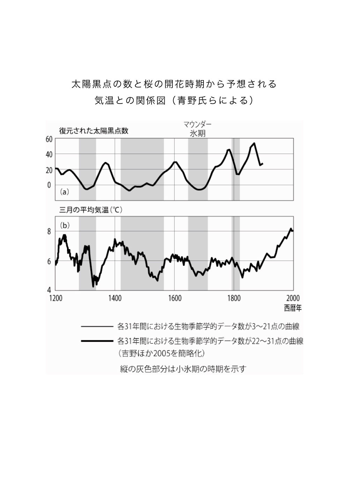
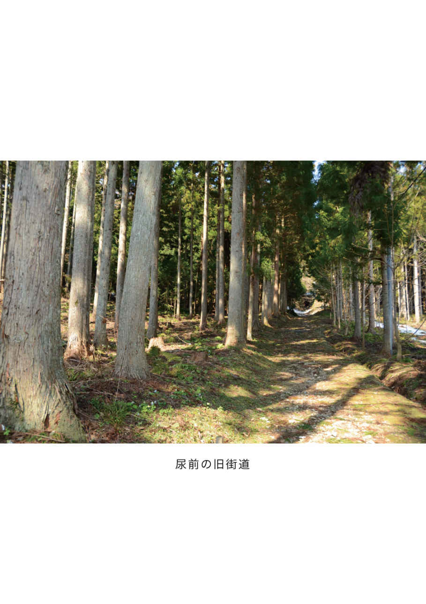

| 「おくのほそ道」を科学する: 芭蕉の足跡を辿る (22世紀アート) | |
| 蟹澤 聰史 | |
| 22nd CENTURY ART (2019) | |
目次
まえがき
ちぎれ雲が風に吹かれ飛んでゆくように、遠い陸の果て、海のほとりをさまよいながら、当てのないさすらいの旅に出たいとの気持ちにかられて、芭蕉は旅に出た。十七世紀後半に生きた「旅の詩人」あるいは「漂泊の詩人」といわれる俳人松尾芭蕉（一六四四〜九四年）は、生涯の最後の十年の大半を旅に費やしたのである。
一六八四年（貞亨元年）の紀行『野ざらし紀行』、一六八七〜八八年（貞亨四〜五年）にかけての『笈の小文』など、西方への旅に続いて、一六八九年（元禄二年）三月に門人の曽良とともに江戸を出立し、みちのくから北陸を辿り、八月に大垣に到着した。この間、ひたすら歩き、西行、能因、義経などに想いを馳せ、多くの歌枕を訪ね、思考しつつ旅したおよそ百四十日を綴ったのが『おくのほそ道』である。
芭蕉がその人生の終焉近くになって、なぜ、これほど生活のすべてを旅に注いだのであろうか。「芭蕉は謎である」という見解は多くの研究者にみられる。三百二十年あまりも経った今、芭蕉の足跡を偲ぶおもかげはほとんどなく、それを辿るのは容易ではない。芭蕉を旅に駆り立てたものは何だろうかと、『おくのほそ道』を手にその道を辿る人は多い。四百字詰め原稿用紙にして、わずか三十枚足らずに凝縮された『おくのほそ道』は、推敲に数年の歳月を費やしたという。
その冒頭に近く、「道祖神のまねきにあひて取 もの手につかず、......」とあり、あたかも道祖神によって招かれているようにもとれる。しかし、それより前には、「月日は百代 の過客 にして、行きかふ年も又旅人也」とあって、俳諧を通して自然の移り変わりを見れば、万物は永遠の真理がある一方で、動いて止むことはないといった哲学が、歳とともに彼の心の中に醸成され、さらに自然の移ろいを旅によって確かめたかったのではなかろうか。
謎に満ちた『おくのほそ道』に関して、芭蕉の足跡を辿った紀行文や研究書は数多 ある。わたしは文学に関しては全くの門外漢であり、ましてや芭蕉の意図するところまで解き明かすのは心得違いも甚だしいと思っている。
一方で、今まで誰も試みたことのない「自然科学的な見方を通して芭蕉の足跡を辿ってみたらどうなるだろう」というとらえ方も、一つの興味のある遊び心ではなかろうか。『おくのほそ道』の文学的解釈も然りながら、その文章にみられる語句の意味するところを、あるいは芭蕉の歩いた道の辺にひっそりと咲く花、空の星や月の運行に季節の移ろいを感じ、道端の石ころ、天気の急変でぬかるみに足を取られながら歩くところに目を向けて、解釈を加えてみたらどうなるだろうか、というわけである。
『おくのほそ道』を手に持って、みちのくの旅に出ようとしても、その凝縮された文章は、昨今のような紀行文とは全く異なっているのに気付くであろう。芭蕉は、『おくのほそ道』紀行の後、前後を入れ替え、省略し、推敲に推敲を重ねて『おくのほそ道』ができた。紀行文というよりも、むしろ創作と見た方がよいのであろう。その一方で、随行した曽良の『曽良旅日記』には、このときの旅程に関して、日時、天候、歩行距離、食事、宿泊地などが細かく記されている。この二つをもとに、その背景となっている自然の移ろいなど、ときには後戻りしつつ道草を食いながら、辿ってみよう。
なお、『おくのほそ道』引用の文は、萩原恭男校注『芭蕉おくのほそ道 付 曽良旅日記 奥細道管菰抄』（岩波文庫版）によった。
第一章 芭蕉の哲学・時間
時間感覚と人のはかなさ
〈序章〉
月日は百代の過客にして、行 かふ年も又旅人也。舟の上に生涯をうかべ馬の口とらえ（へ）て老をむかふる物（者）は、日々旅にして、旅を 栖 とす。古人も多く旅に死せるあり。予もいづれの年よりか、片雲の風にさそはれて、漂泊の思ひやまず、......
まずは『おくのほそ道』の序章にあたる文章を読んでみよう。そこに、芭蕉の人生観、あるいは月日とは一体どのようなものかを、うかがい知ることができる。
芭蕉は京都の禅寺で修行をしていたこともあって、老荘思想、李白、杜甫などの漢籍に長じていた。
芭蕉が冒頭に述べている「月日は百代の過客」とは、李白の散文『春夜宴桃李園序』から引用したものである。盛唐の詩人李白は、幼少より優れた文才を発揮したが、自由にあこがれ山にこもったりしたこともあり、四十歳を過ぎて玄宗に召されたが僅か二年で流浪の身となった。その後、杜甫との交流があったり、安禄山の乱のとき玄宗の子永王に招かれたりもしたが、再び野に下り、最後は安徽省県令の李陽冰のもとに身を寄せて病没した。一説には長江に舟を浮かべて遊んでいるときに、酒を飲んで酔った李白は川面に映った月を取ろうとして水死したという。
ほぼ同時代の杜甫の晩年も、放浪の末、いくつかの持病を抱えながら湖南省の潭州から岳州へ向かう途中、舟の中で失意の生涯を終えた。李白や杜甫などの先人たちが抱いたと同じ想いを芭蕉が持っていたことが、この序章には込められている。
『春夜宴桃李園序』には「夫天地者万物之逆旅、光陰者百代之過客、而浮生若夢」（それ天地は万物の逆旅にして、光陰は百代の過客である。而して浮生は夢のごとし）とある。逆旅とは旅館、過客とは旅人のことなので、地球を含む宇宙は、全てのものの旅館のようなもの、すなわち「不易」であり、その歴史を考えるとき、人生はまさにそこに一夜の宿を借りる旅人であり、夢のような、ほんの一瞬にすぎないもの、すなわち「流行」であると言っているとも解釈される。別の観点からすれば、人間を育む地球は太陽系の一員であり、太陽系は宇宙の一員である。こういった森羅万象を動かしている真理すなわち「不易」があり、人間の叡知は、このような真理を探究し、新たな知には絶えず更新してきた「流行」がある。
李白も杜甫も旅の中に生涯を見いだし、旅に死んだ。このことは、宇宙の根本原理に従って自分も生き、生涯を終えたいとの気持ちであるという芭蕉の哲学がここに凝縮されている。「片雲の風に誘われて」は、いかにも芭蕉らしい。青空に浮かぶちぎれ雲は、風によって消えては生まれ、生まれては消える、まさに人生そのものである。
ちなみに、李白のこの文章は、『おくのほそ道』より前の一六八八年（元禄元年）に井原西鶴が著した『日本永代蔵』に「されば天地は萬物の逆旅。光陰は百代の過客、浮生は夢幻 といふ。時の間の煙、死すれば何ぞ、金銀、瓦石にはおとれり」と引用されていることを付け加えておこう。
芭蕉が冒頭において李白の文章を引用したことには、大きな意味がある。「不易」の宇宙、それに対する人間のはかなさ、小ささを比較しようとしていると思われるからである。そこで、現在、私たちの住んでいる地球の歴史の壮大さを考えてみよう。
二十世紀初頭に放射性元素の崩壊という現象が発見され、その半減期をもとにして、地球の歴史はおよそ四十六億年であることが明らかにされた。この四十六億年という長い歴史を持つ地球の研究者たちは、百万年を一目盛りとするものさしを使っている。恐竜の繁栄したジュラ紀は、二億年前に始まったので、今から「四六〇〇分の二〇〇」くらいのところであり、人類の祖先が生まれた五百万年前は、わずか五目盛りにしか過ぎない。李白のいう天地の運行、日月の移ろいを旅に例えれば非常に長い「百代の過客」ということになる。
このような自然の移ろいに比べると、人間の一生は長生きしても「〇・〇〇〇一」くらいだから、何と短くはかないものであるかが実感できるであろう。
ひと口に四十六億年といっても、日常生活では想像もできない。そこで、四十六億年を一年に縮めて、実際のわたしたちの生活体験と比較してみたらどうなるかを考えてみよう。元日の午前零時に地球が誕生したとし、現在わたしたちが生きている今を大晦日の午後十二時とする。そうすると、次のようになる。
地球上で分かっている最古の岩石は三十八億年前にできたもので、桃の節句の三月四日頃である。地球上の最初の生命の化石はおよそ三十五億年前のもので、三月二十八日頃となる。三十八億年より前、つまり今の感覚では、桃の節句よりも前の時代の地球はどうだったか、それは地球の表面には証拠が残っていない暗黒の時代である。ギリシア神話の冥界の神ハーデース（プルートーン）の名前をとって冥王代と呼ばれる。冥王代、始生代、そして原生代までを先カンブリア時代と呼ぶ。実は、この先カンブリア時代が地球の歴史の中では最も長く、十一月半ばまで続く。
わたしが学生の頃、地球の歴史を解明する地質学では、この長大な先カンブリア時代に関してはほとんど分かっておらず、また、日本ではこの時代の地層は出ないなど馴染みの薄いこともあって、講義も数分で終わってしまった。しかし、現在はこの長い時代こそが、宇宙や地球の歴史、生命の歴史を考える上でも、また資源について考える上でも大変重要な時代であるとの認識が強くなっている。
そして、生物が爆発的に発生した古生代初期（カンブリア紀の始まり）は五億四千二百万年前なので、東北地方では晩秋、紅葉も終わりかけ、高い山では初雪の便りも聞こえる十一月十八日頃となる。恐竜の栄えたジュラ紀は二億年前に始まったので、十二月十五日頃である。北上山地や阿武隈山地の花崗岩のできた時期（中生代白亜紀の一億二千万年前）は、 十二月二十一日頃で、ちょうど冬至の頃となる。さらに、隕石が衝突して恐竜が絶滅した時期は六千五百五十万年前なので、クリスマスの十二月二十五日夕方である。ヒト属の出現する第四紀の始まった二百六十万年前は、大晦日の午後七時過ぎであり、歴史時代が始まったのは除夜の鐘が鳴っている最中となる。二十世紀などは、新年を迎えるカウントダウンも終わりの頃である。これに比べれば、如何に地球の歴史の長いかが分かるであろう。まさに「浮生は夢のごとし」である。
また、最近の宇宙創成に関する研究では、ビッグバンによる宇宙の始まりは百三十七億年前だという。では、それ以前はどうだったかという質問への答えは「宇宙誕生とともに時間も生まれたので、宇宙誕生の前には時間もなかった。宇宙誕生の前を議論することの意味はない」というのである。何だか禅問答のような話になってしまった。
有明けの月と旧暦
〈旅立ち〉
弥生 も末の七日、明ぼのゝ空 朧々 として、月は在明 にて光お（を）さまれる物から、不二の峰 幽 にみえて、上野・谷中 の花の梢、又いつかはと心ぼそし。むつましきかぎりは宵よりつどひて、舟に 乗 て送る。千じゆと云所にて船をあがれば、前途三千里のおもひ胸にふさがりて、幻のちまたに離別の泪をそゝぐ。
行春 や鳥啼魚 の目は泪
是を矢立の初として、行道 なを（ほ）すゝまず。人々は途中に立ならびて、後かげのみゆる迄はと、見 送 なるべし。
最初に「弥生も末の七日、明ぼのゝ空朧々として、月は在明にて......」とある。在明（有明け）の月とはどういうものであろうか。ここで、月の満ち欠けとその名称について考えてみよう。
日本で古来用いられてきた旧暦は、正確には「太陰太陽暦」で、月の満ち欠けを基準にするため、月の始めの一日はいつも新月（朔）であり、満月（望月）は十五日か十六日であった。月の形は、太陽と地球と月がどのような位置関係にあるのかで決まる。
上弦の月は、夕方の南に高く、次第に弦を上に向けて西の空に沈んで行く。一方、下弦の月は弦を上にして夜半過ぎに出てきて、夜明けには南の空に左半分が光り、次第に弦を下に向けて正午頃に西の空に沈んで行く。新月から三日月、上弦の月を経て満月となる。満月は日没と同時に東の空から出てくる。その後は、次第に月の出が遅くなり、下弦の月を経て、次の新月になる。
新月から次の新月まで、あるいは満月から次の満月までは「二九・五三日」かかり、これを一朔望月という。新月は、地球から見たときに太陽に最も近い位置にあるため、月のほとんどは陰の部分となって、細い鎌のような月として見える。有明の月とは、十六夜 の月以降、十七日月（立待の月）、十八日月（居待の月）、十九日月（寝待の月）、二十日月（更待 の月）、下弦の月（半月）などの総称をいう。十六夜の月以降にこのような固有の名称が付けられたのは、月の出が次第に遅くなることからなのであろう。
日食は、太陽と地球とのちょうど間に月がきて、太陽を隠すために起こるのだから、常に新月のときである。次第に太陽から離れてくると三日月となり、さらに月の半分が見える上弦の月となる。地球から見て太陽と反対側に月があるときには満月となる。満月は太陽が西に沈むとほぼ同時に東から昇ってくる。
月食は地球の陰に月が入るために起こるので、満月のときなのである。なお、月食では月が完全に暗黒ではなく、赤銅色のように見えるのは、地球に大気があって、太陽の青い光が散乱されて赤い光が月面に届くためである。また、大気中の細かい塵の量によって月面の色が変化し、塵が多いときには、大気中を通過する光の吸収が多いために黒っぽくなり、少ないときにはオレンジ色となる。
有明けの月と表現されているのは、夜明けに近く、東の空に出ている月なのでこう呼ばれる。弥生も末の七日は、旧暦二十七日であるから、まさに「明ぼのゝ空朧々として」、東の空に有明の月が見られるのである。旧暦の日にちは月の形状とよく一致する。ちなみに、有明の月が文学に出てくるのは、一夜を過ごした恋人との別れを惜しむ場面に多いが、朝になって東の空に見られるこの月だからであろうという説もある。
出立の日付について『曽良旅日記』では、「巳三月廿日、同出、深川出船。巳ノ下尅、千住ニ揚ル」とある。「弥生も末の七日」と相違するが、恐らくは曽良が「七」を書き落とした、出発予定日をそのままにした、あるいは曽良が先行した──などの説があるが、月の形状「明ぼのゝ空朧々として、月は在明にて......」からすれば、二十日月でもよいのだが、芭蕉の出立した日は東の空から出たばかりの鎌のような二十七日月がふさわしいように思う。
一朔望月「二九・五三日」の十二ヶ月分に相当する「三五四・三六日」と、地球が太陽を一周するのにかかる「三六五・二四日」との差約十一日を勘案して、月と太陽の両方の運行を考慮したのが日本で用いられてきた太陰太陽暦である。十九年に七回、ある月の後に一ヶ月の閏月 を設け、その年は一年を十三ヶ月として、暦と季節が大きくずれないようにした。五月と六月に挟まれた月は閏 五月と呼ばれた。日本で用いられた太陰太陽暦は、中国の黄河流域で四千年ほど前に考案されたものが六世紀初めに伝来し、その後何度かの修正がなされた。日本や中国など農耕を主とする民族では、季節の移ろいに敏感で、これが年々ずれると大変不便なことになる。月の満ち欠けを基準にし、太陽の回りを一周する地球の公転との差をうまく解決した、いにしえの人々の知恵の一つであろう。
しかし、福沢諭吉などの強力な推進によって明治の改暦では太陽暦（グレゴリオ暦）が採用されることとなり、日本では一八七三年一月一日から用いられた。前年の十二月三日をもって、「明治六年一月一日」としたのである。このときはかなりドタバタと決まったようで、幕末以降急激に増加した外国との関係はもちろんであるが、一八七三年は閏年で十三ヶ月あり、改暦によって一ヶ月少なくなれば給料の支払いが節約できたことも理由の一つとされる。
なお、季節の変化があるのは、地球の自転軸が公転面の法線に対して「二三・四度」傾いているために、地表面と太陽との角度が変化することによる。
定時法と不定時法
『曽良旅日記』には、旅行中の行動記録の時刻が随所に記載されている。時刻に関しては、昔の人は生活体験に基づいて決めていた。つまり、日の出とともに働き、日没とともに休むということを基準にして、日の長い夏は日中の時刻の単位が長くなり、日が短い冬は逆に日中の時刻の単位は短く夜の時刻の単位は長くなるという「不定時法」が用いられていたのである。
しかし、時代が進むにつれ、ある一定地域を権力者が支配するようになり、あるいは日常生活において多くの人びとの生活環境が一定の時間法則に従わないと不便な面も出てくるようになって、昼と夜の時刻単位を均等にしなければならなくなった。
現在のように、季節によって一日の時刻を変化させずに、等分したのが「定時法」である。定時法が使用されていたことが確認されるのはかなり古く、九二七年（延長五年）である。しかし、古代宮中の時刻表示は定時法によっているが、庶民の実生活には不定時法を用いる方が便利であった。
江戸時代までは、時刻を示すのに、日が出てから日が沈むまでと、日の沈んでいる間とを区別して生活しており、昼と夜をそれぞれ六等分し「一時 」と呼んでいた。そのため、夏至の頃には昼間が長く、したがって「一時」も冬至の頃に比べれば随分長い。また、緯度や経度によっても日の出・日没の時刻は異なる。不定時法は自然のリズムに合わせたもので、時刻は太鼓や鐘、寺の梵鐘などを鳴らして知らせた。
江戸城には時計係がいて、初期の頃には砂時計、中期以降になるとオランダから取り寄せたゼンマイ式時計を用いて時刻を計り、それを上野、浅草、本所、日本橋などに設けられた「時の鐘」によって市中に知らせた。さらにそれを聞いた「時の鐘」のある寺などが、改めて鐘を撞いて知らせたので、江戸城と城下の端とでは多少の時差があったが、当時はそれほど不便ではなかったであろう。
「花の雲鐘は上野か浅草か」は、芭蕉四十四歳のときに、深川の草庵で詠んだ句で、今聞こえた時の鐘の音は上野・寛永寺か、はたまた浅草・浅草寺 の鐘だろうかという意味である。
藤原益栄氏は、『曽良旅日記』の記述から、仙台を出立した芭蕉が多賀城を経て塩竈に至る十八㌔を「定時法」で考えると、途中で昼食を摂り、いくつかの歌枕を訪ねながら三時間で到着してしまうことには無理があることから、「不定時法」で記述されていることを指摘している。江戸時代には定時法が確立されてはいたが、庶民の生活の中では不定時法が相変わらず用いられていたと考えれば、こういった矛盾は解決されるという。
このことは、後で実際に『曽良旅日記』を参照するときに気付くのであるが、曽良のとった記録を「定時法」で考えると、芭蕉の歩く速さが時速七㌔を超えるような場合も多く、不自然なところが出てくるのである。こういった不自然さが指摘されるにつれて、以前は『曽良旅日記』の時刻も定時法で説明されていたが、最近は次第に不定時法による解説に変わってきている。
わたしが通っていた信州・伊那谷の小学校（当時は国民学校といった）では、用務員さんが始業と終業の時刻を大太鼓によって知らせていた。「ドンドンドーン」と響く太鼓の音は、チャイムや振鈴などよりものどかな響きで、打ち手が替わるとリズムも変わるのであった。もちろん定時法であったが......。
『おくのほそ道』の本文では、出立は弥生も末の七日（二十七日、新暦五月十六日。なお今後断りのない限り、新暦はグレゴリオ暦を用いる）で、『曽良旅日記』との日付の食い違いはあるが、その夜は春日部（粕壁）に泊まった。二十八日（新暦十七日）は間々田に、翌二十九日（新暦十八日）には鹿沼に泊まったとある。さらに、本文中には「卅日 （晦日）、日光山の麓に泊る」となっている。この「みそか」は月の最終日のことで、実際は二十九日であった。翌日は四月朔日（新暦十九日）で、日光に参拝し、「卯月朔日、御山に詣拝す」とある。そうすると、三十日はどうなったのであろうか。
実は、先に述べたように、一朔望月「二九・五三日」なので、太陰太陽暦でも「大の月」と「小の月」があり、それぞれ、一ヶ月の日数は三十日と二十九日であった。一六八九年（元禄二年）の三月は小の月で二十九日までしかなかったのである。そして、芭蕉が奥州へ旅立った「元禄二年」は閏年で、十三ヶ月あり、一月の次に閏一月があった。そして閏一月、三月、四月、六月、八月、および十二月が小の月であった。旧暦では、現在の新暦のように、二月、四月、六月、九月、十一月が小の月とは決まっていなかった。
わたしの小さい頃、新暦の小の月を覚えるのに、それぞれの月の数字を取って「西向く士 」と母から教わった。九月までは読み通り「二 、四 、六 、九 」で、「士」の字は十と一が重なったものにみえるためだ。ほかに大小の月の覚え方には、にぎりこぶしをつくって、人差し指の付け根の関節が飛び出たところを一月、中指との間の凹みを二月として順次小指まで、大小大小と続ける方法もある。八月を二回小指の関節で数えればよいのだが、そうしないとずれてしまって間違ってしまう。いささかややこしくて忘れてしまいそうである。
不二の峰幽かにみえて
不二とは富士山のことである。芭蕉が奥州へ出立の頃は、江戸の人口も少なく、もちろん大気汚染の影響などは考えられなかった時代である。富士山は好天ならよく見えたであろう。
富士山が東京からどのくらいの頻度で見えるかをテーマにした研究結果がある。東京都武蔵野市にある成蹊高校・中学の生徒たちが、大気汚染が社会問題になった頃の一九六三年から富士山の目視観測を続けており、その結果、一九六五年には年間二十二回しか見えなかった富士山が、二〇一〇年には百十六日と増加したことが明らかにされた。
目視によって遠方の山々が見えるのは、基本的には気象条件に左右されるが、一方では大気汚染が次第に収まってきたこと、さらに乾燥化も進んでいるらしいことが指摘される（二〇一一年一月十八日朝日新聞）。出立の日は「幽 かに......」とあることから、おそらく春霞によって、冬空のようにはくっきりと見えずに、ぼんやりと見えたのであろうと、当日の天候が推定される。あるいは、春先に中国大陸から多く飛んでくる黄砂のせいだったかもしれない。
ちなみに、富士山は今から千百年以上前の八六四〜八六六年（貞観六〜八年）年にかけて、大規模な噴火があり、青木ヶ原溶岩流と総称される何枚かの溶岩流が流出した。『日本三代実録』には、「貞観六年七月十七日 駿河国富士大山に忽ち某火あり。崗巒 （丘や山々）を焼砕し、草木を焦殺し、土を鑠 かし（融かし）石を流し、......」とある。このときの噴火は文献記録に残る最大規模のものといわれている。
さらに、一七〇七年（宝永四年）にも大きな噴火があり、宝永の爆裂火口を形成した。芭蕉は一六九四年（元禄七年）十月に大阪で没しているので、このときの活動には遭遇しなかった。この噴火では、火口東側に大規模な降灰があり、大きな被害があった。このときの火山灰は江戸にまで到達した。新井白石は、『折たく柴の記』で、このときの様子を「よべ地震ひ、此日の午時雷 の声す、家を出るに及びて、雪のふり下るがごとくなるをよく見るに、白灰の下れる也。西南の方を望むに、黒き雲起りて、雷の光しきりにす。西城に参りつきしに及びては、白灰地を埋みて、草木もまた皆白くなりぬ。......やがて御前に参るに、天甚だ暗かりければ、燭を挙て講に侍る」と記している。昨夜から地震があり、午頃には雷のような音がした。家を出ると、草木に雪が降ったように見え、最初に白い火山灰が降り、次いで黒い灰が降ってきた。藩主に対する講義は蝋燭を灯して行った──ということである。白石は当時、甲府宰相綱豊（のちの六代将軍徳川家宣）に仕え、学問を進講していた。
ここで重要なことは、この噴火に先立つこと四十九日前の十月四日（新暦十月二十八日）には、マグニチュード（Ｍ）８・６と推定される宝永地震が起こったことである。被害は東海道から紀伊半島、四国にわたり死者二万人に及んだ。また津波による被害は、伊豆から九州にわたる太平洋岸一帯と、伊勢湾、豊後水道、瀬戸内海や大阪湾にまで入り込んでいる。そして、家屋の流失は二万戸に達した。このときの地震は記録に残る日本最大級の地震で、宝永の噴火と大地震を合わせて「亥の大変」と呼ばれた。西南日本を形成するユーラシアプレートにフィリピン海プレートが沈み込んでいる「南海トラフ」と呼ばれる地帯のほぼ全域にわたるプレートが、一気に破壊されたのである。
ここは、歴史時代からの地震地帯であることは現在でも変わっていない。二〇一一年三月十一日に、日本海溝付近の宮城県沖に震源を持つ巨大地震（気象庁の正式名称は「平成二十三年（二〇一一年）東北地方太平洋沖地震」という）とそれに引き続く巨大津波は、東北地方から関東にかけて「東日本大震災」という歴史に残る大きな被害をもたらした。南海トラフも全く同様な性格を持っており、現在の日本列島が直面する危険地帯なのである。
富士山の噴火については、『万葉集』の高橋虫麻呂作といわれる長歌に、
なまよみの甲斐の国
打ち寄する駿河の国と
こちごちの国のみ中ゆ
出で立てる不盡 の高嶺は
天雲もい行きはばかり
飛ぶ鳥もとびも上らず
もゆる火を雪もち消ち
ふる雪を火もち消ちつつ
言ひもえず名づけも知らず
.....................
（『万葉集』巻三・三一九）
とあり、富士山の噴火を詠ったとみられる。同じく『万葉集』には「吾妹子に逢ふ縁を無み駿河なる不盡の高嶺燃えつつかあらむ」「妹が名も吾が名も立たば惜しみこそ布仕 の高嶺の燃えつつ渡れ」（巻十一・二六九五、二六九七）がある。
また、平安末期、西行の歌にも「けぶり立つ富士におもひのあらそひてよだけき恋をするがへぞ行く」「いつとなき思ひは富士の烟にておきふす床やうき島が原」「風になびく富士の煙の空にきえて行方も知らず我が思ひかな」（『山家集』）など、富士山から立つ煙を詠っている。宝永の噴火以前、奈良時代から平安末期頃にかけても、富士山はかなり活発に煙を上げていた。
このような大地震の後に近辺の火山噴火があった例はよく知られており、最近ではスマトラ沖で頻発するマグニチュード（Ｍ）９・０クラスの地震の後に、インドネシア・ジャワ島のムラピ（メラピ）火山が噴火している。東日本大震災の後に、このような噴火が起こる可能性も十分にある。
富士山は、宝永の噴火から三百年あまり平穏な時代が経った。日本を代表し、世界の中でも端麗な山として知られる富士山が、この長い沈黙を破っていつ噴火するとも限らない。一極集中を是としてきた日本。今の世に首都圏に近い富士山などの噴火が起こったとすれば、たとえ数㌢の降灰でも、首都圏ばかりでなく、日本のすべての機能や人々の生活は計り知れない影響を被ることは必至である。
上野・谷中の花を芭蕉は見たか？
「弥生も末の七日」は三月二十七日のことで、新暦では五月十六日にあたる。現在の感覚では五月の連休も過ぎ、みどり鮮やかになり始める頃である。かなり暑い日もあったであろう。上野・谷中の花というのは今も桜の名所として知られる上野公園の近くである。この花は桜だったのだろうか。そう考えると、どんなに春の遅い年であっても江戸の桜は散り果ててしまっていたに違いないと思われる。しかし「芭蕉が出立したときには、桜の花が咲いていたであろうか」という疑問が残る。芭蕉は出立の日に「谷中の桜を想い出しながら出立した」、あるいは「遅咲きの桜が咲いていたのを見ながら出立した」などと想像される。
地球の気候は四十六億年という長い歴史の中で、何度も温暖な時期と寒冷な時期の繰り返しがあったことはよく知られた事実である。第四紀の更新世と呼ばれる時期のうち、およそ七万年前から一万年前までは最終氷期と呼ばれる寒冷な気候の時期であった。この時期には、地球上の水が現在よりも大陸に氷河（氷床）として大量に閉じ込められていたため、海水面が現在よりもずっと低く、最盛期には百二十㍍ほども低下し、現在の東京湾や瀬戸内海は陸地となっていた。一万年前以降、地球は温暖化して海水面が上昇してきた。詳しく見ると、今から七千年ほど前の縄文時代前期には縄文海進といわれる通り、現在よりも海水準が二〜三㍍ほど高く、逆に今の関東平野や仙台平野ではかなり内陸部まで海が侵入していた。この海水準面が高くなった理由については次の章で詳述する。
その後、小規模な寒冷期と温暖期が繰り返されており、今から過去一千年までの間では、ヨーロッパで一五五〇〜一八五〇年にかけて小氷期があったとされ、日本でも一四〇〇年以降十九世紀初頭までが寒冷期だったという証拠が認められている。地球上の各地で、必ずしも同時期ではなかったが、十七世紀から十九世紀にかけて寒冷期に見舞われたようである。
芭蕉が旅立った一六八九年（元禄二年）頃はこの寒冷期に当たり、この頃の桜はかなり遅く咲いたと考えれば矛盾しない。
そこで、桜の咲く時期を調べてみた。桜の開花時期予測は民間の気象予報会社で高い精度で行うようになったため、気象庁の開花宣言は二〇一〇年から取りやめとなった。桜の開花時期は「ソメイヨシノ」の開花を基本にしているが、これは江戸末期に江戸の染井村（現在の東京都豊島区駒込）で、造園師たちが人工的に創り出した桜で、種子を播いて繁殖させる実生 では育てられないため、一本の木から接ぎ木を繰り返して繁殖させたいわゆるクローンといわれるものである。したがってクローンは同一の起源で、遺伝子情報も全く同じ一つの巨大な個体といえる。そのため、同じ場所にソメイヨシノが植えられている公園や河畔などでは、一斉に咲き始め、一斉に散ってしまう。おそらく、ある場所でのソメイヨシノの寿命もほぼ同じに尽きるであろう。芭蕉の頃にはソメイヨシノはまだ存在していなかった。

そこで、当時存在していた桜についての開花時期を調べてみたところ、いわゆる「ヤマザクラ」の開花時期を古い文献や日記などから抽出してまとめた研究が大阪府立大の青野靖之氏らのグループから発表されていた。それによれば、芭蕉が『おくのほそ道』紀行に出立した頃は気温が現在よりも数度低く、桜の開花時期も遅かった。これは世界的な小氷河の時期であるマウンダー氷期に相当するということである。この小氷期の時期は、太陽黒点活動の周期ともよく一致する。
植物学の専門家によると、現在の気候では、ヤマザクラといわれるものは四月頃、カスミザクラは四〜五月、オオヤマザクラは五月上旬に咲くとのこと。「古くは桜といえばヤマザクラを指したと言われるが、それは誤りで、（三月下旬〜四月に咲く）エドヒガンより上方の山に生える高木の桜のことを指した」という。そして「西日本ではヤマザクラ主体、東日本ではオオヤマザクラ、新潟以北の日本海側ではカスミザクラ......ではと思われる」ともいい、種類も多く、開花時期もまちまちである。
一方で、東京近辺では、遅咲きの桜で五月に咲くのはイヌザクラではないかとの指摘もある。ところが、芭蕉は植物学の専門家ではないので、おそらく房状に咲くイヌザクラを桜と判断することはなかったと思われる。この一つの文章を解釈するのも大変困難だということが分かった。
それでは、国文学者の見解はどうなのであろうか。普通に解釈すれば「新暦に直せば五月十六日にあたる。『上野・谷中の花の梢』は、実際には見える道理がない。それは芭蕉の想念の世界に想い描かれた『花の梢』、もう一ついえば、代々の歌人たちがあかず愛惜してきた『花の梢』でもあった」という潁 原 退蔵・尾形仂両氏の『おくのほそ道』がもっとも妥当なところのようである。芭蕉は、長旅への出立の朝、葉の繁り始めた谷中の桜の木を見て深い感慨を覚えながら、つい先月頃に満開に咲いていた桜を思い出していたというのは、俳人として当然なことなのかもしれない。
その一方で、芭蕉が旅立った前後、つまり西暦一六四五〜一七一五年頃は、開花予測のために用いようとする桜が非常に多様であることはともかく、マウンダー氷期の時代に当たる低温期だったことは間違いなさそうであり、この時期は、太陽黒点の数が非常に少なかったと言われている。ヨーロッパでは、この頃、宗教戦争・紛争・魔女狩り・不作・穀物価格の高騰・難民と流民など、「十七世紀の全般的危機」といわれる時期だったという社会科学的な研究もある。こういった、一見互いに無関係なことでも、調べてみると奥深い関連があることが分かり、興味深いものがある。
第二章 草加から殺生石・遊行柳まで
縄文海進と氾濫する利根川
〈草加〉
ことし元禄二とせにや、奥羽長途の行脚、只かりそめに思ひたちて、呉天に白髪の恨を重ぬといへ共、耳にふれていまだめに見ぬさかひ、 若生 て帰らばと定 なき頼 の末をかけ、其日漸 草加 と云 宿 にたどり着にけり。......只身すがらにと 出立 侍 を、......
『曽良旅日記』では、草加の宿については触れておらず「廿七日夜、カスカベ（粕壁＝春日部）ニ泊ル。江戸ヨリ九里余」とある。翌二十八日には「マヽダ（間々田）ニ泊ル」と記されており、芭蕉研究者の間では実際は春日部に泊まったことは明らかだという。春日部は現在の埼玉県春日部市、間々田は利根川を越えた栃木県小山市間々田である。この辺りは、当時は家も少なく、どこまでも広い関東平野の真ん中であった。
芭蕉は旅の第一夜、隅田川を舟で遡り、千住で降りて歩き始め、草加に泊まったとある。千住から草加までは二里八丁で、あまりにも近過ぎる。江戸時代の一里は約四㌔で、今とほぼ同じである。春日部から先、北方に向かっては広大な関東平野が広がり、荒川、古利根川、利根川など、何本もの河川を渡らなければならない。
さて、群馬県北部に源を発する利根川は関東平野を横断し、千葉県銚子で太平洋に注いでいるが、実はこの流路は一五九四年（文禄三年）から一八〇九年（文化六年）にわたる利根川の改修工事（利根川東遷事業）によってつくられたものであって、それ以前の利根川は埼玉県羽生市付近から南に向かい東京湾に注いでいた。そして、荒川や渡良瀬川、隅田川などとともに入り乱れて流路が変わり、現在の埼玉県東部から東京都東部にかけてはたびたび洪水に見舞われていた。芭蕉が旅立ったのは、このような洪水を防ぐための大規模な土木事業が始まってから百年ほど経った頃であった。
現在の埼玉県から東京都東部にかけての地域は、隅田川、荒川、江戸川、および古利根川の流路によって運ばれた土砂が堆積した完新統と呼ばれる新しい時代の地層から成り立っている。そして、これらの河川のほか、渡良瀬川、多摩川などの水を集めた大河川によって形成された古東京川と呼ばれる谷が浦賀水道の海底まで続いている。先に述べた最終氷期の頃は、北アメリカ大陸やヨーロッパ大陸の北部では厚さ数千㍍に達する氷床が形成されていた。つまり、地球上の水が陸地に氷として貯蔵されていた。そのため、現在よりもおよそ百二十㍍海水準面が低かった。その頃は、現在の東京湾となっているところは陸地で、南北に川が流れていた。それが古東京川である。
何回も繰り返された地球の気候変動の最終氷期が終わると、高緯度地方の大陸に閉じ込められていた氷河の氷が融け、海水面が上昇した。そのために、それまで陸地であった標高の低い地域は海水で覆われ、谷だった地域が埋められて埋没谷となった。現在の東京湾には、古東京川が海中に没した埋没谷が発達する。
先に述べたように、今からおよそ七千年前の縄文前期には、現在よりも二〜三㍍ほど海面が上昇した。このときの海水面の上昇は、さらに氷床が融けて海水面が上昇したのではなく、最終氷期が終わって急激に海水が増加したため、水の加重で、海洋底が遅れて沈降したことによると考えられている。この時期を有楽町海進、あるいは縄文海進という。この海進の証拠は、縄文前期の貝塚の分布が、この時代の海岸線に沿って見られることから明らかとなった。
なお、縄文海進は、スカンジナビアや北アメリカ大陸など、氷河時代に厚い氷床が分布していた高緯度地域では見られない。その理由は、氷の融解により大陸面にかかっていた氷床の荷重が急激に減少したために、大陸地域の隆起の方が海洋地域の隆起よりも大きいことによる。つまり、この時期の海水面の上昇は地域ごとに異なっているのである。縄文海進の頃には、芭蕉の旅した草加、春日部付近までは海だった。
芭蕉の旅の最初のルート、すなわち深川、千住、草加、春日部辺りは、このような埋没谷を埋めた地層の上にある。さらに、これらの最も新しい地層を完新統と呼ぶ。完新統の下位には、千葉県北部、埼玉県、東京都東部一帯にかけて鮮新世末期〜更新世中期、つまり今から二百万年から七万年ほど前の深海〜浅海に堆積した上総層群と呼ばれる地層が広く分布する。これらの地層の中にはその頃の海水（化石海水）が閉じ込められ、堆積した有機物が還元的な環境のもとで分解・生成したメタンなどがその中に溶け、南関東天然ガス鉱床として利用されている。
芭蕉の足跡を辿ってみようと思った二〇〇七年二月の晴れた一日、隅田川に沿って深川の芭蕉庵旧地を訪れた。そこには興味のあることが「芭蕉遺跡保存会」による案内板に書かれていた。有名な「古池や蛙飛びこむ水の音」の句はここで詠まれたとのことである。さらに案内板によれば「芭蕉没後、この深川芭蕉庵は武家屋敷となり、幕末から明治にかけて滅失してしまった。たまたま、大正六年（一九一七年）の津波襲来によって芭蕉が愛好したといわれる石造の蛙が発見され、地元の人々により芭蕉稲荷を祀り、同十年に東京府によって旧跡に指定された」とのことである。深川の芭蕉稲荷には「古池や」の句碑が立てられ、清洲橋近くの隅田川のほとりには芭蕉の像が立てられていた。付近の清洲公園にも同じ句を刻した碑がある。
このときの津波というのは、一九一七年九月三十日に静岡市東方付近に上陸した台風による高潮によるもので、五百人以上の犠牲者、全壊家屋二千戸にのぼった。そして千葉県浦安町は全町が水没し、東京湾で行われてきた製塩業の幕が閉じられたとのことであった。二〇一一年の東日本大震災でも、現在の浦安市を中心とした一帯は、新しい地層に加えて埋め立て地が多く、激しい地震動による液状化で大きな被害を受けた。
二〇〇七年九月、学会途中の時間を利用して千住へ、そこから東武線に乗り換えて新田へと来て、さらに蒲生まで歩いてみたが、どこまで歩けど、新しい家並みばかりで、芭蕉の足跡を探すのは至難であった。途中、綾瀬川のたもとに「蒲生の一里塚跡」というのがあった。深川も千住も、記念館や句碑などのほかには、当時のおもかげを偲ぶことは大変困難であることが分かった。
鹿沼・日光
〈仏五左衛門〉
卅日 、日光山の麓に泊る。あるじの云けるやう、「我名を仏 五 左 衛門 と云 。万 正直を旨とする故に、人かくは申侍 まゝ、一夜の草の枕も打解 けて休み給へ」と云。
『曽良旅日記』には、三月二十九日（新暦五月十八日）には「マゝダヲ出。......鹿沼ニ泊ル」とある。したがって、芭蕉が「卅日、日光山の麓」と言っているのは、二十九日に鹿沼に泊まったことを指している。既に述べたように、この年の三月は小の月で、二十九日までしかなかったので、この日が晦日である。さらに『旅日記』には翌日「四月朔日（新暦五月十九日） 前夜ヨリ小雨降。辰上尅、宿ヲ出。止テハ折々小雨ス。終日雲、午ノ尅、日光ヘ着。雨止」とあり、小雨の中、鹿沼から日光までの七里二十八㌔を辰ノ上尅（定時法では午前八時頃）に出立し、午ノ尅（定時法の正午頃）には日光に着いたとなる。休みなしで、小雨の中を時速七㌔で歩くというのは、かなりのスピードである。
そこで、不定時法で考えてみると、出立は午前六時半から七時頃で、日光に到着したのは正午頃となり、五時間から六時間程度かかったことになる。時速五・六㌔から四・六㌔ほどとなり、それでも結構速足だったが妥当な速度だろう。定時法によれば、芭蕉と曽良の足の速いことが、芭蕉忍者説の一つの根拠になったのではなかろうかとの憶測も成り立つ。しかし、当時、日常生活は不定時法がもっぱら用いられていたと考えれば、それほど不自然なことではない。
この付近一帯には芭蕉が泊まった鹿沼の地名に由来する鹿沼軽石層、あるいは鹿沼テフラといわれる軽石層が広く分布する。テフラというのはギリシア語で「灰」を意味し、噴火の際に火口から放出され、空中を飛行して地表に堆積した火山灰、軽石や岩片などの火山砕屑物のことをいう。鹿沼軽石層は赤城火山の中央火口丘が形成される前の、およそ三万二千年前に噴火した軽石や火山灰が風に乗って流されて堆積したもので、関東地方の軽石層としてはもっとも規模が大きい。この軽石は通気性・保水性が良いため「鹿沼土」と呼ばれ、園芸用として採掘・利用されている。
なお、関東地方に広く分布する第四紀の中期以降に降り積もったこのような軽石層や火山灰層、あるいは火山砕屑物や、それがさらに風で運ばれ二次的に堆積したものは「関東ローム層」と一括して呼ばれていたが、戦後間もなく武蔵野台地や多摩丘陵などで研究が進められ、複数の給源や分布域などが明らかにされた。
鹿沼軽石層よりもさらに古い新第三紀の火山灰が堆積して固結した凝灰岩に「大谷石」といわれる石材が分布する。これは、宇都宮市大谷町一帯で採石されている軽石凝灰岩で、今から二千万年ほど前の新第三紀中新世の大谷層と呼ばれるデイサイト質〜流紋岩質の比較的シリカに富む軽石を含んだ岩石である。厚さ二百㍍、面積百平方㌔以上にわたって分布する。同じような軽石凝灰岩の石材は宮城県でもみられ、やはり新第三紀中新世の火山噴火によって形成された「秋保石」「野蒜石」などと呼ばれる石材が利用されている。いずれも、柔らかく加工しやすいこと、耐火性に富むために、建築石材として用いられている。
わたしが初めて仙台を訪れた頃は、東北本線沿いの車窓から、大谷石や秋保石、野蒜石を四角に切って積み上げた立派な建物や石倉、あるいは塀があちこちに見られた。灰色っぽくごつごつした感じだったので、信州の土蔵によく見られる白と黒のなまこ壁を見慣れたわたしには珍しい風景であった。
〈日光〉
卯月朔日 、御山 に詣拝す。往昔 、此御山を「二荒山 」と書しを、空海大師開基の時、「日光」と改 給ふ。千歳 未来をさとり給ふにや、今 此御光 一天にかゝやきて、恩沢八荒 にあふれ、四民安堵の栖穏 なり。猶 、憚 多くて筆をさし 置 ぬ。
あらたう（ふ）と青葉若葉の日の光
黒髪山は霞かゝりて、雪いまだ白し。
剃捨 て黒髪山に衣更 曽良
...............（中 略）...............
廿余丁山を登つて滝有。岩洞 の頂 より飛流して百尺 、千岩の碧潭 に落 たり。岩窟に身をひそめ 入 て、滝の裏よりみれば、うらみの滝と申伝え侍る也。
暫時 は滝に籠 るや夏 の初
芭蕉は、旧暦四月一日（新暦五月十九日）日光に詣でた。翌二日、裏見の滝、含満ガ淵などを見たことが『曽良旅日記』には、「同（四月）二日（新暦五月二十日）天気快晴。辰ノ中尅（不定時法で午前六時半頃）、宿ヲ出。ウラ見ノ滝・ガンマンガ淵見巡......、川を越。......未 ノ上尅 （午後零時五十五分頃から一時四十五分頃まで）ヨリ雷雨甚強」と、記されている。「川を越」との記述は、周辺の地名や時間から大谷川のことと判断されている。そして、鬼怒川の大渡を越えた。午後になって非常に強い雷雨に遭遇し、難儀したことであろう。栃木県は群馬県と並んで夏の雷の多いところである。新暦五月末でもこのような雷雨はよくあることだろう。
御山とは日光山のことで、宗教上の霊地の呼び名である。日光は二 荒 に当てた名前で、空海が改称したと信じられていた。黒髪山は日光山の主峰、男体山のこと。歌枕の一つである。うらみ（裏見）の滝は、東照宮から五㌔ほど西、男体山の麓にある。裏見とは、水流の落ちている裏側から見ることができるために付けられた名前である。滝の下部は新第三紀の流紋岩からなり、中央部に角礫を含んだ火砕岩が二㍍ほど、その上に第四紀の輝石安山岩が重なっている。火砕岩の部分は浸食されやすく凹んでおり、以前は凹んだ部分を利用して通ることができたが、明治の頃に崩壊してしまった。
男体山と中禅寺湖は日光の象徴ともいうべきものである。男体山は標高二、四八四㍍の成層火山で、すり鉢を伏せたような端正な形をしている。この火山は二万五千年ほど前に活動を開始した。その後北側に溶岩流を流出して含満ガ淵まで流下した。次いで南側に小雉溶岩、大雉溶岩の山体が形成されたため、堰き止められて中禅寺湖ができた。
那須・殺生石
『曽良旅日記』によれば、四月五日、雲岩寺を見物した後、六日からは雨の日が多く、「六日ヨリ九日マデ、雨不止」とある。十一日、十四日、十七日と雨が降り、「十八日 卯尅、地震ス。辰ノ上尅、雨止」とある。この日は午前三時四十五分頃地震があり、午前五時少し過ぎに雨も止んだ。この頃は、広大な那須野ヶ原を旅しており、雨に濡れて疲れていたと思われ、加えて夜の明けかけている頃の地震にはさぞかし驚いたことだろう。
実は、一六八三年（天和三年）五月二十三、二十四日（新暦六月十七、十八日）に日光付近で大きな地震があり、東照宮、大猷院、霊廟、奥の院などで被害が出たという。寒川旭氏によれば、この地震の原因は栃木・福島県境の那須岳から南に三十数㌔にわたる関谷断層の動きが考えられるという。芭蕉がここを通ったのは、曽良がわざわざ記録しているような大きな揺れであることを考えると、この日光地震から六年後のことなので、あるいは同じ原因なのかもしれない。
この辺りは、先に述べたような鹿沼軽石層や火山灰層が一面に分布しているので、表面は風化して粘土を生じ、雨が降れば大変滑りやすく、さぞ歩き辛かったのだろうと想像される。
〈那須〉
那須の黒ばねと云 所に知人 あれば、是より野越 にかゝりて、直道 をゆかんとす。遙 に一村を見かけて行 に、雨降 日暮 る。農夫の家に一夜をかりて、明 れば又野中 を行 。そこに野飼 の馬あり。草刈 お（を）のこになげきよれば、野夫 といへども、さすがに情 しらぬには非ず。「いかゞすべきや。されども此野 は縦横にわかれて、うゐ〳 〵 敷 の道ふみたがえ（へ）ん、あやしう侍れば、此 馬のとゞまる所にて馬を返し給へ」とかし侍 ぬ。ちい（ひ）さき者ふたり、馬の跡したひてはしる。独 は小姫にて、名を「かさね」と云 。聞 なれぬ名のやさしかりければ、
かさねとは八重 撫子 の名成 べし 曽良
頓 て人里に至れば、あたひを鞍つぼに 結 て馬を返しぬ。
この付近は現在の栃木県北部に位置し、四百平方㌔にもおよぶ広漠たる那須野ヶ原扇状地の記述である。黒ばね（黒羽）から広い野原を通り越してゆかなければならない那須野ヶ原では、「道が縦横に分かれていて、初めての旅人は道を間違えるだろう。気がかりなので、馬を貸してあげるから、あとで返してください」と言われたことが書かれている。子どもが二人、馬の後ろに付いて走ってくる。一人はかわいらしい女の子で、名前を「かさね」という聞き慣れない優雅な名前である。何とものどかな当時の田舎の光景が目に浮かぶ。
曽良の句は、「かさねとは、花弁が八重の撫子の名前であろう」という意味だ。ナデシコはナデシコ科に属し、北半球では三百種類ほどあるが、カワラナデシコが一般的なものである。江戸時代は平和な世が続いたせいもあり、園芸が盛んで、桜なども含めて、いろいろな種類が育種・栽培された。一七五五年（宝暦五年）に刊行された『絵本 野 山 草 』には、「めづらしきなでしこ一重八重十重百重千重数百種あり......」とあるので、芭蕉の頃もナデシコにたくさんの変種ができていたことと思われる。
日本女性の美称に「大和撫子」が古くから用いられているが、これはカワラナデシコの異名でもある。二〇一一年、サッカーでＦＩＦＡ女子ワールドカップ優勝を果たした「なでしこジャパン」もこの名称から採られた。
二〇一二年の春、ロシアの科学者がシベリアの永久凍土から発掘したおよそ三万二千年前のナデシコの種子から組織を抽出して、見事に発芽、開花させたというニュースが新聞紙面を賑わせた。発芽したのはスガワラビランジという種だが、現生種とは花の形が異なるという。発見されたナデシコの種子はリスが食料貯蔵のために埋めたものとみられ、氷河期の時代のもので周囲の地層からはマンモスなどの骨も見つかっている。このことから永久凍土は氷河時代の貯蔵庫の役割を果たしているとみられ、今後、このような化石植物が凍土の中から生き返る可能性を秘めていることを教えてくれた。
日本でも一九五一年、千葉市の落合遺跡の泥炭層から発掘されたハスの実を、植物学者の大賀一郎氏が開花させた。このときは、泥炭層直上から発掘された丸木舟のカヤの木の年代も測定され、二千年前のものであることが明らかにされた。それにしても、一粒の種子の持つ生命力の強さには驚かされる話である。
子孫を残すための種子の持つ強さも驚きであるが、小さな花粉や胞子はさらに細粒でありながら、その形態を保持しやすい性質を持っているために、古い地層からこれらを抽出し、種類を同定することが可能である。ある地層の中に含まれる植物が熱帯性なのか温帯性なのか、あるいは寒帯性なのかを知ることによってその植物の含まれている地層がどういった気候や環境のもとで形成されたかを解明することができ、このような学問分野を古気候学、あるいは花粉学という。
さて、歩みを那須野ヶ原に戻そう。今でも那須岳の中腹から那須野ヶ原を望めば、その広大さが理解できるし、芭蕉の訪れた当時は道路も整備されておらず、雑木林が繁り、いったん道に迷えば、それこそ大変だったろうと想像される。那須岳の北、三本槍岳から東西に延びる尾根が福島県との境である。これより北は阿武隈川の水系で、流れは北に向かう。
矢板を過ぎ、黒磯、那須を通る道からは西方に帝釈山地を控え、北部には那須火山群、西部には主に第三紀火山岩類が分布し、さらに高原 火山が聳えているのが遠望できる。那須野ヶ原扇状地は、いくつもの河川によって第四紀に形成された広大な複合扇状地で、河川は東南部で那珂川に注ぐ。那珂川をはさんで東部は古・中生界（古生代、中生代に形成された地層や岩石）からなる八溝山地で画されている。
那須火山に源を発する那珂川の北東部には高久丘陵が発達し、二十万年より古いと見られる黒磯・余笹川岩屑なだれ堆積物が広く分布する。岩屑なだれとは、粘性の高いマグマの貫入によって火山体が変形したり、水蒸気爆発や地震などが原因で火山体の不安定な部分が表層なだれのように高速で崩れ落ちたりする現象のことである。
那須野ヶ原の大部分は扇状地堆積物で、高位段丘、第一段丘、第二段丘、第三段丘と区分されている。また、那須火山の麓には主に山体崩壊物からなる広々とした裾野が広がっており、さらに厚さ二㍍に達する関東ローム層が覆っている。したがって、広く平坦な原野にススキなどが繁っているか、灌木の林が続いていたと推測され、初めての旅人にとっては非常に歩きにくく、また方向も分かりにくいところであっただろう。
〈殺生石・遊行柳〉
是より殺生石 に行 。館代 より馬にて送らる。 此 のお（を）のこ、「短冊得させよ」と乞 。やさしき事を望侍 るものかなと、
野を横に 馬 牽 むけよほとゝぎす
殺生石は温泉 の出る山陰 にあり。石の毒気いまだほろびず、蜂・蝶のたぐひ、真砂 の色の見えぬほどかさなり死す。
又、清水ながるゝの柳は、葦野 の里にありて、田の畔 に残る。此所の郡守戸 部 某 の、「此柳 みせばや」など、折〳 〵 にの給ひ聞え給ふを、いづくのほどにやと思ひしを、今日此柳のかげにこそ立 より侍 つれ。
田一枚植 て立去る柳かな
殺生石は、那須火山の麓、那須温泉のすぐ上にある。「石の毒気いまだほろびず、蜂・蝶のたぐひ、真砂の色の見えぬほどかさなり死す」とは、硫化水素などの火山ガスにより、蜂・蝶などが付近の岩石の見えないほどに累々と重なって死んでいることを言っている。火山ガスは、地表に噴出するマグマ中に溶けている揮発性成分のことで、地表に出て減圧されるとガスが分離する。その九〇㌫以上は水（H２ O）で、他にフッ化水素（HF）、塩化水素（HCl）、硫化水素（H２ S）、亜硫酸ガス（SO２ ）、二酸化炭素（CO２ ）などが含まれている。低温の火山ガスには硫化水素や二酸化炭素が多い。火山地帯で経験する卵の腐ったときに発生する臭いはそもそもこの硫化水素なのである。また、空気よりやや重いので、地中から吹き出した硫化水素は、地面を這うようにして溜まっている。火山地帯では、知らずに窪地に入ったりすると大変危険である。
殺生石については、次のような伝説がある。平安末期、一一五五年（久寿二年）の頃、鳥羽上皇は才色兼備のうら若い女性を寵愛していた。実はこの美女は下野国那須野に住む百歳の狐が国を奪おうという魂胆で「玉藻の前」と名前を変え化けて院に仕えた。上皇は次第に体調を崩し、ついに臥せってしまった。陰陽師に占わせたところ、病気の原因は女性の仕業だと分かった。玉藻の前は正体を現して、丈は七尋、尾が二本の「九尾の狐」となった。そこで、上皇の命により討伐軍が編制され、さんざん苦労した末にようやく狐は殺害され、石になってしまった。
この石は一三八五年（至徳二年）、玄翁和尚によって打ち砕かれ、その破片が全国に飛び散り、その一つが那須の殺生石となったといわれる。殺生石は、退治された恨みを抱いているために毒気を放っているのだという。ちなみに、金槌のことを「げんのう」というのは、この玄翁和尚からきている。
鳥羽上皇の寵愛した美人玉藻の前が狐の化身であったという筋書きについて、五来重氏は、「院政時代には権力争いや荘園争奪から、後宮に陰謀が渦巻いていたところから言い出されたことで、悪魔の正体を顕して、デマ宣伝の片棒を担ぐのはたいてい『御幣かつぎ』の陰陽師であった」という。
殺生石の故事について芭蕉は当然知っていて、〈那須〉の次の〈黒羽〉の項に、「......犬追物の跡を一見し、那須の篠原をわけて、玉藻の前の古墳をとふ。......」とあり、実際に玉藻の前の古墳などを訪れた。
わたしが初めて仙台を訪れたのは大学受験の年、そのときは蒸気機関車の牽引する特急列車で上野から仙台まで六時間も掛かった。学生時代に、東京方面に向かうときは、仙台発午後九時の夜行普通列車で、帰りも上野発午後九時の夜行普通列車を利用した。一九五九年に東北本線黒磯から白河までが交流電化されるようになり、その後も次第に電化は北に延びて、上野──盛岡間に特急「やまびこ」が走るようになった。しかし、黒磯までは直流区間だったので、この駅で交流への切り替えをする必要があり、どの列車も必ず停車して電源を切り、数分ほど車内は暗くなった。そのため黒磯駅で有名になったのは「九尾の釜飯」であった。
一九八二年、大宮──盛岡間の東北新幹線開通とともに黒磯駅を利用することもなくなり、今では「はやて」ならば仙台から東京まで一時間四十分ほどと速くはなったが、この釜飯を買う楽しみもなくなった。しかし、江戸から仙台までは、芭蕉が歩いて三十七日も掛かったのだから、いかに現代人が時間に追い立てられているのかが分かる。たまにはのんびりと歩いて自然に接してみるのも良いのではないだろうか。
那須火山は、東北日本弧の火山帯を代表する火山で、那須火山帯の名前の発祥となっている。弧というのは、日本列島とその周辺の島々が、太平洋側に張り出した弓形あるいはアーク状をなすために付けられた名称である。このほかに、千島弧、西南日本弧、小笠原弧、琉球弧などがある。これらの弧は、いずれも、太平洋プレートやフィリピン海プレートが南東あるいは南から移動して来て沈み込んでいる地域である。
那須火山は、およそ三十万年前の三本槍岳付近の活動に始まり、標高一、八九八㍍の茶臼岳では現在でも噴気が続いている。茶臼岳の活動は歴史時代にも何度か繰り返されており、溶岩ドームは室町時代の一四一〇年（応永十七年）の噴火で形成された。全体として南北に分布する小型の成層火山の集まりからなり、さらにそれらが崩壊するなどし、複雑な地形を呈している。
この火山の基盤の一部には後で述べる白河火砕流の厚い溶結凝灰岩が分布している。三本槍岳の噴出の後、その山体が崩壊して東の山麓に黒磯岩屑なだれが流下し、馬蹄形のカルデラを形成した。
溶結凝灰岩とは、火山活動によって噴出した火砕流などが高温のまま堆積して、それ自身の温度によって含まれている軽石などが融けて固まった凝灰岩のことで、見掛けは溶岩流のように見えることもある。十〜二十万年前には、この馬蹄形カルデラを埋めるように安山岩〜玄武岩の成層火山が生じた。活動は南方に移動し、次いで中央の茶臼岳の活動へと移った。茶臼岳火山は一万一千年前に始まり、降下火砕堆積物・火砕流・厚い溶岩流を形成するような活動が繰り返された。
歴史時代にも茶臼岳火山の活動はしばしば起こり、十五世紀には降下火砕物・火砕流・溶岩を噴出した。このとき生じたのが、現在の茶臼岳溶岩ドームである。一八八一年、一九五三年、一九六〇年にも降灰を伴う活動が起こっており、茶臼岳では現在でも噴気活動が続いている。芭蕉が殺生石を訪れたのは『曽良旅日記』の記載によれば旧暦四月十九日（新暦六月六日）で「快晴」とあるので、麓から噴気を望んだことであろう。
那須火山帯は、東北日本の中軸部にほぼ南北に配列する火山帯で、多数の成層火山やカルデラからなる。那須火山のほか、既に述べた日光火山群、後に出てくる磐梯山、さらに吾妻火山群、蔵王山、岩手山、八幡平、十和田湖、八甲田火山群などが含まれる。プレートが沈み込んでいる日本列島のような島弧では、プレートの沈み込みに関連してマグマが生じて火山帯を形成する。安山岩を主体とする成層火山の多いことが特徴である。そして、そのもっとも海溝に近いところに分布する地域を火山フロントという。
第三章 白河の関から末の松山まで
白河の関
芭蕉は、四月二十日（新暦六月七日）、白河の関に向かった。福島県との県境にある標高一、〇二二㍍の八溝山の北方、芦野を通り、峠を越えると旗宿となり、白河の関がある。
白河の関は、六四六年（大化二年）の大化改新の頃に東北の蝦夷 の侵入を防ぐ意味で、現在の福島県南部の白河市につくられ、八〜九世紀にはその役割を果たしていたとのことであり、奈良時代から平安時代にかけて軍事的要衝としての役割を務めていた。蝦夷の南下や物資流通の取り締まりなどに当たっていたが、律令制度の衰退とともにその機能も次第に薄れ、その後具体的な位置も不明となっていた。
一八〇〇年（寛政十二年）、白河藩主の松平定信が文献考証により、白河神社の場所をもって白河関跡と論じた。その後、一九六〇年代の発掘調査の結果、八〜九世紀の土師器、須恵器、鉄製品、竪穴住居跡、掘っ立て柱住居跡などが確認され、国史跡の白河関跡として指定された。
〈白川の関〉
心許なき日かず重るまゝに、白川の関にかゝりて旅心定りぬ。「いかで都へ」と便求 しも断 也。中にも此関 は三関 の一 にして、風 騒 の人心をとゞむ。秋風を耳に残し、紅葉 を俤 にして、青葉の梢猶 あはれ也。卯の花の白妙に、茨の花の咲 そひて、雪にもこゆる心地ぞする。古人冠を正し衣装を 改 し事など、清輔 の筆にもとゞめ置れしとぞ。
卯の花をかざしに関の晴着かな 曽良
『曽良旅日記』には、「関明神、関東ノ方ニ一社、......これヨリ白坂ヘ十町程有。古関を尋て白坂ノ町ノ入口ヨリ右へ切レテ籏宿ヘ行。廿日之晩泊ル。暮前ヨリ小雨降ル。......」とある。
古の人は、冠を正し、装いを改めて関を通った──と、平安末期の歌人・藤原清輔も書いているが、そういった晴れ着を持たない行脚の身としては、せめて折から辺りに咲いている卯の花をかざしに挿して、古人に敬意を表しながら、関を通ることとしよう──といったところである。
この頃には、卯の花や茨の花が咲き誇っている様子が想像されるが、ここでいう卯の花はウツギのことで、幹が中空のため空木とも書く。ユキノシタ科の植物で、旧暦の卯月の頃に白い花が房状に咲く。同じ頃に咲くタニウツギは、やはり茎が中空であるが、スイカズラ科で別種のものである。茨はつる性低木のノイバラのことで、同じ頃に白い花が咲く。
江戸時代には実際に関所はなかったが、西行、芭蕉をはじめ、江戸時代までの文人たちは、白河の関まで来たことにより、都を遠く離れた異境の地という感慨を持ったのであろう。ここでいう三関とは、白河の関、勿来の関、念珠ヶ関（鼠ヶ関）の奥羽三関のことである。江戸、あるいは京の人々にとっては、白河の関を越えるというのは、まさに唐の詩人たちが詠った「辺塞詩」のように、長期出張のために長安から遠く離れた西域の玄関口に立ったような気持ちだったのであろう。多くの歌人が詩を詠み遺したところであり、白河の関の一節を読むと、芭蕉もようやくあこがれのみちのくに一歩を踏み入れたのだという感慨に耽ったのであろう。今までは何となく不安な気持ちを拭い切れなかったけれども、ようやくこの地に来て、初めて旅心が定まった。
このような蝦夷を防ぎ、物流の取り締まりなどの役割を果たすという歴史を持つ白河の関は、歌枕としても有名で、平安の歌人能因法師は、「都をば霞とともに立ちしかど秋風ぞ吹く白河の関」と詠んだ。この歌から受ける印象は、いかにも都から陸奥は遠いという感じであるが、歌人たちにとっては、蝦夷を討つというような侮蔑的な感じではなかったのだと思う。芭蕉がみちのくを訪れたのも、古い歌枕への憧れが主な理由であった。
ところが、『奥細道菅菰抄』には、能因は実際には陸奥には行っておらず、この歌を世に出すために、長い間人目に触れずに日に焼けて、いかにも修行に行ったように見せ掛けて詠んだという話が載っている。
この一文を読むと、高校時代に習った王維の詩が思い出される。
渭城朝雨浥軽塵 渭城の朝雨は軽塵を 浥 し
客舎青青柳色新 客舎青青柳色新たなり
勧君更盡一杯酒 君に勧む更に尽くせ一杯の酒
西出陽関無故人 西のかた陽関を出づれば故人無からん
この詩も、辺塞に行く友への別れを詠っている。いささか飛躍があるが、わたしにとっては、この白河の関が長安から遥か遠く、陽関を連想させるのであった。
一九九五年夏、調査のため北京から内モンゴルをジープで丸一日掛けて訪れる機会があった。そのとき、河北省と内モンゴル自治区との境の峠道に、「是より北内蒙古」と書かれた石碑を見て、こういった古人の印象を思い出したことがある。河北省の境までの道はかなり整備されていた。しかし、峠を越えて内モンゴルに入った途端に道路はガタガタで、川に橋も架かっていない場所が多く、現地を知る人でないととても運転できない。さんざん揺られたあげく、真夜中にようやく目的地に着いた。月のない晴れた夜は、それこそ降ってくるかと思われる一面の星空であった。朝起きてみると、ホテルの外は果てしない沙 漠 が広がっていた。たった一日でも、深い感傷を持ったのだから、昔は、家族や愛する人と別れて、徒歩や馬で何十日も掛けて西域に向かった人々にとって、さらに望郷の想いは強かったことだろう。
一方では、明治維新の戊辰戦争以来、薩長からは「白河以北、一山百文」、つまり「白河の関より北は、一山で百文にしかならない荒れ地ばかり」という差別的表現がよく使われた。仙台に本拠を置く地方紙「河北新報」の名称は、東北人の意地を見せるべく、この「白河以北」から採ったといわれる。また、岩手県盛岡出身の原敬は平民宰相ともいわれ、「一山」「逸山」と号した。
地質学的に見た場合、日本列島は、その成り立ちの歴史や構成される地層・岩石の種類の違いによって、西南日本と東北日本とに分けられる。白亜紀後期以前の日本列島の東西境界線がちょうど白河付近なのである。
茨城県常陸太田市付近から福島県棚倉町、白河の東から猪苗代湖、山形県朝日山地の東を通る「棚倉構造線」は、日本列島における西南日本と東北日本を分ける最大級の断層である。この断層を境にして、断層の西側から見たとき、東側がほぼ北北西方向に四百㌔も移動している。
このような地質学的な大きな構造線の西側に分布し、福島・栃木両県にまたがる八溝山地の古生層や花崗岩類、山形・新潟県境にそびえる朝日山地の花崗岩類などは西南日本の地質の延長なのである。九州から四国、紀伊半島、中部地方を経て関東地方まで続いた古生代や中生代に形成された帯状構造は、棚倉構造線で途切れ、これより北東部では、大きくは阿武隈帯、南部北上帯、北部北上帯となる。
西南日本は、アジア大陸の断片と考えられる飛騨山地があり、その外側つまり大陸と反対側に石炭紀（およそ三億六千万〜三億年前）以降の海溝付加体と呼ばれる地帯がほぼ整然と東西に配列しており、太平洋側に向かってこの付加体は次第に新しい時代のものとなっている。海溝付加体というのは、海洋プレートに乗っている遠くからやってきた海洋地殻やその上の堆積物、海山などが海溝ではぎ取られて、大陸にぶつかって付加されたものである。西南日本では、石炭紀以降にこれらが大陸の東側に次々と付加された。この配列は、中部日本を南北に走るフォッサマグナを挟んで東側にも分布し、関東山地から足尾山地、山形県の朝日山地東側にまで続いている。
一方、東北日本は、主としてジュラ紀（およそ二億一千万〜一億五千万年前）付加体からなる阿武隈帯、はるばる南半球からプレートに乗ってやってきた南部北上山地（南部北上帯という）、ジュラ紀付加体の北部北上山地から成り立っており、西南日本の延長がそのまま続いていることはない。
西南日本も東北日本も、中生代白亜紀には大規模な火成活動が行われ、火山岩の噴出や花崗岩類が貫入した。さらに詳しく見ると、西南日本の花崗岩類は、いわゆるチタン鉄鉱系といわれるものが多く、東北日本の花崗岩類は磁鉄鉱系といわれるものである。この違いは、中に磁鉄鉱が入っているかどうかで決まり、磁鉄鉱系の花崗岩に小さなマグネットを近付けるとピタッとくっつくという特徴がある。活動した時代も、東北日本では白亜紀前期だが、西南日本の花崗岩類は白亜紀後期以降のものが多いという違いがあり、一見、同じような顔付きをしている花崗岩類も詳しく見ると千差万別なのである。
西南日本でも、山陰地方の花崗岩類は磁鉄鉱系で、この花崗岩類が風化して磁鉄鉱が濃集したいわゆる山砂鉄が採掘され、刀の材料に用いられた。東北日本でも山砂鉄は採掘されていたが、火山岩起源のチタンに富む磁鉄鉱のため、刀剣類よりも、鋳物類の原材料として多く用いられていた。
日本列島は、今からおよそ二千万年前には大陸と繋がっていたが、それ以降に大陸から分裂して日本列島となったのである。日本列島が大陸から分裂して移動する頃、西南日本と東北日本とは二つに分かれていたと考えられている。ただし、ここで述べた区分はかなり大まかなもので、研究者によっていくつかの考え方があることを記しておきたい。
数億年前などという日常生活とは大変かけ離れた時代に起こったいろいろな事件を解決するには、それこそ芭蕉のようにこつこつと歩き回り、データを集めることが必要であり、さらに、地質学的事件の証拠は時間が経つほどに多くが失われてしまう結果、研究者間による結論も大きく変わってくることを示している。
「棚倉構造線」の示す境界と現在の県境とは必ずしも一致してはいないが、白河を境にして地質学的には大きな違いがあり、その歴史も異なるのである。地質学的な東北日本が、歴史的、あるいは地理的な東北地方とほぼ一致するというのは、偶然とはいえ、興味深い現象である。
磐梯山・阿武隈山地
〈須賀川〉
とかくして越行 まゝに、あぶくま川を渡る。左に会 津 根 高く、右に岩城 ・相馬 ・三春の庄 、常陸 ・下野 の地をさかひて山つらなる。かげ沼と云所を行 に、今日は空 曇 て物影うつらず。すか川の駅に等窮 といふものを尋ねて、四、五日とゞめらる。先 「白河の関いかにこえつるや」と問 。「長途 のくるしみ、身心 つかれ、且は風景に魂うばゝれ、懐旧に腸 を断 て、はかばかしう思ひめぐらさず。
風流の初 やおくの田植うた
芭蕉たちは、白河の関を過ぎて、『おくのほそ道』をさらに北にたどりつつ歩いた。ここで述べている、左側に見える会津根とは、猪苗代湖の北にそびえる活火山会津磐梯山のことといわれている。最高部は標高一、八一八㍍の大磐梯・櫛ヶ峰・赤埴で、沼ノ平火口を囲む。この山は、一八八八年七月十五日に大規模な水蒸気爆発型の噴火が起こり、小磐梯が山体崩壊して岩屑なだれが生じた。そのため、現在の裏磐梯には流れ山地形を生じ、檜原・小野川・秋元・五色沼などの多数の湖沼を形成した。流れ山とは、崩落した火山体の一部が山麓に堆積するときに、細かく破砕されずに残って堆積物の表面に突出してできたものである。
右に目をやれば、阿武隈山地の準平原が続き、その向こうには磐城、相馬、日立の地がある。水蒸気爆発によって山体が崩壊する以前は、標高二、〇〇〇㍍ほどの成層火山であったと推定されている。このときの爆発は、明治以降では日本における最大規模のもので、近代科学の黎明期でもあり、噴火予知をする機構もなかったし人もいなかった。
しかし付近に棲む動物たちは噴火の起こる前に避難行動を取ったという記録が残っている。微妙な地面の変動や水位の変化などを察知したのであろうか。
阿武隈川沿いからは会津磐梯山は頂上部分がほんの僅かしか見えないので、芭蕉が本当に磐梯山と認識したかどうかは分からない。『菅菰抄』では、「会津の山を云」とのみ書いてある。実際は会津周辺の山々だということかもしれない。しかし、明治の大噴火で標高が低くなったことを考えれば、芭蕉の通った頃には、もっと高く見えた可能性は十分にある。
さて、磐梯山と関係のある野口英世（一八七六〜一九二八年）について、一言付しておこう。野口英世は磐梯山の麓で生まれたので、小学生の頃この噴火を目撃した。沼田史雄氏の『姉の語る野口英世の生い立ち』には、当日のことがおおよそ次のように書かれている。「磐梯山噴火の当日は、弟清三と磐梯山に注ぐ高瀬川に釣りに行っていた。そこで大爆発に遭遇し、急いで家に帰ったところ、家も周辺もたいへんな惨状であった」ということであった。この少年時代の大きな災害体験は、英世のその後に大きな影響を与えたに違いない。
郡山を過ぎる辺りからは、西側に安達太良山、吾妻連峰など、那須火山帯に属する山々が目に付く。こういった裾野を広げた遠くの山々には興味がなかったのだろうか。『万葉集』東歌には「安太多良の嶺に伏す鹿 猪 のありつつも吾は到らむ 寝 処 な去りそね」があるが、芭蕉が何も書いていないのは不思議な気もする。
東側には岩城、相馬、三春などの阿武隈山地のなだらかな山々、振り返れば、白河の関の向こうに見える下野（栃木県）の山々も、おそらくあの辺りがそうであろうと想像したに違いない。「思えば遠くまで来たものだなあ」との感慨であろう。
実は、わたしも初めて車窓からみちのくの山々を眺めたとき、故郷の信州の山々とは随分違うな──という印象を持った。わたしの故郷では、どちらを向いても三、〇〇〇㍍級のゴツゴツした山々が連なっており、谷が深く切れ込んでいたが、東北の山はどこが山頂か分からず、布団を着せたような柔らかい感じを受けた。
阿武隈山地は、白亜紀の花崗岩類と東側にはジュラ紀の泥岩や玄武岩などを原岩とする御斎所変成岩が分布し、西側には泥質岩を主とする片麻岩からなる竹貫変成岩が分布する。この地域の変成岩類の原岩の時代については、古くから議論があり、明治時代には東京帝大の小藤文次郎が太古代（先カンブリア時代）のものであるとし、その後白亜紀に変成したもの、また日本列島の古い基盤説などが続いた。
阿武隈山地は、大学三年生の三月、野外巡検と称する授業で初めて訪れた。地質学や鉱物学では、こういった実地体験が非常に大切で、このような経験を通して自然からの情報を学んでいくのである。須賀川市から石川町を経て、古殿町、御斎所街道を通り、今のいわき市湯本まで三泊四日を歩いた。石川町は鉱物学のメッカとして知られる。ここには花崗岩の中のペグマタイトと呼ばれる著しく粗粒の火成岩が見られ、石英、カリ長石、雲母などのほか、電気石や緑柱石その他の珍しい鉱物がたくさんある。また、石灰岩が熱変成作用を受けて大理石になり、美しいガーネットなどが生じている。
古殿町では初めて竹貫変成岩の片麻岩や、ミグマタイトと称する花崗岩と周囲の岩石が反応して生じた奇妙な石を見学した。御斎所街道をさらに東に移動すると、緑色をした御斎所変成岩が鮫川沿いに見られ、褶曲構造が見事に発達している。鮫川沿いの石は、美しい緑色と褶曲構造のため、庭石として多数持ち出されたようだ。その後、わたしが研究者として駆け出しの頃、竹貫変成岩から十字石という珍しい鉱物を発見する機会に恵まれたことが機縁で、多くの大学の研究者の注目するところとなり、共同研究を行った思い出の地である。
その頃、十字石は、古い時代のやや高圧条件で生じた地域でしか産出しないと考えられていた。そのため、十字石の発見で、阿武隈山地は日本列島の古い基盤、つまり土台だという仮説のもとに調査を続け、多くの研究者を案内したこともあった。その後、千葉大学の廣井美邦氏らにより、御斎所変成岩からジュラ紀の放散虫化石が発見されて、原岩の時代には決着が付き、わたしたちの唱えた基盤説は潰えたが、竹貫変成岩についてはまだ議論も残っている。
乙字ヶ滝・白河火砕岩類
芭蕉は四月二十九日（新暦六月十六日）、須賀川で世話になった等躬の宅を辞し、郡山への途中、阿武隈川にかかる乙字ヶ滝に立ち寄った。『おくのほそ道』には、この滝のことは記されてはいないが、『曽良旅日記』には、「石河滝」の名で、滝の位置や様子などが次のように詳しく記されている。
「石河滝（乙字ヶ滝）見ニ行（此間、さゝ川ト云宿ヨリあさか郡）。須か川ヨリ辰巳ノ方壱里半計有。滝ヨリ十余丁下ヲ渡リ、上ヘ登ル。歩ニテ行バ滝ノ上渡レバ余程近由。阿武隈川也。川ハヾ百二、三十間も有之。滝ハ筋かヘニ百五、六十間も可有。高サ二丈、壱丈五、六尺、所ニヨリ壱丈計ノ所も有之」
乙字ヶ滝は、須賀川市と石川郡玉川村の境にある。落差六㍍、幅は百㍍ほどもあり、あたかもナイアガラの滝を小さくしたような感じである。その形が乙の字に似ていることからこの名前が付けられた。曽良の記載では、高さ二丈はよいとしても、川幅百二十〜百三十間もあるとなっており、二百十六〜二百三十㍍もあることになる。大雨のときには川幅が広くなるのだろうか。
この滝とその周辺は白河火砕岩類からできている。火砕岩とは、文字通り火山活動によって地表に放出され、砕けた溶岩片や火山周辺の岩石片が再び固結したものである。白河火砕岩類は阿武隈川の西方に広く分布する。その供給源は、現在の須賀川市西方にある羽鳥湖付近に存在したカルデラと考えられている。
白河から須賀川にかけての白河火砕岩類は古くから白河石として石材に用いられている。この火砕岩類が噴出したのは、およそ百七十万年前から八十万年前の前期更新世といわれる時代である。岩石や地層がいつ頃できたかという地質学的な証拠は、地層の中に含まれる化石（示準化石）を用いたり、火成岩の場合には、先に述べたように放射性同位体の半減期を用いたりする。また、放射性同位体と岩石の持つ地磁気の性質とを組み合わせて、より正確を期すこともある。
高温のマグマが次第に冷却し、温度が下がると、マグマの中に含まれていた磁鉄鉱などの鉱物は磁性を持つ。地球は磁場を持っているので、このときにある温度以下に下がると、磁性鉱物を含んだ岩石は地球磁場に影響されて、そのときの地球磁場の持つ方向を保持することになる。これを残留磁気という。
ところで、地球の持つ磁場は、永久不変なものではなく、地磁気の持つ北極と南極（磁極）が短期間のうちに正反対の方向に入れ替わってしまうことが、京都大学の松山基範氏によって一九二九年に発見された。このような地磁気の逆転現象は、第四紀の間に何度か繰り返して起こっていることが確認され、地球磁場の研究に貢献した科学者の名前を取って、松山逆磁極期とか、ブリュンヌ正磁極期と呼ばれる。今はブリュンヌ正磁極期である。正磁極期、逆磁極期とは磁場を持った地球の磁極が現在と同じだった時期と、逆になっていた時期のことをいう。
この地磁気の正と逆とが中央海嶺を軸として海洋底玄武岩に記録されていることが明らかとなって、海洋底の移動、さらにプレートテクトニクスの証明に繋がった。松山氏の発見は画期的なものだったのである。
産業総合技術研究所の山元孝広氏によれば、白河火砕岩の持つ磁性測定、ならびにジルコン・フィッション・トラック年代法という特殊な測定から、この火砕岩の噴出は、松山逆磁極期が中心で、最上部はブリュンヌ正磁極期まで達した可能性もあると考えられている。つまり、今からおよそ百万年前の火山活動の噴出物である。
磁極の北と南が極めて短い間に入れ替わるという現象は、七十八万年前以降起こっていないので、いまだかつてホモサピエンスが経験したことはない。このような事件が起こったら、日常生活は一体どうなるのだろう。まず、方向を知るための磁針・磁気コンパスが使えなくなる。また、鳩のように体内に磁気を感知する性質が備わっている動物では帰巣本能が狂ってしまうだろう。極めて短いといっても、地質学的な変化に比べての話なので、ある日突然というわけではないが、いささか気になる話であろう。
安達ヶ原
四月二十九日（新暦六月十六日）、乙字ヶ滝を見学した芭蕉は、阿武隈川を渡ってさらに旅を続ける。その日は郡山のむさくるしい宿に泊まり、快晴の五月一日には日和田を通って、あさか山を通る。この山はＪＲ東北本線日和田駅の近くの丘で、この付近一帯は阿武隈山地の西縁に当たる。
〈あさか山〉
等窮（躬）が宅を出て五里計 、檜皮 の宿を離れてあさか山有 。路より近し。此 あたり沼多し。かつみ刈比 もやゝ近うなれば、いづれの草を花かつみとは 云 ぞと、人々に尋 侍れども、更知 人なし。沼を尋 、人にとひ、「かつみ〳 〵 」と尋 ありきて、日は山の端 にかゝりぬ。二本松より右にきれて、黒塚の岩屋一見し、福島に宿る。
檜皮は現在の郡山市日和田のことで、この辺りには沼がたくさんあったとある。ところが『曽良旅日記』では、「皆田ニ成、沼モ少残ル。......いにしへ皆沼ナラント思也」とあるので、さらに以前は沼だったところが、芭蕉が訪れた頃は大部分は田んぼになっていた。
「花かつみ」とは、『古今和歌集』にある「みちのくのあさかのぬまの花かつみかつみる人に恋ひやわたらん」と詠われた歌枕の一つである。芭蕉もこの歌枕にあこがれて、「かつみ」とはどんな植物かと尋ね歩いたが知っている人もない。一体「かつみ」とは何だろうか。
郡山市のホームページによれば、一八七六年六月の明治天皇東北巡幸の折、日和田の浅香山の麓の休息所で「菖蒲に似て、いと小さき花」であるヒメシャガを「花かつみ」として天覧に供したことがあり、以後ヒメシャガが郡山市の市花に制定されたとのことである。
花かつみについては、古来からヒメシャガのほかに、水辺に生えるイネ科のマコモ、ハナショウブ、ノハナショウブなどの説もあるようだ。『菅菰抄』には「マコモは花を称するような草ではない」と書いてある。ハナショウブはノハナショウブの園芸種なので、この時代に沼地に咲いているとすればノハナショウブの方が自然ではないだろうか。花の咲く時期も六〜七月ということなので、当時は気温が低く、桜の開花時期を遅らせた気候だったとしても、つじつまが合う。
あさか山には、「安達ヶ原の鬼婆」伝説がある。平安中期の歌人、三十六歌仙の一人である平兼盛の歌に「みちのくの安達ヶ原の黒塚に鬼こもれりと聞くはまことか」とある。
芭蕉の訪れた黒塚は、その鬼婆を葬った塚といわれる。その昔、京の都の公家屋敷に生まれた姫に岩手という女が乳母として仕えていた。姫は生まれながらにして不治の病に冒されており、岩手はこの姫を何とかして治したいと心を痛めていた。
あるとき、妊婦の胎内にいる赤子の生き肝が効くという易者の言葉を信じて、生まれたばかりの自分の娘を京に置いて旅に出た。ここ奥州の安達ヶ原に辿り着いた岩手は、自分の住む岩屋を宿とし、妊婦の来るのを待った。
ある日、身重の女とその夫が岩屋に一夜の宿を求めた。ちょうど産気づいたので夫は薬を探しに外に出た。岩手は出刃包丁で女の腹を割いて胎児を取り出して肝を抜き取った。しかし、殺した女は京に置いてきた他ならぬ自分の娘だった。思いがけない事態に、岩手は気が狂って、以来、旅人を襲っては生き血と肝をすすって生きる鬼婆と化したという話である。
また、次のような話もある。紀州の僧東光坊祐慶が安達ヶ原を旅している途中で日が暮れ、老婆の住む岩屋に宿を求めた。老婆は、薪を拾いに行くので奥の間を覗かないようにと言い残して岩屋を出て行った。好奇心の強い祐慶は、奥の間を覗いて驚いた。人間の頭蓋骨が累々と散乱していた。祐慶は、これこそ噂に聞く安達ヶ原の鬼婆だと気付いて、逃げ出した。
岩屋に戻った鬼婆は、祐慶を追い掛けた。祐慶はすんでのところで旅荷物の中にあった如意輪観世音菩薩を取り出して必死にお経を唱えたところ、菩薩像が空へ舞い上がって光明を放ちながら鬼婆を仕留めた。祐慶は鬼婆を阿武隈川のほとりに埋葬し、その地が黒塚となったという。
安達ヶ原は二本松市の東、ＪＲ東北本線二本松駅の近くにあり、その下を東北新幹線のトンネルが通っている。古の人が苦労してたどった道を、今のわたしたちはあっという間に通り過ぎてしまうのである。今でこそ、のどかな田園風景であるが、このような伝説が生まれる背景には、この辺りが大変もの寂しいところだったという事情もあろう。
阿武隈山地は、先に述べた御斎所・竹貫変成岩類が分布している地域以外は大部分が花崗岩類からなる。阿武隈山地の東縁部、太平洋側の地域は、南北に走る畑川構造線と双葉断層という二本の断層がみられる。この二本の断層に挟まれた地域には、シルル紀以前の松ヶ平変成岩やシルル紀、デボン紀、石炭紀、ペルム紀などの古生代にできた地層、およびジュラ紀から白亜紀にかけての地層が分布する。なお、北部阿武隈山地の大滝根山付近には、巨大な石灰岩ブロックと頁岩などが花崗岩に囲まれて分布しているが、時代は未詳である。この石灰岩には「阿武隈洞」と呼ばれる鍾乳洞が発達している。
地形学的には隆起準平原と呼ばれるなだらかな丘陵地帯からなっていて、標高五〇〇㍍以上の侵食平坦面が、かなりの割合で残っている。このなだらかな地形の中に、小高い山がところどころに残っているのが見られる。このような地帯は、斑れい岩類や蛇紋岩、かんらん岩などの苦鉄質岩、そして超苦鉄質岩からなる地域で、侵食抵抗が強いために、残丘として残っている。
ここで、苦鉄質とは何か説明しておきたい。「苦」は苦土すなわちマグネシウムのことなので、苦鉄質とはマグネシウムや鉄に富んでいるという意味だ。角閃石や輝石、かんらん石などの黒〜緑色の鉱物に富むため、全体としては黒っぽい感じがする。超苦鉄岩というのは、さらにマグネシウムや鉄に富む岩石である。ちなみに、「みかげ石」「御影石」という名前で花崗岩類を呼ぶのは、狭義には神戸市東灘区住吉〜御影に産する花崗岩の石材名のことであり、広い意味では花崗岩類全般を指す。
もじずり石
〈しのぶの里〉
あくれば、しのぶもぢ摺 の石を尋ねて、忍ぶのさとに行 。遙山陰 の小里に石半 土に 埋 てあり。里の童部 の来りて 教 ける、「昔は此 山の上に侍りしを、往来 の人の麦草をあらして、此石を 試侍 をにくみて、此谷 につき落せば、石の面 下ざまにふしたり」と云 。さもあるべき事にや。
早苗とる手もとや昔しのぶ摺
芭蕉が訪れた文字摺（文知摺）観音は福島市山口字文 知 摺 にある。ここは福島市指定の史跡となっており、歌枕として有名になった「文知摺石」がある。『源氏物語』の光源氏のモデルといわれた源融 （河原左大臣）によって「陸奥のしのぶもじずり誰ゆゑに乱れそめにしわれならなくに」と詠われた。
「しのぶもじずり」とは、シノブグサ（ウラボシ科のシダの一種）の茎と葉をこすりつけて模様を出して編んだ絹地「もちずり絹」に由来するという説、あるいは文知摺石の表面にシノブグサの模様があり、それに藍を擦り付けて絹地を染めたという解釈がある。その模様がもじれて乱れたような形をしていることによる。また、モジズリはラン科のモジズリ（ネジバナ）だという説もある。ネジバナとは、まさにその形から来ており、穂状花序が左巻きと右巻きとがある。日当たりのよい草地などにみられる可憐な桃色の花である。
文知摺石を構成する岩石は付近に見られる花崗岩の転石が半分ほど埋もれたものである。厳密に言うと、「片状黒雲母角閃石花崗閃緑岩」という長ったらしい名前の岩石である。肉眼で見ると、黒っぽい黒雲母や角閃石という鉱物が片状に、水の流れのようにある方向に並んでいるのでこんな名前が付けられた。花崗岩類はこのような片状構造のほかに、長方形に割れる性質を持った節理が発達するので、この割れ目に沿って次第に風化して円い巨礫となったものであろう。
ここは阿武隈山地北部の東縁に当たり、周囲にはおよそ一億年前に貫入した花崗岩類が露出している。阿武隈山地の花崗岩類は、片状構造が顕著に発達する古期花崗岩類と比較的塊状の新期花崗岩類とに分けられており、この付近の花崗岩類は、前者に属する。しかし、放射性同位体による年代はいずれも白亜紀の一億二千五百万〜八千三百万年の値を示し、帯磁率からは大部分が磁鉄鉱の少ないチタン鉄鉱系列に属し、岩石の性質はほとんど同じである。阿武隈山地北部には、この花崗岩類を覆って新第三系霊山層の玄武岩溶岩、凝灰岩・シルト質凝灰岩・砂質凝灰岩などが分布する。霊山は、福島県伊達市と相馬市との境界部にある奇岩を連ねた山々で、古来修験道の地として知られる。
笠島とぬかり道
〈笠島〉
鐙摺 、白石の城を過 、笠島の郡 に入れば、藤 中將 実方 の塚はいづくのほどならんと、人にとへば、「是より遙 右に見ゆる山際の里を、みのわ・笠島と云 、道祖神の社 、かた見の薄 、今にあり」と教ゆ（ふ）。此比 の五月雨 に道いとあしく、身つかれ侍れば、よそながら眺 やりて過 るに、簑輪 ・笠島も五月雨の折にふれたりと、
笠島はいづこさ月のぬかり道
岩沼に宿る。
芭蕉が宮城県に到着したのは五月三日（新暦六月十九日）で、ちょうど梅雨真っ最中の時期であった。
宮城県岩沼市で平野部の中心を通る奥州街道から分かれ、名取市一帯の丘陵地帯と仙台平野との境に沿って通る道は、古くから東 街道と呼ばれ、道祖神社、笠島廃寺跡、藤原実方の墓、雷神山古墳など、古跡の多いところである。芭蕉はこの東街道ではなく、現在の国道４号に近い奥州街道を通ったらしく、あいにくの梅雨で、歌枕に詠まれた笠島に行きたいと思いつつ果たせなかったのが、「笠島はいづこ」の句である。藤原実方の墓はどこだろうかと訊 けば、「ここから遙か右に見える山際の里を箕輪、笠島という。そこには道祖神社やかたみの薄などがある」と教えられた。現在の名取市高館から愛島にかけてである。
「此比の五月雨に道いとあしく」とあるように、現在の名取市付近の丘陵地帯を覆っている安達〜愛島軽石層のぬかり道を滑りながら、この句を詠んだのかもしれない。実方は三十六歌仙の一人に数えられ、清少納言と恋仲だったとも伝えられている。その実方がみちのくに赴任する途中で、「道祖神社の前では下馬せよ」との諫 めを聞き入れずに通り過ぎたところ、馬から蹴落とされて死んだといわれる。この話を悼んだ西行の詠んだ「朽もせぬ其名ばかりをとゞめをきてかれのゝ薄 かたみにぞみる」もよく知られた歌で、今でも山間の竹林の中に実方の墓と並んで、この歌を刻した歌碑がある。
この付近の丘陵地帯の地質は阿武隈山地の北縁に位置し、時代が未詳の割山層（割山変成岩）、白亜紀花崗岩類などが点在し、それらを覆って新第三紀の中新世前期に堆積した槻木層、高館層が分布する。これらの地層は今から二千万〜千五百万年前のもので、槻木層からは、温暖な湖沼や潟、内海のような環境で育った植物や、既に絶滅してしまった象の臼歯の化石などが産する。高館層は主に安山岩溶岩・火砕岩からなる。阿武隈山地東縁には、福島県南部から南北に続いている畑川構造線と双葉断層が宮城県南部まで連続する。丘陵地帯の東部は、ずっと新しい新第三紀鮮新世に堆積した竜の口層や向山層、大年寺層などが分布する。これらを第四紀に噴出した火山灰層が覆い、褐色〜赤色のやや古い坪沼軽石層・岩片層、さらに黄褐色の軽石からなる安達〜愛島軽石層が分布する。
古い軽石層に関しては、その軽石がどこから飛んできたかという給源地を特定することは困難であるが、安達〜愛島軽石層の給源地は宮城県川崎町安達の丘陵地帯にあることが明らかにされた。安達〜愛島軽石層は名取市愛島から十三塚、雷神山古墳周辺の丘陵地帯に厚さ三㍍も堆積しており、以前は愛島火山灰層と呼ばれた。
このような軽石を大量に放出する噴火を「プリニー式噴火」と呼ぶ。紀元七九年八月、イタリアのヴェスヴィオ火山が突然噴火し、山麓のポンペイの町をはじめとする広い地域が火砕流や大量の軽石、火山灰に埋もれてしまった。このとき、ローマ提督であった大プリニウスは、人々を救うために奮闘したが、火山の熱風に襲われて息絶えた。このときの噴火の様子を詳しく観察し記録していたのが甥の小プリニウスであった。彼はその様子を歴史家タキトゥスに書き送った。その記録によって、七九年噴火の様子が、二十世紀に発達した近代火山学的調査とともに生き生きと再現された。このことにより、プリニウスの名前が付けられたのである。
仙台に入る
〈武隈〉
武隈 の松にこそ、め 覚 る心地はすれ。根は土際 より二木 にわかれて、昔の姿うしなはずとしらる。 先能因 法師思ひ 出 。往昔 、むつのかみにて下りし人、此 木を 伐 て名取川の橋杭 にせられたる事などあればにや、「松は此たび跡もなし」とは詠 たり。代々 、あるは伐 、あるひは 植継 などせしと聞 に、今将千歳 のかたちとゝのほひて、めでたき松のけしきになん侍 し。
「武隈の松」とは、宮城県岩沼市二木の竹駒神社に程近い道路沿いにある、根元が二本に分かれた松のことで、能因は「武隈の松はこのたび跡もなし千歳経てやわれ来つらむ」（『後拾遺和歌集』）と詠んだ。陸奧守に任命された人が、この松を伐って名取川の橋杭にしてしまったという話で、はるばる訪れた能因は、それを見て「このたび跡もなし」とした。芭蕉が訪れた頃は五代目の松で、現在見られるのは七代目の松だとのことである。
〈宮城野〉
名取川を渡て仙台に入。あやめふく日也。旅宿をもとめて、四、五日逗留す。爰 に画工加右衛門と云 ものあり。聊 心ある者と 聞 て、知る人になる。この者、年比 さだかならぬ名どころを 考置 ればとて、一日 案内す。宮城野の萩茂りあひて、秋の気色思ひやらるゝ。玉田・よこ野・つゝじが岡はあせび咲 ころ也。日影ももらぬ松の林に入て、爰 を木の下と 云 とぞ。昔もかく露ふかければこそ、「みさぶらひみかさ」とはよみたれ。薬師堂・天神の御社 など 拝 て、其日はくれぬ。猶、松島・塩がまの所々画に 書 て送る。......
あやめ草足に 結 ん 草鞋 の緒
芭蕉が仙台に到着したのは五月四日（新暦六月二十日）、菖蒲を葺いて端午の節句を祝う日だった。数日間逗留した。『曽良旅日記』によると、五月六日には「天気能。亀が岡八幡ヘ詣。城の追手ヨリ入。俄ニ雨降ル。茶室ヘ入、止テ帰ル」とあるので、現在の仙台市青葉区川内にある亀岡八幡神社に参詣したのち、大手門から城内に入ったがにわか雨が降ってきた。川内周辺は、古くは伊達家の武家屋敷のあったところで、明治以降は陸軍第二師団、終戦後は米軍キャンプ地として利用され、現在は東北大学の川内キャンパスとなっている。
次に、ここで記す「あやめ」とはどんなものであろうか。植物図鑑などによれば、アヤメといえばアヤメ科アヤメ属の多年草で、比較的乾燥地にも生育するようである。さらにカキツバタとハナショウブとがある。アヤメがもっとも早く咲き、ハナショウブが六月中旬から下旬といわれる。「いずれ菖蒲杜若」という言葉の通り、優劣付け難く区別付け難い。
もう一つ、サトイモ科の菖蒲がある。こちらは剣状の葉に高い香気があり、初夏の頃に淡黄色の肉穂を付ける。奈良時代から菖蒲のくす玉やむしろをつくった。平安時代からその香気のゆえに貴族の鬘となり、屋根に葺かれたとのことである。旧暦五月五日は中国では「悪月悪日」。菖蒲は息災祈願の象徴だった。六世紀頃の中国の長江中流、湖北・湖南地方の風習を伝える『荊楚 歳時記』には、「五月五日、之を浴蘭節という。四民並びに踊百草の戯あり。艾 を採りて以て人を為り、門戸の上に懸け、以て毒気をはらう。菖蒲を以て、或いは 鏤 み或いは屑 とし以て酒に淀 ぶ」とあるように、昔から邪気を払い香りを楽しんだ様子が分かる。
また、『枕草子』三十六段に「節 は、五月にしく月はなし。菖蒲・蓬 などのかほ（を）りあひたる、いみじうお（を）かし。九重の内を 初 て、いひ知らぬ民のすみかまで、いかでわがもとにしげく葺かんと、葺きわたしたる、猶 いとめづらし。いつかはことお（を）りに、さはしたりし」とある。節は五月に及ぶものはない。菖蒲や蓬などの香りが漂って、大変素晴らしい。宮中をはじめとして、庶民の家まで、どうやってかびっしりと菖蒲を葺いているのは、なお見事なものだ──といった意味で書いている。
現在でも「菖蒲湯」に浸かったり、軒に挿したりする風習が残っているところもある。こういった例を見ると、このアヤメというのは、サトイモ科の菖蒲であろうと思うが、アヤメと菖蒲とは異なるので、果たしてどうなのか。
宮城野は現在の仙台駅東に相当するところで、地名も政令指定都市になってからは宮城野区となっている。芭蕉の訪れたときは新暦六月なので、ハギの葉が繁っていた。秋になったらどんなに美しいだろうと芭蕉は想像している。
ハギはマメ科ハギ属の総称で、落葉する低木。日本のほぼ全域に分布する。秋の七草に数えられており、七月から十月にかけて花が咲く。ヤマハギ、キハギ、シラハギ、ミヤギノハギなど、数種類ある。大橋広好氏によれば、この宮城野の萩は現在の仙台近郊のハギの分布から見ると、ツクシハギである。鎌倉時代前期に源為仲が宮城野から京に運び、都人の話題を呼んだという。宮城野には古くからハギが多く生育しており、一般的な呼称として「ミヤギノハギ」の名前が定着していた。
宮城野の萩から名付けられたミヤギノハギの名前は元禄七年（一六九四年）に公刊された貝原益軒の『花譜』に初めての記録があり、栽培され始めたのは一六五〇年代で、ケハギから改良された園芸品種と考えられるとのことである。
植物学的なミヤギノハギの定義は一九二七年、中井猛之進氏によってなされた。このミヤギノハギは、中国大陸から西南日本にかけて分布するが、関東から東北地方には自生していない。いずれにしても、ミヤギノハギは当時の宮城野にはなかったようであるが、この美しい名前はそのまま残しておきたい。
また、アセビは早春の花で、宮城野でももっとも早く咲いていたであろうと思われるが、花期が長いのでまだ咲き残っていたのであろうか。尾形仂氏は、「古歌に和しての記述で、実際の季節の上ではもう開花期は過ぎていたはずだ」と解釈されている。
あるいは、桜と同じように小氷期のため、咲く時期が今よりも遅かったのかもしれない。アセビは「馬酔木」とも書き、本州から九州にかけての山地に育つツツジ科の低木常緑樹で、楕円状の葉と花序を垂らして白い花が咲くのが特徴である。グラヤノトキシンという毒物が含まれ、馬が食べると中毒を起こすために、この名前が付けられた。
仙台城の石垣や亀岡八幡神社の階段は、仙台市の西部、川内から広瀬川を挟んだ地帯に広く分布する新第三紀の三滝玄武岩が石材として用いられている。この付近は今から八百万年ほど前には火山活動が激しいところで、玄武岩溶岩を流出した火山があり、この溶岩が用いられている。
仙台城の西方に広がる青葉山には、地質学的には新生代新第三紀と呼ばれる時代、つまり今からおよそ二千万年前以降に堆積した温暖な気候を示す植物の化石、そして貝の化石を含んだ泥や砂、安山岩溶岩、軽石を含んだ火山灰凝灰岩など、そして八百万年前に活動した玄武岩、さらにはそれ以降に浅い海や陸地などに堆積した泥や砂、火山灰、火砕流堆積物などが積み重なっている。地層がよく観察できる崖を「露頭」といい、ある地質時代の火山活動や堆積した環境をよく表す地層が出ている場所を「模式地」という。この「露頭」のことを「断層」と言う人がいるが、これは間違いで、「断層」とは、地殻の変動などで、岩石や地層がある面を境にして断ち切られていて、その面の両側で本来の位置からずれている状態をいう。
仙台市とその周辺は、太平洋側の新第三紀に堆積した地層や、火山活動によって形成された溶岩流、凝灰岩類が整然と積み重なっているため、この時代の模式地として有名なところである。もっと詳しく言うと、新第三紀中新世から鮮新世という時代の地層が分布し、城の背後には竜の口渓谷が自然の要害となっている。この谷には海に堆積した竜の口層、広瀬川凝灰岩など火砕流、亜炭層を主とする向山層などが重なっているのがよく観察できるので、地質学を学ぶ格好の学習フィールドとなっている。
地層の観察や含まれている化石、岩石の種類などを総合して、この付近の地質学的な歴史を考えてみる。こういった分野の研究を地史学という。
今から二千万年以上前、現在の仙台市周辺はかなり温暖な気候の地域であった。その後、千八百万年ほど前に激しい火山活動が起こり、海には貝が棲息していた。そのため、海底には貝などを含んだ地層が堆積した。その後この辺りは隆起して陸地となり、浸食作用が進んだ。再び陸上での火山活動が活発となり、軽石を含んだ火山灰層が厚く堆積した。さらに、カルデラを形成するような火山活動があちこちに起こり、一部の地域では玄武岩の活動も起こった。
玄武岩の火山活動の後、青葉山付近は次第に沈降して再び海となった。この海は、現在の北上川の流れに沿い遥か岩手県奥州市付近まで達するような深い入り江で、やや寒冷な海を好むホタテ貝などが棲息していた。このときに堆積したのが先に述べた竜の口層で、象や鯨のような哺乳類の化石も産する。その後、再び隆起してメタセコイアなどが繁茂した時代があった。これが地中に埋もれて、樹木の中の炭素が地中のケイ酸分と置換して固くなったものが珪化木で、かつて仙台の特産品だった埋もれ木の材料になった。
その後、大きなカルデラを伴うような火山活動が仙台市北方の七ッ森付近で起こったために、広大な地域に火砕流が流れて堆積した。この火砕流による堆積物は向山層と呼ばれる軽石を含んだ凝灰岩で、噴出した時代は異なるものの、これと同質のものが松島や山寺などに見られる。
さらに、広瀬川に沿って歩くと、流れが蛇行しているのがよく分かる。この蛇行のために、青葉山から広瀬川に注いでいた小川に架かっていた小さな滝が次第に流路を侵食しながら後退していったために現在の竜の口峡谷をつくった。そのため、仙台城の裏側は天然の要害となった。
ここで主題を離れ、 「地球の謎解き」について考えてみよう。地球の歴史を解明するには、まず野外に出て歩きながら調査を行う。例えば、青葉山から竜の口峡谷にかけて地層を観察し、シャーロック・ホームズが犯人を割り出すように、あるいは古文書をひも解いて歴史を組み立てるように、地層の中の化石の種類を調べ、当時の気候を考えたり、海が浅かったのか深かったのかを推定したり、火山噴火で何がどこから飛んできたのかを判読したりして、竜の口に見える地層の成り立ちを理解する。
「現在は過去を解く鍵である」というのが、地質学における基本的な考えで、現在わたしたちが経験している自然界での出来事は過去にも起こっていた──という意味で、この考え方を「斉一説」という。地層の中にサンゴの化石があれば、その地層は熱帯か亜熱帯地方の浅い海に堆積しただろうし、軽石を含んだ凝灰岩が厚く堆積し、その中に木炭が含まれていれば、それは火砕流堆積物だろう──という具合に、当時の状況を推定するのである。
しかし一方で、地球は時間とともに変化し、生物も進化とともにそれぞれの生理作用が変化することも考慮に入れると、必ずしも「斉一説」を機械的に適用することが妥当とは考えられなくなる。
「ノアの洪水伝説」のような「激変説」が「斉一説」以前には唱えられていたが、一九八〇年代に新たに世界各地で発見された証拠による考え方が、今は主流になっている。六千五百万年前に大きな隕石が衝突したために、それまでの中生代の恐竜などが絶滅し、代わってほ乳類が全盛を極めるようになったという説は、新しい意味での「激変説」であり、区別しておきたい。
壺の碑・末の松山
〈壺の碑〉
壺碑 市川村多賀城に有。
つぼの石ぶみは、高サ六尺余、横三尺 計歟 。苔を 穿 て文字幽 也。四維国界之数里 をしるす。「此城 、神亀 元年、按察使 鎮守 符（府）将軍大野 朝臣東人 之所里也。天平宝字六年、参議東海東山節度使、同 将軍恵美朝臣 獦 （原文では犭に萬が充てられている）修造而。十二月朔日 」と有。聖武皇帝の御時に当れり。むかしよりよみ 置 る歌枕、おほく語 伝ふといへども、山 崩 川流 て道あらたまり、石は 埋 て土にかくれ、木は 老 て若木にかはれば、時移り、代 変 じて、其跡たしかならぬ事のみを、爰 に至りて 疑 なき千歳 の記念 、今眼前に古人の心を閲 す。行脚の一徳、存命の悦び、羇旅の労をわすれて、泪も落 るばかり也。
「壺の碑」は、平安時代末期頃から西行によって詠まれたように、歌枕として有名になった。芭蕉が、現在の宮城県多賀城市市川にある「壺の碑」を訪れ、「泪も落つるばかり也」と感動したのも当然のことである。ここに掲げた文の後半は自然の移ろい、有為転変を見事に表したもので、わたしのもっとも好きな一文である。芭蕉のいう「不易流行」の極みであろう。
多賀城にある碑は「多賀城碑」という名前で呼ばれており、歌枕の「壺の碑」は特定の碑を表してはいないとの解釈が定説のようで、現存の多賀城碑を示すものではないという。
多賀城碑については古くから真偽をめぐって多くの議論があった。一九六三年、東北大学の伊東信雄氏を中心に多賀城跡の発掘調査が行われ、八世紀半ばに大規模な改修が行われていたことが判明し、その結果と多賀城碑の碑文が一致することなどにより、現在では真碑であるとの結論が得られ、一九九八年には国の重要文化財となっている。
多賀城碑は、碑文によると七六二年（天平宝字六年）に立てられた。この碑は高さ百九十六㌢、幅九十二㌢の楕円体で、これをおよそ半分に分割し、刻文面は西に向いている。前半は多賀城の位置を、京、蝦夷国界、常陸国界、下野国界、靺鞨 （中国北東部に居住した遊牧民族）国界からの距離で示し、後半では、七二四年（神亀元年）に大野東人が建立し、七六二年に藤原恵美朝獦が修造したことを記している。末尾には建碑した「天平宝字六年十二月一日」の日付が記してある。朝獦が多賀城を修造したことを記念し、顕彰のために立てられたことが分かる。
「壺の碑」は歴史学・考古学的立場からすれば多賀城碑とは一致しないかもしれないが、芭蕉の訪れた「壺の碑」は、あくまでもこの多賀城碑であり、そのことは事実なのである。
永広昌之氏によれば、この碑に用いられた石は長石質アレナイトといわれる層理のあまり発達しない砂岩で、付近一帯には細〜中粒砂岩の岩塊が残留巨礫として、あるいは露頭として存在することから、このような現地にある石が碑の原石として用いられたであろうと結論付けている。この砂岩は石英、斜長石、カリ長石で、他に雲母類、緑簾石、スフェーンなどの鉱物を含む。
このような長石質アレナイトといわれる砂岩は北上川よりも東の北上山地、ならびに利府地域にもわずかに分布するものであるが、もっとも近い中部三畳系利府層の砂岩とはやや異なる。しかしその岩質から、おそらく中〜上部ジュラ系に由来するものとしている。
〈末の松山〉
それより野田の玉川・沖の石を尋 ぬ。末の松山は、寺を 造 て 末松 といふ。松のあひ〳 〵 皆墓はらにて、はねをかはし枝をつらぬる契 の末も、終 はかくのごときと、悲しさも 増 りて、塩がまの浦に入相 のかねを聞 。五月雨の空 聊 はれて、夕月夜幽 に、籬 が島もほど近し。

「野田の玉川」「末の松山」、ならびに「沖の石（沖の井）」は歌枕として有名で、いずれも現在の多賀城市にある。芭蕉もこの歌枕を訪ねた。「野田の玉川」は多賀城市を流れる砂押川の支流で、下流がたびたび洪水に見舞われたため、現在は護岸工事が行われている。能因法師により、「ゆふされば汐風こえてみちのくののだの玉川鵆 なくなり」（『新古今和歌集』）と詠われている。
「末の松山」は、清原元輔の「契りきなかたみに袖をしぼりつつ末の松山なみこさじとは」などのほか、『拾遺和歌集』『千載和歌集』などに多くの歌が収録されている。
「末の松山」は陸奥国の歌枕であるのは確かだが、詳しい場所は不明だとされていた。しかし、仙台藩四代藩主・伊達綱村時代に歌枕として整備され、「沖の石」の近く、宝国寺の裏の丘とされたというのが一般的な解釈となっている。
ＪＲ仙石線多賀城駅から十分ほど、多賀城市八幡二丁目にある宝国寺の後ろの標高一二㍍の丘の上に二本の堂々たる松が立っている。これが「末の松山」である。「沖の石」は、「末の松山」から南百五十㍍ほどのところにある住宅地に囲まれた池の中にある、大きな頁岩の露頭である。
「沖の石」は三畳系利府層に属する頁岩で、同様の砂岩・頁岩が北方の多賀城市東田中を中心として分布しており、露頭あるいは残留巨礫と見られるものである。利府層の模式地は利府町浜田北方にある採石場周辺で、アンモナイトのほか、多くの軟体動物化石、腕足類化石、魚類化石が産出する。
なお、岩手県九戸郡野田村には層状マンガン鉱床の典型である野田玉川鉱山というのがあった。同じ名前ではあるが、歌枕の「野田の玉川」とは異なる。現在ではマリンローズパーク野田玉川として観光用に一般公開されている。
また、「末の松山」という地名は岩手県二戸市にもあり、こちらは新第三系末の松山層の模式地として知られている。同じ「末の松山」という地名なので、この二つの地域で歌枕を巡っての論争があるらしい。
二〇一一年三月十一日のマグニチュード（Ｍ）９・０の大地震とそれによる大津波で、多賀城市も大きな被害に遭ったと聞いたとき、わたしが気になったのは、どの辺まで津波が押し寄せたのかということであった。
思い出したのは、『百人一首』にも載っている先に挙げた清原元輔の歌である。この歌は、古く『古今和歌集』の東歌「君をおきてあだし心をわがもたばすゑの松山浪もこえなむ」を本歌としている。いろいろな解説を読むと、この歌は男女の「愛の契り」を詠んだもので、「末の松山」を越える波というものは、愛し合う二人の間ではあり得ないこと、つまり「愛の破局」の例えだということである。
「約束したよね。互いに涙で濡れた袖を絞りながら、末の松山を決して波が越えないように、行く末までも心変わりをすることは絶対にない」ということになる。
また、「沖の石」の歌枕は、『古今和歌集』に載っている小野小町の「おきのゐて身を焼くよりも悲しきは宮こ島べの別なりけり」、あるいは『千載和歌集』にある二条院讃岐の「わが袖はしほひに見えぬおきの石の人こそしらねかわくまぞなき」などの歌が詠まれていることで有名である。昔は、この石は海岸線のごく近くにあったので、満潮時には沖合に浮かぶような格好で見えたのではなかろうかと想像している。
文学的解釈はともかく、末の松山に詠われている「なみ」「浪」は何か津波に関係があるかもしれないと思い付いたことから、現地を訪れてみた。実際にこの二つの歌枕を訪れて付近の人に聞いてみると、東日本大震災のとき、「沖の石」は津波に襲われ、周囲の家々は浸水した。「沖の石」付近では人間の背丈よりも高い二㍍ほどのところまで津波の痕跡が塀やフェンスに残っていた。
「末の松山」では標高一二㍍の丘のすぐ下まで津波が押し寄せたと地元の人は言っていた。付近の人たちはこの丘に避難して一夜を明かしたとのことである。宝国寺の近くにある酒屋さんのご主人に聞いたところでは、一階は完全に浸水し、棚も売りものも冷蔵庫もレジも全て水に浸かってしまったけれども、二階だけは何とか助かったとのことであった。
「末の松山」を越えるような大波は、それこそ「愛の破局」だったかもしれない。『古今和歌集』の成立は九〇五年（延喜五年）年。それに先立つ八六九年（貞観十一年）の五月二十六日（新暦七月十三日）に仙台平野を襲った「貞観津波」からそれほど経っていないことを考えると、和歌の背景には、まさにこの大津波の被害が人々の記憶に生々しく残っていたこともあったのではなかろうか。
調べてみると、既にこのことに関しては吉田東吾氏が一九〇六年に『歴史地理』第八巻で指摘していることを知って驚いた。そこには、「貞観十一年（西暦八六九）と申せば、早、一千年の昔である。その年、五月廿六日に、陸奧の国府、即、多賀城の遍に、大地震大津波がありました」との書き出しで、地震が原因で津波を引き起こしたことが記されている。
続けて吉田氏は、陸奥国としか書いていないけれども、原文の中に、「城郭倉庫門楼墻壁」「泝洄漲長、忽至城下」とあることから、津波といえども内陸の胆沢や玉造などは考えられず、沿岸部の多賀城しか該当しないことが分かる。「末の松山浪越さじとは」と古の人の歌にもあるように、津波の押し寄せてくる危険性のある地である──という意味のことを記している。
また、東北学院大学の河野幸夫氏が、やはり「末の松山」と貞観津波との関係について、既に二〇〇七年に論じているのを知った。河野氏は、『日本三代実録』などに記されている出来事、さらに海底遺跡や文献調査に基づいて「末の松山」を貞観大津波が越えたのではないかとの仮説を立てておられ、そのとき、「末の松山」を波が越えて逆流したという情景の記憶が歌の表現に眠っているのではないか──という。しかし、文学作品を史実や海底遺跡で解釈することは、文学の文学たる所以を破壊することにつながり本意ではない──とも述べておられる。
また、東北学院大学の松本秀明氏は、今から二千年前に仙台平野を襲った津波による堆積物を、仙台市若林区にある弥生時代の沓形遺跡水田跡の上部から発見している（沓形遺跡発掘調査現地説明会資料による）。
同じ若林区には「浪分神社」という社がある。一六一一年（慶長十六年）の十月二十八日（新暦十二月二日）、三陸沖を震源とする地震が起こり、そのため津波が発生して仙台平野を襲った。このときの津波は、「浪分神社」付近で二手に分かれて引いていったことが伝えられ、それが「浪分神社」の由来となった。このとき、津波を二手に分け、被害を食い止めたのは白馬に跨 った海神だという。
仙台平野への津波の襲来は近代になってからは例がなく、そのため、貞観津波などの津波に関する記録はあまり問題視されなかった。ところが、実際は海岸線からかなり離れたところまで津波が襲ってきていた。
「浪分神社」に伝わる「白馬に跨がった海神」の話は、ギリシア神話の海の神・地震の神であるポセイドーンと似たところがある。ポセイドーンは三叉の鉾を携え、四頭の白馬に引かせた馬車を駆って大地を震動させ、地震の原因になったという。ちなみに、ローマ神話の海の神ネプトゥヌス、英語読みでネプチューンというのは、このポセイドーンのことである。
歴史的文書は今回の東日本大震災と同じ規模の津波災害があったことをはっきりと示している。文学としての解釈はともかく、今回の巨大地震・津波を経験し、こういった災害対策には、科学的な調査・研究とともに、昔からの伝承や古文書に書かれていることをも無視してはならないことを教えられた。
第四章 塩竈・松島から象潟まで
塩竈・松島
『曽良旅日記』によると、芭蕉は塩竈神社を参詣した後、千賀ノ浦、籬 島、都島などを訪れ、その後、舟で松島にわたり、雄島が磯に到着した。
芭蕉が渡ったのは現在の塩釜港から松島に至る観光船の経路とほぼ同じだったと考えられる。舟が松島海岸に近付くとさまざまな島々が見え隠れする。松島は、仙台平野の東に位置する宮城県七ヶ浜町の丘陵地帯と東松島市宮戸島に囲まれた松島湾に浮かぶ大小およそ二百六十の島々からなり、日本三景の一つに数えられている。この地域のうちで、宮戸島大高森は標高一〇六㍍で松島四大観の一つに挙げられ、この近辺では最も高い。
七ヶ浜町の南、多賀城市からは仙台平野が広がり、宮戸島から東、石巻平野にかけてはほぼ直線的な砂浜海岸を形成しているが、松島湾一帯は複雑に入り組んだ美しい海岸地形をなしている。
仙台平野は、今からおよそ六千年前の縄文前期以降、海岸線に沿って南から北に流れる沿岸漂砂と、阿武隈川や名取川による土砂の供給によって海岸線に砂が堆積し、砂浜が徐々に海側に張り出したことで成長した。松島湾の北方は、新第三紀の堆積岩を主とする松島丘陵からなり、大きな河川はないのに対して、仙台平野や石巻平野は大きな河川の河口に位置し、土砂の供給が多かったことにより広い平野が形成された。
〈松島〉
抑 ことふりにたれど、松島は扶桑 第一の好風にして、凡洞庭 ・西湖 を恥 ず。東南より海を 入 て、江の中 三里、浙江 の潮 をたゝふ。島〳 〵 の数を尽 して、欹 ものは天を指 、ふすものは波に匍匐 。あるは二重 にかさなり、三重 に畳 みて、左にわかれ右につらなる。 負 るあり 抱 るあり、児孫 愛すがごとし。松の緑こまやかに、枝 葉 汐風 に 吹 たは（わ）めて、屈曲を（お）のづからためたるがごとし。其 気色 窅 然 として、美人の顔 を 粧 ふ。ちはや 振 のむかし、大山 ず（づ）みのなせるわざにや。造化 の天工 、いづれの人か筆をふるひ詞を尽さむ。
雄島 が磯は地つゞきて海に出たる島也。雲居禅師の別室の跡、座禅石など有。将 、松の木陰に世をいとふ人も稀〳 〵 見え侍りて、落穂・松笠など打けふりたる草の菴閑 に住なし、......
松島や鶴に身をかれほとゝぎす 曽良
...............（中 略）...............
十一日、瑞岩寺に詣。当寺三十二世の昔、真壁の平四郎出家して入唐、帰朝の後開山す。......
松島は、芭蕉にとって憧 れの地だったのだろう。冒頭近くには「三里に灸すゆ（う）るより、松島の月先 心にかゝりて、......」とある。
芭蕉は、松島を中国の洞庭湖、西湖に対比している。洞庭湖は湖南省北部にあり、中国では鄱陽湖に次ぐ二番目に大きい淡水湖で、全体に浅く、長江と連なっていて、その大量の水を調節する機能を果たしている。四世紀の南朝以降、一九世紀半ばの清代後期頃までは、湖が緩慢に沈降し、四つの河川も湖に注ぎ、急速に拡大化したという。唐宋期にはさらに拡大し、明代から清代中期にかけては最も広くなった。
ところが、一九世紀半ばの清代後期以降になると、河川の運ぶ大量の土砂によって堆積が始まり、加えて南宋以来の干拓事業によって急速に縮小化が続き、一九五〇年代以降は第二の淡水湖となった。季節ごとに大きさが変わり、通常は二千八百二十平方㌔ほどだが、長江から膨大な水と堆積物が流入するときには二万平方㌔にも膨らむ。湖北省と湖南省一帯は平坦な地帯で、長江やその支流沿いに広がる湖沼群は古来より洪水によって形成されたといわれている。
杜甫は『登岳陽楼』において、
昔聞洞庭水 昔聞く洞庭の水
今上岳陽楼 今上る岳陽楼
呉楚東南坼 呉楚東南に 坼 け
乾坤日夜浮 乾坤日夜浮ぶ
親朋無一字 親朋一字無く
老病有孤舟 老病孤舟有り
戎馬関山北 戎 馬 関山の北
憑軒涕泗流 軒に 憑 りて 涕泗 流る
と詠っている。「昔から聞いている洞庭の湖、今初めて岳陽楼に登った。楼から眺めると、呉と楚の国の大地が東南に二つに裂かれ、湖面には昼も夜も広い天地が浮かんでいる。家族や友人たちからの便りもなく、年老いた身には一艘の小舟だけだ。関所のある国境の山々の北では戦が続いており、楼上の軒で泪が流れるばかりだ」といった意味である。ときに五十七歳になった杜甫は、流離の果てに岳陽楼に登って、洞庭湖の大自然を前に来し方を振り返って詠んだという。
また、浙江省杭州市の西にある景勝地・西湖は、水深が三㍍ほどと浅く、もともと南を流れる銭塘江 とつながっていた汽水湖であったが、河川や潮汐によって大量の土砂が堆積し、堤防がつくられて生じたものである。銭塘江は河口から入る潮波が垂直となって川を逆流する海嘯という現象で有名である。毎年、旧暦八月十五日の満月の夜に顕著に見られる。「浙江の潮をたゝふ」というのはこのことである。二〇一一年、世界文化遺産に登録された。西湖について北宋の詩人、蘇軾は『飲湖上初晴後雨』で、
水光瀲灔晴方好 水光瀲灔 として晴れて方 に好く
山色空濛雨亦奇 山色空濛 として雨も亦 た奇なり
欲把西湖比西子 西湖を把 って西子に比せんと欲すれば
淡粧濃沫総相宜 淡粧濃沫総 て相ひ 宜 し
と詠っている。「さざ波に揺れる水面は晴れているときこそ素晴らしい。朧にかすむ雨のときもまたよろしい。西湖の美しさを越にゆかりの西施になぞらえれば、薄化粧も厚化粧も、いずれもよく似合う」と言う。
松浦知久氏らの『漢詩の事典』によれば、この蘇軾の詩は「湖水と女性という異質の美を対比させた奇抜な着想を用いて、西湖の魅力を一躍天下に知らしめた名作」だとのことである。象潟で詠った「雨に西施がねぶの花」の句はこの詩の影響を受けている。
当時の人たちは、外国へ行く機会など全くなかったであろうに、こういった中国の詩文の影響を強く受け、想像を膨らませて何度も読み返し、心に強く刻んでいたに違いない。長江の中流にある浅い湖を松島になぞらえるなど、今のわたしたちの感覚で果たしてできるだろうか。情報化社会の今、わたしたちは多すぎる情報に振り回されて、想像をたくましくすることが失われつつあるのではないだろうか。
雄島は実際には橋でつながっている。千賀ノ浦は塩釜湾、籬島は千賀ノ浦にある小島である。この付近の地質は石井武政氏らの説によって説明しよう。籬島を含む塩釜湾とその周辺は、下部が凝灰質砂岩・凝灰岩互層、上部は成層したシルト岩砂岩互層からなる第三紀中新世の網尻 層が分布し、下部からは植物化石が、上部からは貝化石が産する。
塩釜港に近いところの島は網尻層が、次第に網尻層に整合に重なる松島層に移り変わる。松島層は、軽石凝灰岩が卓越し、五大堂、瑞巌寺、福浦島、それに芭蕉の記している雄島などはこの松島層軽石凝灰岩からなる。雄島の付近を歩くと、修業僧が穿ったトンネルや、松吟庵跡など、多くの石窟が見られる。また、座禅の修行をしたと思われる凝灰岩をくり抜いた四角い空間が至るところに見られる。国道45 号の双観山から松島水族館付近の国道沿いでは網尻層と松島層の境界に発達する角礫岩が見られる。松島湾に浮かぶ島々の大半、および東方の野蒜から宮戸島大高森にかけては松島層の軽石凝灰岩からなる。松島湾の五大堂や鐙 島、あるいは野蒜海岸の不老岩などに見られるような上部が庇のようになり、下部は深くえぐれた形を示しているのはこの凝灰岩である。
鐙島の形状はまさに乗馬の鐙そのものである。凝灰岩は層理に乏しく軟らかいため波蝕によって深くえぐられやすい。これに対して、シルト岩や砂岩の部分は波による侵食は受けにくいので、いろいろな形状を示すことになる。
専門的な話はともかく、この付近はおよそ二千万年前に泥や砂が堆積するような陸地や浅い海で、火山活動が活発な地域であった。侵食に対する抵抗力の違いで、芭蕉も感嘆し、「造化の天工」と言わしめた景観もこういった自然の摂理が働いた結果と考えていいのであろう。
二〇一一年三月十一日、東日本の太平洋側を襲った巨大地震・津波では、国宝瑞巌寺の参道まで津波が押し寄せ、庫裏にひびが入ったり亀裂が生じたりしたが、建物には問題はなかった。また五大堂も被害はなかった。しかし芭蕉が述べている雄島に渡る渡月橋は失われた。長命穴といわれる小島は、一部が崩落して穴がなくなってしまった。またいくつかの島々も半壊したが、松島の象徴ともいえる仁王島は、首の部分の風化が激しく崩壊の危険にさらされているとのことで、コンクリートで修復・補強されていたため、今回の地震では崩落しなかった。
松島が他の地域に比べて被害が少なかった理由として挙げられているのは、押し寄せた津波の一部が島に当たって反射し、その分だけ津波のエネルギーが弱まったためだといわれている。仙台平野や石巻平野とは違って、湾に囲まれた松島は、大小様々な島々によって津波から守られた。
石巻
〈石の巻〉
十二日、平 和泉 と心ざし、あねはの松・緒 だえの橋など て、人跡稀に 雉 兎 蒭蕘 の往 かふ道そこともわかず、終に路ふみたがえ（へ）て、石の巻といふ湊に出 。「こがね花咲 」とよみて奉 たる金花山 、海上に見わたし、数百の廻船 入江につどひ、人家地をあらそひて、竈 の煙 立 つゞけたり。思ひかけず斯る所にも来れる哉と、宿からんとすれど、更に宿かす人なし。 漸 まどしき小家に一夜をあかして、明 れば又しらぬ道まよひ行。袖のわたり・尾ぶちの牧・まのゝ 萱 はらなどよそめにみて、遙なる堤を行。心細き長沼にそふ（う）て、戸伊摩 と云所 に一宿して、平泉に到る。其間廿余里ほどゝおぼゆ。
平泉に行く途中、歌枕で知られている「あねはの松」「緒だえの橋」の地を訪れようとしたが道を間違えて石巻に来てしまったという。当時は人跡稀で、「雉兎蒭蕘の往かふ道」すなわち、猟師や樵 の行き交うような道だったようだ。芭蕉自身の文章に「十一日、瑞岩寺に詣。......十二日（新暦六月二十六日）、平和泉と心ざし、......」とあるが、『曽良旅日記』には、「十日 快晴。松島立（馬次ニテナシ。間廿丁計）。馬次、高城村（是ヨリ桃生郡。弐里半）、小野（四里余）、石巻、仙台ヨリ十三里余。小野ト石ノ巻（牡鹿郡）ノ間、矢本新田ト云町ニテ咽乾、家毎ニ湯乞共不与。......日和山と云ヘ上ル。石ノ巻中不残見ゆル。奥ノ海（今ワタノハト云）・遠島・尾駮ノ牧山眼前也。真野萱原も少見ゆル。......」とあって、日付が異なっている。
この付近は、鳴瀬川を渡れば現在の東松島市に入る。東日本大震災で不通となってしまったが、現在のＪＲ仙石線沿いの道路を歩いたらしい。途中でのどが渇いたので、水を乞うたが貰えず、随分難儀したようである。石巻ではかなりあちこち見て歩き、日和山に登り、渡波なども眼前に見た。
「数百の廻船入江につどひ、人家地をあらそひて、竈の煙立つゞけたり」とは、何を意味するのであろうか。これは、北上川の改修、石巻港の築港などと関係がある。それまで、北上川、江合川、迫川は大雨のたびに洪水に悩まされていた。仙台藩初代藩主の伊達政宗が、この三つの河川改修を家臣川村孫兵衛重吉に命じた。孫兵衛は、三つの川を一つにまとめる河川改修とともに石巻築港も行い、そのため周辺地域の水上交通が大変便利になった。これによって、北上川の中下流域は米の産地として潤うようになり、表高六十二万石の仙台藩は、実際には百万石以上となった。
石巻港も当然、水利の便が良く、賑わうようになった。この大掛かりな改修は一六一六年（元和二年）から一六二六年（寛永三年）にかけて行われた。芭蕉が訪れたのは、改修から六十年以上経っており、随分と賑わっていた様子が伝わってくる。
ここで、河川の改修について考えてみよう。古くは中国、隋の煬帝が杭州から北京にかけて延長二千五百㌔に渡る大運河を開削した。この大運河開削は紀元前五世紀、今の江蘇省で淮河と長江との間の連絡に始まり、その後、漢代、三国、南北朝にかけて運河の開削が行われ、六一〇年には北京から杭州まで、一本の水路として通じた。これによって中国南北の交通の便は飛躍的に改善し、政治・経済・社会・文化の交流は大きな恩恵を受けた。その一方で、農民に重い税役負担などが重なって隋は僅か二十数年で幕を閉じた。
既に述べたように、日本では江戸時代、徳川家康による利根川東遷や、伊達政宗による北上川改修、貞山運河の開削など、大規模な治水工事が行われ、その後の人々の生活に大きな役割を果たした。
松島から石巻にかけての砂浜海岸は、東日本大震災による大津波に襲われ、東松島市、石巻市は甚大な被害を被った。『曽良旅日記』に出てくる渡波地区は、加えて地盤沈下がひどく、満潮時にはいまだに浸水しているとのことである。ＪＲ仙石線も不通となった。仙台からの交通は大きく迂回せざるを得ず、小牛田経由の運行となっている。『おくのほそ道』を辿ったルートも、この巨大地震・津波で大きく変化した。川村孫兵衛を祀った重吉神社も津波に流されてしまった。
『おくのほそ道』では、金華山が金産地のように読めるが、実際には金華山には金は産出しない。後で詳しく述べるように、当時、金が産出したのは、宮城県涌谷町の黄金迫 である。
大伴家持によって「すめろぎの御代栄えむと東なるみちのくやまに黄金花咲く」と詠まれていることから、江戸時代までは金の産地は金華山であろうとされていたようである。明治になって『大言海』の著者として有名な大槻文彦は、金の産地が涌谷町黄金迫であることを主張し、そのことを説明した「日本黄金始出地碑」が涌谷町の黄金山神社にあり、碑文の一部には「地質学士亦云。金華山非産金質」と、金華山は金の産地ではないことを明記している。
「心細き長沼にそふて、戸伊摩といふところに一宿して......」とあるのは、伊達政宗が北上川を改修したために、旧川筋の名残が長い沼のようになっており、その長い沼に沿って北上して現在の登米市登米町に到着し、一夜の宿を取ったということである。石巻から追波川 に沿って北上すると、途中には下部〜中部三畳系稲井層群が、さらに登米町付近の北上川沿いにはペルム系登米層が広く分布している。稲井層群の頁岩類は石碑などに、また登米層の劈開の発達した頁岩類はスレート瓦などに用いられている。
平泉と北上山地の産金
〈平泉〉
三代の栄耀一睡の中 にして、大門の跡は一里こなたに有 。秀衡が跡は田野 に 成 て、金鶏山 のみ形を残す。先 高館にのぼれば、北上川南部より流るゝ大河也。衣川は和泉が城をめぐりて、高館の下にて大河に落入 。泰衡等が旧跡は、衣が関を隔て、南部口をさし堅め、夷 をふせぐとみえたり。偖 も義臣すぐつて此城 にこもり、功名一時の叢 となる。「国破れて山河あり、城春にして草青みたり」と、笠打敷 て、時のうつるまで泪を落し侍りぬ。
夏草や兵どもが夢の跡
卯の花に兼房みゆる白毛かな 曽良
兼 て耳驚したる二堂開帳す。経堂は三将の像をのこし、光堂は三代の棺を納め、三尊の仏を安置す。七宝散 うせて、珠の扉 風にやぶれ、金の柱霜雪に 朽 て、既 頽廃空虚の叢と成べきを、四面新に 囲 て、甍 を 覆 て風雨を凌 。 暫時千歳 の記念 とはなれり。
五月雨の降のこしてや光堂
平泉を訪れたのは、『曽良旅日記』によれば、五月十三日（新暦六月二十九日）であった。高館、中尊寺、無量光院跡（无量劫院跡）などを見たが、達谷窟は見なかったとある。毛越寺にも寄らなかったらしい。やはり三代の栄耀と義経を偲ぶのが主たる目的だったのであろう。しかし「夏草や兵どもが夢の跡」の句碑は高館とともに毛越寺にもある。毛越寺は八五〇年（嘉祥三年）、慈覚大師により開基、一一四〇年（保延六年）頃に藤原基衡が中興し、三代秀衡によって完成したと伝えられている。
芭蕉は平泉に立って、藤原三代の栄耀を想ったのであろう。今は藤原の栄耀栄華も一睡のうちにうたかたの夢となり、秀衡の館も田んぼになってしまい、金鶏山だけが往時の姿そのままである。まず、義経最期の地、高館に登った。遠く南部領から流れ来る北上川を望み、東には束稲山が聳えている。
岩手県平泉町にある中尊寺は、藤原三代の栄華の跡としてつとに有名である。その中尊寺、金色堂を訪れた。藤原時代の建物で金色堂は、唯一現存するものである。金色堂は鎌倉幕府によって鞘堂（覆堂とも）が建立されて閉じ込められたので、芭蕉が見た金色堂も鞘堂に覆われていた。芭蕉の感慨は如何ばかりであったろう。この鞘堂は一二八八年（正応元年）に建てられたもので、現在はその役割を果たし終えて新しい鞘堂から少し離れたところに復元されている。新しい鞘堂は鉄筋コンクリートで造られており、木造の古い鞘堂に比べると何となく似つかわしくないような気がしないでもない。
金色堂内には、藤原清衡、基衡、秀衡の遺体と泰衡の首級が納められている。ここに納められた遺体と副葬品については、戦後間もなくの一九五〇年に学術調査が実施された。調査は朝比奈貞一氏を団長とする調査団によって行われ、美術史のみならず、人類学、微生物学、植物学などの専門家が数多く参加した。
芭蕉が、「秀衡が跡は田野に成て、金鶏山のみ形を残す」と記しているのは無量光院のことで、ここは藤原氏の滅亡後、度重なる火災で焼失し、現在では土累、礎石、池の跡が残るのみである。北上川に近い政庁から西を望めば中尊寺金色堂が輝き、三代秀衡が十二世紀後半に建てた無量光院から西方を望めば、伽藍、中島、本堂が一直線上に並び、年二回、金鶏山の峰に夕日が掛かる有様は、まさに阿弥陀仏の来迎を彷彿とさせる。
また、政庁、寺院、浄土を示す山が一体となって構成される空間は西方極楽浄土の世界を現世において具現することを目的としてつくられたものだという。平泉は二〇一一年六月、世界文化遺産に登録された。
「国破れて山河あり」と詠ったのは、杜甫の『春望』による。「国破れて山河あり、城春にして草木深し......」という始まりは、わたしにとって想い出のもので、この詩によって初めて漢詩を学んだ。高校生のとき、副読本として国語の先生が推薦された吉川幸次郎・三好達治『新唐詩選』である。この詩の解説は『新唐詩選』から引用しよう。
「国破れて」は国家の機構が解体して、狂人がでたらめにはさみを入れた紙きれのようにぼろぼろになってしまったことをいう。敗戦の意ではない。しかし、山河大地は、そうした人間の不幸に超然として、そのままに存在する──というのである。
杜甫はさらに詠う。「烽火三月に連なり、家書は万金に抵る」は、「いつもならば一番楽しい季節である。ところが安禄山の叛乱によってあちこちに起こる烽の火は、このもっとも美しい月になってもまだやまない。この混乱の中にあって、疎開地に置いて来たままの家族は、今どうしているであろうか」と。
太平洋戦争末期にわたしの田舎にも都会から空襲を逃れて集団疎開や縁故疎開で親元を離れざるを得ずに、大勢の児童が来ていた。この詩は、そのときの親と子の気持ちにも通じるところがある。当時は、離ればなれになっている親子の心情を伝え合えない状況であった。そして、今また福島の原発事故で故郷を逃れなければならない大勢の人たちがいる。その心をそのまま代弁しているように思える。
平泉は何度となく足を運んだところなので、この芭蕉の綴った情景は、わたしにとっても馴染みの風景である。「北上川南部より流るゝ大河也」とあるように、北方の南部領に発した北上川は、延長二百四十九㌔、流域面積は一万平方㌔という広大な地域を占めており、高館からの眺めは広々としている。
衣川はこの付近で北上川と合流する。東には束稲山が望まれ、北方を見ると、上流に向かって左側には日本有数の胆沢扇状地が広がっている。胆沢扇状地は、奥羽山脈に発した胆沢川の土砂によって形成され、七段の河岸段丘が認められている。扇の要から端まではおよそ二十㌔で、現在は豊かな農耕地が広がっている。その扇のほぼ南端に栄えたのが平泉である。さらに束稲山の北には、蓬莱山、大鉢森山などが山続きに見られる。この付近は早池峰山と同じような母体変成岩と呼ばれる古い地質時代の岩石が露出し、それに四億年ほど前に貫入した蛇紋岩や角閃岩、斑れい岩などが見られる。
島津光夫氏によれば、極楽浄土を再現したといわれる毛越寺の浄土庭園には緑黒色の蛇紋岩、粘板岩、それに穿孔貝という貝による孔のあいた粘板岩（穴あき岩）などが組み合わされている。そして、蛇紋岩はこの四億年前の岩石、粘板岩は同じ北上山地のペルム紀のもの、孔のあいた粘板岩は中生代三畳紀のものと考えられるという。三畳紀の岩石は、三陸方面から舟か陸路で運ばれたものらしい。もの言わぬ石ではあるが、その起源や運搬経路を考えると、当時の人たちが何を想いながら遠くから運んできたのか、想像するのも楽しい。
日本で初めて金が産出したのは、陸奥国小田郡（現在の宮城県涌谷町黄金迫）である。七四九年（天平二十一年）、陸奧国守百済王敬福らによって金九百両が発見され、朝廷に献上された。当時、聖武天皇は東大寺大仏の建立を進めていたが、鍍金のための金が不足していたところだった。天皇はこの発見に大変喜び、年号を天平から天平感宝へと改元した。また、罪人恩赦、免税なども行った。同じ年のうちに再度、改元が行われ、天平勝宝となった。
金色堂に鍍金された金の産地について、高橋維一郎・南部松夫両氏によれば、「岩手県江刺市伊手にある黄金坪鉱山は藤原三代の時代にすでに盛んに稼行され、平泉金色堂建立に際して、多量の金を提供したと伝えられている」とある。また、岩手県住田町世田米の清水沢鉱山（清水金山）、陸前高田市矢作町の太子鉱山、大船渡市今出山鉱山なども藤原三代時代から稼行されていたといわれる。さらに宮城県北部沿岸には多くの金山地があり、大谷鉱山や鹿折金山も当時から稼行されていたと伝えられている。平泉の文化を支えたものの一つは、これら岩手・宮城両県における大量の金だったのである。
慶長年間に発見された鹿折金山からは、明治末期に重さ二・二五㌔、純度八三㌫のモンスター・ゴールドと呼ばれる金鉱石が産出し、一九〇四年セントルイス万博に出品された。宮城県涌谷町は、今でも砂金を産出する。
岩手県の北上山地には、昔から金が産するという話が伝わっている。柳田国男の『遠野物語四四』には、「六角 牛 の峯続きにて、橋野と云ふ村の上なる山に金坑あり......」、また『遠野物語拾遺五』に、「遠野から釜石へ越える仙人峠は、昔その下の千人沢の金山が崩れて、仙人の金掘りが一時に死んでから、峠の名前が起こったという口碑があり、......」といった具合である。
わたしも以前、橋野や仙人峠を何度も訪れたことがある。今は鉱山の隆盛を示す俤も少なくなってしまったが、釜石市橋野には製鉄を行った高炉跡が残っている。「金属民俗学」という新しい分野を切り拓いた内藤正敏氏によると、遠野盆地と三陸沿岸の大槌町を結ぶ橋野付近には、古くから餅鉄といわれる優秀な鉄鉱石が産し、甲冑、刀剣、小銃、大砲などに用いられたという。この付近は、釜石、大峰、青ノ木などの接触交代鉱床が胚胎する地域なので、砂鉄を主とする精錬とはまた異なった方法が発達したのであろう。
一九七〇年代の高度成長時代に、いわゆる希少金属の探査に関わったことがあり、北上山地のあちこちで古い金鉱床を訪ねて歩いた。全く廃坑になってしまって小さな掘り跡だけが残った小さな金山が山の奥にあり、石英脈などをハンマーで叩いて回った記憶がある。一九六〇年代まで、陸前高田市の氷上山の麓にあった玉山金山では氷上花崗岩の石英脈中に金鉱が胚胎し、付近の小川で小規模ながら椀がけで金を採取していた。また、内藤氏も注目している金沢鉱山や小友の金山跡地、釜石、大峰、あるいは赤金などの鉱山を何度も見学に行った。日本の鉱業界が全盛を極めていた頃は、こういった地域に行くと、宿泊費なども取らず、随分歓待された。
こうした北上山地の小さな鉱山跡が平泉の文化を支えていたのだと思えば感慨もひとしおである。昔の人たちは、科学的な探査技術もない中で、よくも奥深い山地から金鉱床を探したものだと感心した。
調査に携わった頃、金などの重金属を濃集する植物があって、それらを利用して金を探すこともあると知った。このように特定の重金属を好んで吸収し蓄積する性質を持った植物は「指標植物」といわれている。
秋に紫色の美しい実のなるヤブムラサキ（クマツヅラ科、ムラサキシキブ属）やカナヤマシダといわれるシダ科の植物は、葉の部分に多くの金を含有することで知られていた。そのほかに、レンゲはセレンを吸収し、アブラナ科のハクサンハタザオはカドミウムや亜鉛を、またヘビノネゴザという植物は他の植物が育たないような高濃度の重金属汚染土壌があっても生育するので、重金属汚染土壌の改良などに利用される。しかし、このような植物が繁茂していても必ずしも金があるとは限らない。
ちなみに、現在では、鹿児島県伊佐市の菱刈鉱山における鉱石一㌧当たりの金産出は約四十㌘で、これは世界一良質のものである。本格的な開発は一九八三年からで、これまでに二百㌧近くが採掘された。
北上山地は、日本で地質学を学ぶ人たちは必ず訪れる格好の野外教室である。南部北上山地はシルル紀やデボン紀の化石が日本で最初に発見された場所であり、また、シルル紀から白亜紀までの地層が整然と積み重なっているところでもある。最近ではそういった地層よりも古い海洋地殻が早池峰山を中心とする地域に存在することが放射年代によって明らかにされた。北部北上山地はジュラ紀の付加体といわれる地層から成り立っていることが明らかにされた。
わたしが初めて北上山地を訪れたのは一九五七年、大学三年生の夏だった。そのときは、主に三陸海岸に沿って歩いた。まさに、わたしの地質学のハイマートとなった陸前高田市、大船渡市、山田町から宮古市に至る海岸に沿って三週間ほどかけて歩いた。教科書でしか見たことのなかった古生代の化石、花崗岩や斑れい岩などを現場で見学するのは本当に楽しかった。
その後、地質調査の方法を学ぶために三人一組の班に分けられて、地域を分担することになった。梅雨時で、一週間も漁師の家に居候をしていたが、ほとんど雨に降られてゴロゴロしていた記憶がある。山田町の役場に、宿を紹介してもらおうと訪れたところ、職員の方から「自分の家に泊まれ」と言われ、二の膳、晩酌まで付けて歓待してくださった。
その後も、北上山地の興味のある地質に惹かれて、あるいは資源調査の目的で何度も足を運んでハンマーを振るった懐かしい場所である。学生諸君にも北上山地の地質の面白さを伝えたいと、一緒にフィールドワークを楽しんだ。
しかし、この思い出深い地域は、巨大地震と津波で壊滅的な被害を被った。あの高田松原も、延々と続く三陸のリアス海岸の美しい入り江も津波で洗われてしまった。
民話のふるさと・遠野へと続くなだらかな峠は放牧地帯で、そこを越えて遠野盆地に入ると、遠くに尖った早池峰山や六角牛の山々を望み、何となく生まれ故郷の信州に似た雰囲気があった。その頃は、南部曲がり家といわれるＬ字型に曲がった茅葺きの屋根が多かった。人間と馬とが共存するための知恵だという。雨仕舞といわれる屋根のてっぺんには土が盛られ、百合の花が咲いていた。このような方法を芝棟といい、雨漏りを防ぐのだそうだ。わたしが地質学を学び始めた頃、よく利用した早池峰山麓の宿は、天井の高い茅葺きで、隣の客のいびきが聞こえるような建物で、それこそ「おしらさま」や「座敷童 」が出てきそうであった。その頃は自家用車もないので、朝五時発のバスを利用し、午後三時頃にはもう戻りの最終バスに乗って帰ってきたことを思い出す。ときどき、宿の自転車を利用したこともある。当時は、北上山地のどこを歩いても豊かな民話、メルヘンの世界だった。
尿前の関・山刀伐峠
〈尿前の関〉
南部 道 遙 にみやりて、岩手 の里に泊る。小黒崎・みづの小島を過て、なるごの湯より尿前 の関にかゝりて、出羽の国に越んとす。此路旅人稀なる所なれば、関守にあやしめられて、漸 として関をこす。大山をのぼつて日既暮 ければ、封人 の家を見かけて舎 を求む。三日風雨あれて、よしなき山中に逗留す。
蚤虱馬の 尿 する枕もと
あるじの云、是より出羽の国に、大山を隔 て、道さだかならざれば、道しるべの人を 頼 て越 べきよしを申 。さらばと 云 て、人を頼侍 れば、究竟 の若者、反脇指 をよこたえ（へ）、樫の杖を 携 て、我〳 〵 が先に立 て行 。けふこそ必 あやう（ふ）きめにもあふべき日なれと、辛 き思ひをなして後について行 。あるじの云 にたがはず、高山森々 として一鳥 声 きかず、木 の下 闇 茂りあひて、夜 る行 がごとし。雲端 につちふる心地して、篠 の中踏分 〳 〵 、水をわたり岩に 蹶 て、肌につめたき汗を流して、最上 の庄 に出づ。かの案内 せしおのこの 云 やう、「此 みち必 不用 の事有。 恙 なうを（お）くりまい（ゐ）らせて仕合 したり」と、よろこびてわかれぬ。跡（後）に 聞 てさへ胸とゞろくのみ也。
平泉を見学した翌十四日、芭蕉は南部すなわち現在の盛岡方面への道から外れて、大崎市の鳴子方面へと旅を続けた。現在の岩出山から歌枕の小黒崎、鳴子温泉を通って尿前の跡、さらに出羽国へと向かった。ここにある「岩手の里」は岩手県ではなく、現在の宮城県大崎市岩出山である。
ところで、わたしが気になったのは、「南部道遙にみやりて、岩手の里に泊る」とあり、なぜ平泉から戻ってしまったのだろうかということであった。盛岡市の西にある岩手山も歌枕であり、ずっと北、津軽半島の外ヶ浜や津軽なども歌枕である。特に津軽半島の外ヶ浜は、敬愛する西行が「陸奥のおくゆかしくぞ思ほゆる壺の石ぶみ外の浜風」と詠んでいるところでもある。西行の歌にある「壺の石ぶみ」といわれるものが、青森県東北町にあり「日本中央の碑」という名前で呼ばれている。一九四九年にこの付近の川で発見されたものだという。
文治年間（一一八五〜一一九〇年）に歌学者藤原顕昭が著した歌学書『袖中 抄 』に、「いしぶみとは陸奧のおくにつぼのいしぶみ有。日本のはてと云り。但田村の将軍征夷の時弓のはずにて石の面に日本の中央のよし書付たれば石文と云り」とあって、これが伝わっているらしい。
いろいろと詮索してみると『おくのほそ道』紀行の翌年、つまり一六九〇年（元禄三年）に著した『幻住庵記』には「猶うとふ啼そとの浜辺より、ゑぞが千しまをみやらむまでと、しきりにおもひ立侍るを、同行曽良何がしといふもの、多病いぶかしなど袖をひかゆるに心たゆみて、きさがたといふ処より越路におもむく」という一文があった。
つまり「善知鳥 という鳥の啼く津軽の外ヶ浜より、蝦夷の千島を見たいとしきりに思い立ったが、同行曽良が病気がちのため、袖を引いてしきりに止めるのに心が弱って、象潟から越路に向かった」とあることから、何としても残念であったのだ──と納得した一方で、京や江戸の文人から見れば、当時の北東北は本当に蝦夷の辺境の地、最果ての世界だと考えられていたのだろう──との想いを強くした。
平泉から岩出山にかけての『曽良旅日記』によれば、「十四日 天気吉。一ノ関ヲ立」とあり、金成、一迫、岩ヶ崎などを通り、小黒崎を見て岩出山に到着したとなっている。

鳴子、尿前の関を通ったのは、『旅日記』では五月十五日（新暦七月一日）だったので、梅雨もまだ明けず、夏草がそろそろ繁る頃なので、苦労しながら歩いたと思われる。途中で雷雨に遭ったり晴れたり、またときどき小雨に遭ったりで、天気がめまぐるしく変わったことが書かれている。この辺りの描写には特に曽良が体調不良とはないが、あえて自分のことは書かなかったのだろうか。
『旅日記』によれば、前日（十四日）に一関を発って、一迫、岩ヶ崎、岩出山に宿を取ったようなので、随分長距離を移動したものだと感心する。さらに『旅日記』には、「壱リ半尿前。シトマヘゝ取付左ノ方、川向ニ鳴子ノ湯有」と、この辺りのことを記している。
小黒ヶ崎山は、標高二四四・六㍍の新第三紀中新世中頃の凝灰岩が強く変質・硬化して、一見溶岩ドームのような地形を呈している。この近辺は、鬼首カルデラを供給源とする鮮新世末期〜更新世前期に活動した大規模火砕流が分布する地域である。これらの大規模火砕流は、北川デイサイト、あるいは北川凝灰岩と呼ばれる。鬼首カルデラは直径およそ十㌔に達する陥没カルデラで、中央部には高日向山を中心とした再生コールドロンが発達する。
地形図を見ると、高日向山をぐるりと取り囲むように江合川の上流である荒雄川が流れている。再生コールドロンとは、カルデラができて円形に陥没した後に、カルデラの中央部に下部から再びマグマが供給されて、ドーム状の火山を生じたものである。鬼首カルデラの南、鳴子温泉に接して、直径四百㍍の潟沼カルデラと四つの溶岩円頂丘からなる鳴子火山がある。
北川デイサイトは古い方から池月凝灰岩・下山里凝灰岩・荷坂凝灰岩・柳沢凝灰岩の四つの層準に区分されている。池月凝灰岩ならびに下山里凝灰岩は鬼首カルデラを起源とし、荷坂・柳沢凝灰岩は鳴子火山を起源とすることが明らかにされている。
荒雄川はこの鬼首カルデラの陥没した地形に沿って流れている。この付近は日本でも有数の地熱地帯で、間欠泉がみられ、地熱発電所が建設されている。
もう五十年以上も前の話である。大学二年のとき、初めてこの火山地帯を見学に行った。川渡温泉の保養所で自炊しながら、毎日鬼首や鳴子の火山など付近を歩き回った。鬼首カルデラ内部には湖成層がきれいに堆積しており、生まれて初めて地層の中に含まれている植物化石を見た。
潟沼のほとりでは硫黄の採掘が行われていた。その頃は、湯治場のような温泉だけで、間欠泉も草原の中に噴出しており、温泉も川の中に流し放題で、疲れた身体を温かい川につかって癒やした記憶がある。何もかものんびりした時代であった。
かつて、この付近の凝灰岩を中心とした地域から五十万年以上も前の旧石器が見つかったということで、大掛かりな調査が行われた。しかし、いずれも人為的に埋められた捏造だということが判明し、日本の考古学界に大きな衝撃を与えた。石器の捏造は大きな波紋を呼んだが、一方では、このときに大掛かりな地質調査や年代測定がなされた結果、この地域の火山層序学は大きく進展した。
二〇一一年四月七日、東日本大震災から一ヶ月近く経ち、何とか普段の生活に戻ったかと思ったその日に、震度６強の大きな余震があり、片付けた家の中も再びめちゃめちゃとなって、またまた打ちのめされた。そんなこともあり、肉体的・精神的にも疲れた身体を癒やそうと四月半ばを過ぎた頃、急に思い立って家内と鳴子温泉に一泊した。ここでも余震はときどき感じた。
そのときに同宿したのは、三陸沿岸から避難してきた人々で、わたしたちは家が残っただけでも幸せだとつくづく思った。次の日、尿前の関跡に立ち寄った。ちょうど、雪も融け始め、芭蕉も通ったであろう関跡周辺の旧道にはフキノトウやニリンソウ、キクザキイチゲ、エンゴサクなどが杉木立の下に咲いていた。山麓では桜が咲き始め、ブナやネコヤナギも新芽が膨らんでいた。大震災・大津波、それに原発事故と続いたが、季節の移ろいはごく自然に、いつもの通り動いていた。
芭蕉らは十五、十六日は堺田（山形県新庄市堺田）に滞在した。十六日は大雨だったようだ。鳴子と堺田の間が、現在の宮城県と山形県との分水嶺となっているが、ここは奥羽山脈の分水嶺の中でも珍しくなだらかな地形のところである。しかし、この後、山刀 伐 峠で芭蕉らは難儀をする。
十七日は快晴。堺田を発って、現在の最上町と尾花沢市の境界にある標高四七〇㍍ではあるが、傾斜のきつい山刀伐峠を通った。ここは大変な難所だったことが偲ばれる。現在は峠の下にトンネルができていて、あっという間に通り過ぎてしまう。この峠の名前は、峠の形が山仕事や狩りの際に被った「なたぎり」に似ていることに由来するという説、あるいは刀を持った山賊が住み着いていて、旅人を襲って身ぐるみを剥ぐ危険な峠だったことに由来するという説もある。
「此みち必ず不用の事有り。恙なうを（お）くりまいらせて仕合したり」とあるのは、この話を聞いたのであろう。
「雲端につちふる......」とあるのは、杜甫の七言律詩「鄭駙馬が宅にて洞中に宴をする」にある「已入風磑霾雲端」（已に風磑に入れば雲端に霾）に基づくもので、霾とは「つちふる」と読み、つむじ風などによって土が巻き上がって吹き寄せるといった意味があるが、もう一つ、春の季語になっていることから、はるばる中国大陸から春先に運ばれてくる「黄砂」のことも指す。都尉（秦・漢の軍事を司る官職）である鄭潜曜の宅に杜甫が招かれたときの詩である。
タクラマカン砂漠付近を起源として、偏西風に乗ってくる黄砂も季語だというが、これが大量に運ばれてくると、太陽はぼんやりとし、洗濯ものも薄汚れ、車のフロントガラスも曇ってしまうといった被害もある。しかし、ここでは新暦の七月になったので、そこまでは考えなくともよいだろうが、天気がいいので、多少は黄砂もあったかもしれない。この日は大変暑かったようで、「肌につめたき汗を流して」とある。いずれにしても、大変な難所であることを芭蕉の言葉で表現している。
山刀伐峠の周辺は、東北日本の脊梁山地にかかる地帯で、地質学的には新第三紀中新世の前期〜中期の軽石質凝灰岩や泥岩などからなる。いわゆるグリーンタフ（緑色凝灰岩）地域と呼ばれる新第三紀に火山活動が盛んに行われた地域である。
日本列島は、今から三千万年ほど前にはアジア大陸の一部であった。それが次第にアジア大陸から離れ、現在の日本海が生じ、拡大した。日本海拡大を引き起こした軸を中心として、新しい海洋性地殻ができてきた。今から千五百万年よりも前に日本列島はかなり太平洋側に張り出してきて、現在の奥羽山脈より西側では大規模な玄武岩と流紋岩の活動が起こった。玄武岩は拡大しつつあった日本海側で圧倒的に多く、流紋岩の活動は現在の奥羽脊梁山脈で圧倒的に多かった。
これらの流紋岩は無数のドーム状火山をつくった割れ目状噴火によるもので、これがグリーンタフと呼ばれるものである。これらの日本海拡大に伴う活動は「黒鉱鉱床」をもたらし、銅、鉛、亜鉛など、日本の地下資源の大きな部分を占めていた。
その後、わりと静穏な時代になって千四百万〜千二百万年前には日本列島の広い範囲に、寒流系の珪藻やプランクトンが棲息する海が侵入して、珪質頁岩と呼ばれる頁岩類が堆積した。八百万年前になると、奥羽脊梁山脈を中心としてバイアス型のカルデラの活動を伴う火山が多数発生した。バイアス型カルデラは、直径が二十〜二十五㌔の円形陥没を形成して、大量の流紋岩質火砕流を噴出する。その後、円形陥没の中心部に溶岩円頂丘の山々が形成される。現在の奥羽脊梁山脈は、このときの大量の火山噴出物から成り立っている。
尾花沢から山寺へ
〈尾花沢〉
尾 花 沢 にて清風 と云者 を尋 ぬ。かれは富 るものなれども志 いやしからず。都 にも折々かよひて、さすがに旅の情 をも知たれば、日比 とゞめて、長途 のいたはり、さま〳 〵 にもてなし侍る。
涼しさを我宿 にしてねまる也
這出 よかひやが下のひきの声
まゆはきを俤 にして紅粉 の花
蚕飼 する人は古代のすがた哉 曽良
五月十七日（新暦七月三日）、堺田を発って、尾花沢の清風宅に着き、泊まった。翌日から、養泉寺に居を移してしばらく滞在した。尾花沢、村山、天童、山形、上山など、山形県では江戸時代中期以降からベニバナ（紅花）が栽培され、今日に続いている。この花は古代エジプトのミイラの防腐のために使われたといわれる。ベニバナはキク科の植物で、黄色の花が咲く。これを摘んで、水にさらし乾燥させる。これを何度も繰り返すと紅色になる。この乾燥したものを紅餅という。
小曽戸洋氏によれば、中国へは紀元前に伝来し、日本には六世紀頃伝えられたという。中国伝来の染料という意味で、「唐紅 」といわれている。奈良県生駒町にある六世紀後半の藤ノ木古墳の石棺中から、紅花の花粉が大量に発見された。これは、死者を弔うための供花を示すものだろうという。ベニバナが咲くのは六月から七月なので、埋葬されたのもその時期だろうと推定されている。小さな花粉からこんな事件のあらましが甦る例である。
〈立石寺〉
山形領に立石寺 と云 山寺あり。慈覚大師の開基にして、殊 清閑 の地也。一見すべきよし、人々のすゝむるに依 て、尾花沢よりとつて返し、其間 七里ばかり也。日いまだ暮 ず。麓の坊に宿かり 置 て、山上の堂にのぼる。岩に巌 を重て山とし、松柏年旧 、 土石老 て苔滑 に、岩上 の院々扉を閉 て、物の音きこえず。岸をめぐり、岩を 這 て、仏閣を拝し、佳景 寂寞 として心すみ行 のみおぼゆ。
閑 さや岩にしみ入 蝉の声
立石寺を訪れたのは、五月二十七日（新暦七月十三日）、尾花沢を発って立石寺まで赴いたことが『曽良旅日記』には次のように記されている。「廿七日 天気能。辰ノ中尅、尾花沢ヲ立テ立石寺ヘ趣」と。さらに晴天で暑かっただろう七里半の道を山寺には「......未ノ下尅ニ着。宿預リ坊。其日、山上・山下巡礼終ル」とあるので、これを定時法で示すと、午前八時頃尾花沢を出発して、午後二時半から三時頃には山寺に到着、宿坊に荷物を預けてすぐに長い石段を登って山上の堂まで行ったということになる。
わたしも経験したが、梅雨の明けた山形盆地の夏は大変暑い。この盆地の中をひたすら歩くのはさぞかし難儀だっただろうと想像される。不定時法で考えれば、尾花沢をやや早めの午前六時半〜七時頃に出立して、午後三時から三時半頃に到着したことになるので、途中で昼食を摂ったり休憩したりを考えれば、やはり不定時法による説明が理に適っている。
立石寺のある山寺周辺は、山形盆地の北東縁部に当たる。この付近から宮城県境付近にかけては新第三紀中新世の終わり頃に主として火山活動に由来した堆積物が分布する。やや専門的に説明すると、根本中堂のある辺りは山寺層の塊状無層理デイサイト質軽石凝灰岩・火山礫凝灰岩からなり、溶結凝灰岩を挟む。このような軽石質凝灰岩は、先に紹介したバイアス型のカルデラ形成によって噴出したものである。この頃は東北日本全体に火山活動が活発で、至るところにカルデラが形成された。十和田湖や阿蘇山などもそうだが、ときには火砕流が流れたり、軽石噴火があったりしたのである。
これらの凝灰岩には、雲形浸食（タフォニ）と呼ばれる凹凸の激しい表面を持った急斜面の景観が見られる。「岸をめぐり、岩を這て」の岸は崖のことで、凝灰岩のタフォニの発達する急傾斜地を利用して仏閣がつくられており、それらを拝観する様子を描いている。
現在の山寺は、根本中堂を入るとすぐに「芭蕉句碑」があり、「閑さや岩にしみ入蝉の声」の句がみられる。茅葺きの山門は鎌倉時代の建立といわれており、ここから八百余段の石段を登って行くと奥の院に到達する。千十五段と書いてある案内書もあるが、いろいろなところを合わせればそのくらいあるのかもしれない。
杉木立や松の林を登って行くと、先に引用したような「土石老て苔滑に......岸をめぐり、岩を這て......」が体験できる。笠松と呼ばれる屋根の形をした凝灰岩は、慈覚大師が雨宿りをしたところだそうだ。そのほかにも百丈岩、弥陀堂などの名前の付いた凹凸のある岩が見られる。天狗岩、馬口岩付近に分布する凝灰岩は細粒で、よく成層し、多数の火山豆石が見られる。火山豆石とは、大きさが一㌢ほどの球状粒子で、同心円状をなしており、あたかも金平糖のように見える。火山噴火の際に、空中高く放出された噴煙に水や雪粒などの表面張力や火山灰粒子の静電気力などで凝縮したものと考えられる。
立石寺の東方、およそ一㌔の千手院集落には通称「塩岩」という回廊状のタフォニが数段見られ、そこには芒硝（硫酸ナトリウム＝Na２ SO４ ・10H２ O）が一面に析出している。このような塩類は、化学風化で生じた硫酸分やナトリウムが浸透水で運ばれて移動し、風の当たらない場所で晶出し、霜柱と同じように岩石の表面を少しずつ浮上させて崩してゆく。その一方で、同時に生じたシリカ（SiO２ ）コロイドは雨の当たるような外側では弱酸性の降水によって沈殿し、表面を覆って殻のように固める。このような浸食作用は、断層や節理による崩落や波食などで崩れた滑らかな崖の、最初は僅かな凹凸から始まって、右に書いたような作用が続いた結果、生じたものであろうという。
この雲形侵食の成因については、かつて宮城県立第一女子高校（現宮城第一高校）の生徒たちによるクラブ活動での研究の成果として報告されている。さらに、岩にしみ込んだ雨水が長石などを分解しながらその成分の一部を少しずつ移動させ、表面に出た成分の一部は、空気中の二酸化炭素を含んだ弱酸性の雨によりシリカは沈殿して表面を固化させ、雨の当たらない穴の内側では飽和した塩類が結晶し、その力で岩石を崩していくために僅かな凹凸の違いが次第に増幅、拡張されて独特の侵食模様をつくったと説明している。
ところで、芭蕉の詠んだ蝉はどんな種類だったのだろう。かつて、山形出身の歌人斎藤茂吉は、これはアブラゼミであると主張し、それに対して、夏目漱石門下で東北大学の小宮豊隆はニイニイゼミであるとして論争があった。結局、芭蕉が訪れたのは新暦七月十三日であり、この頃にはまだアブラゼミは地上に出ておらず、ニイニイゼミが正しいということに落ち着いたという。
茂吉の次男である北杜夫は、「彼はあっさりとカブトをぬぎ、『私の結論にはその道程に落度があって駄目であった。動物学的には油蝉を絶対に否定し得ざること標本の示すごとくであるが、文学的にはまず油蝉をば否定していい』と記している。これは茂吉としては甚だ希有のことである。彼はいざケンカとなると、つまらないことでも炎のごとくいきり立ち、『俺と戦う者はかならず死ぬ』などと穏やかでないことをわめき、その通り相手を面罵し、圧倒し、うちのめした」と、当時の様子を記している。北杜夫は若い頃、茂吉の子どもであることをひたすら隠していたそうだ。
芭蕉が訪れた頃の気候は小氷河期のため、現在よりも寒かったとすれば、ニイニイゼミならばやはり都合がいいことになる。
最上川・出羽三山
〈最上川〉
最上 川 のらんと、大石田 と云 所に日和 を待 。爰 に古き俳諧の種こぼれて、忘れぬ花のむかしをしたひ、芦角一声 の心をやはらげ、此道 にさぐりあしゝて、新古ふた道にふみまよふといへども、みちしるべする人しなければと、わりなき一巻残しぬ。このたびの風流、爰に至れり。
最上川は、みちのくより出て、山形を水上 とす。ごてん・はやぶさなど云 おそろしき難所有 。板敷山 の北を流て、果は酒田の海に入 。左右山覆 ひ、茂みの中に船を下 す。是に稲つみたるをや、いな船といふならし。白糸の滝は青葉の隙 〳 〵 に落て、仙人堂、岸に臨 て立 。水みなぎつて舟あやう（ふ）し。
五月雨をあつめて早し最上川
大石田の辺りは、最上川の中流で内陸一の舟着き場として栄えたといわれる。芦角一声とは、辺鄙な田舎の風流のことをいう。このような田舎にも俳諧を楽しんだ風流の人たちが大勢いたのだ。この付近は山形県村山地方と呼ばれ、新第三紀中新世に堆積した安山岩質〜玄武岩質集塊岩ならびに凝灰角礫岩硬質泥岩、泥岩、暗灰色泥岩、灰色砂質泥岩などからなる。大石田から舟形にかけての新庄盆地は丘陵地帯が続き、新第三紀中新世後期から鮮新世、更新世の砂岩・泥岩層が分布する。さらに北上して戸沢村付近になると中新世前期の泥岩層が卓越するようになる。
最上川は、日本三大急流の一つで、総延長二百二十九㌔に及び、その水源は米沢市の吾妻山で、上流には米沢盆地、中流域には山形盆地が、下流域は庄内平野が開ける。新庄盆地付近まではほぼ北に向かって流れているが、この辺りから流路を西に向けて酒田市で日本海に注ぐ。芭蕉が詠んだのは、山寺を訪れた後、再び往路を戻り、舟形、新庄を歩いた。元合海（現在の新庄市内）から乗船し、「左右山を覆ひ、茂みの中に船を下す」と述べている。
吾妻山系に発した最上川は、米沢、長井などのある置賜盆地を過ぎると羽越山地に達し、寒河江付近で山形盆地を通る。さらに北上すると再び出羽山地を越え庄内平野に出て、ようやく酒田で海に注ぐ。出羽山地を二度にわたって越えている。こういった河川を「先行川」という。出羽山地の隆起以前から最上川が流れていて、この河川による下方が隆起に打ち勝って流路を維持し「先行谷」を形成しているのである。
世界の主な河川に比べると、いかに日本の河川勾配が急であるかが理解できるであろう。最上川を詠んだ芭蕉の句はそれをよく表している。
〈羽黒〉
六月三日、羽黒山に登る。図司佐吉 と云 者を 尋 て、......
八日、月山にのぼる。木綿 しめ身に引かけ、宝冠に頭 を包 、強力 と云 ものに道びかれて、雲霧山気 の中に、氷雪を 踏 てのぼる事八里、更に日月行道 の雲関 に入 かとあやしまれ、息絶 身こゞえて頂上に 臻 れば、日没 て月顕 る。笹を鋪 、篠 を枕として、 臥 て 明 るを待 。日出 て雲消 れば、湯殿に下る。
谷の傍に鍛冶小屋と云有。此国の鍛冶、霊水を 撰 て、爰 に潔斎して釵（剣）を打 、終 に「月山」と銘を 切 て世に賞せらる。......岩に腰かけてしばしやすらふほど、三尺ばかりなる桜のつぼみ半ばひらけるあり。ふり積雪の下に 埋 て、春を忘れぬ遅ざくらの花の心わりなし。炎天の梅花爰にかほるがごとし。......坊に帰れば、阿闍梨の 需 に依 て、三山順礼の句々短冊に書 。
涼しさやほの三か月の羽黒山
雲の峰幾つ崩て月の山
語られぬ湯殿にぬらす袂かな
湯殿山銭ふむ道の泪かな 曽良
六月三日は新暦で七月十九日である。月山、その北北西にある羽黒山、ならびに西方の湯殿山と合わせて出羽三山と呼ぶ。芭蕉はこの三山に登った。「涼しさや」の句は羽黒山に三日月がかかるのを詠んでいるが、旧暦なので、月の形と日付が一致している。
『曽良旅日記』では、この前後の様子を「五日 朝ノ間、小雨ス、昼ヨリ晴ル。昼迄断食シテ註連カク。......六日 天気吉、登山。......弥陀原、こや有。中食ス。難所成。......申ノ上尅、月山ニ至。先、御室ヲ拝シテ、角兵衛小ヤニ至ル。雲晴テ来光ナシ。......」と、精進潔斎のため断食をし、かなり苦労した様子である。「雲晴テ来光ナシ」とは、日の出、日の入りのときなど、太陽が低い位置にあり、太陽の反対側に霧や雲があると、自分の影がそこに映り、その周囲に紅環が現れる現象を期待したが、あいにく天気が良すぎて見えなかったことを言っている。この現象を「ブロッケン現象」という。
月山は、夏でも残雪が多いことで有名であり、今でも夏スキーの愛好家で賑わっている。雲や霧に悩まされて残雪の上を草鞋履きで登るのはさぞかし難儀であっただろう。息も絶え絶えでようやく山頂に辿り着いたときには、もう日も暮れて月が昇ってきた。山小屋もなく、付近に生えている笹や篠を利用した小屋に泊まった。
「三尺ばかりなる桜のつぼみ」とあるのは、おそらくタカネザクラ（ミネザクラ）であろう。本州では亜高山帯から高山帯に咲く。気象条件が過酷なところで生育するので、五十㌢ほどのものが多い。淡紅色の花を六月頃に付ける。
月山は山形県北西部の鳥海火山帯に属する第四紀の複合成層火山で、最高峰の月山（標高一、九七九・五㍍）をはじめとして、姥ヶ岳（一、六七〇㍍）、湯殿山（一、五〇〇㍍）、雨告山（一、三〇九㍍）、仙人岳（一、二六五㍍）などの火山体の一つで、これらを月山火山と称する。山体は主に安山岩とデイサイト質溶岩からなる。
その活動期は、中里浩也氏および井上和俊氏らの研究によれば、もっとも新しい活動では山体中央部に馬蹄形の月山カルデラを生じた。このカルデラ形成により、山体の中央部分が崩壊し、岩屑なだれ堆積物が北西方向に流出した。この堆積物は主に羽黒山および手向付近に露出し、また流れ山もよく残っている。この火山の活動年代は八十八万年前に始まり、姥ヶ岳下部を構成する溶岩は三十六万年前の活動で、これによってほぼ火山体が完成した。
月山火山は、そのなだらかな形態から、以前は玄武岩のような粘性の小さな溶岩によって生じたアスピーテ（盾状火山）と呼ばれていたが、実際はもともと標高二、二〇〇〜二、三〇〇㍍もある成層火山の山体が大規模に崩壊し、馬蹄形カルデラを形成したために、中央火山の上部が消失して、中部から裾野にかけての部分が残った「偽アスピーテ火山」である。溶岩も先述のように玄武岩ではない。
なお、古い教科書などによく出てくる火山の形態分類で、トロイデ、コニーデ、アスピーテなどの言葉は、その成因と形態とが必ずしも一致しないので、現在は使われていない。活火山という言葉は、現在噴気活動している火山、あるいはおおむね過去一万年以内に活動していた火山についての定義として用いられている。しかし「休火山」は噴火の記録がある火山ということなので活火山に含められており、「死火山」は定義が曖昧なので、現在は用いられていない。
『曽良旅日記』によれば、六月三日には羽黒手向荒町を通ったことが記されている。「申ノ刻（午後四時）、近藤左吉ノ宅ニ着」とある。さらに『旅日記』には、五日には昼まで断食し、潔斎したことが書かれている。六日は天気良く、登山をするとあり、この日に月山に登った。強清水、平清水を通り、弥陀原の小屋で昼食を摂り、角兵衛小屋に泊まったことが記されている。そして翌七日、湯殿山に登った。なかなか強行軍のように感じられる。
芭蕉が「此国の鍛冶、霊水を撰て、爰に潔斎して釵（剣）を打、終に『月山』と銘を切て世に賞せらる」と記しているように、月山は古来名刀を産することで知られている。伝承によれば、月山の霊場に住んでいた鬼王丸を元祖とする刀鍛冶が栄え、月山鍛冶という刀工集団がいたが、江戸時代に途絶えた。そのため江戸初期以前の作品を便宜上「古月山」と呼ぶことがある。幕末になって、一門は大坂に移住し、奈良県を拠点として作刀活動を行っている。
柳田国男の『遠野物語拾遺一四二』には、「金沢 村（現在の岩手県大槌町金沢）の佐々木松右衛門という家に、代々持ち伝えた月山の名剣がある。俗につきやま月山といっている。この家の主人があるとき仙台に行き、宿銭不足したゆえにこの刀を代わりに置いて戻ったところ、後からその刀が赤い蛇になって帰ってきたと言い伝えている」との話が載っている。
ところで、芭蕉が月山に登ったことや、那須の殺生石を訪れたことは、不易流行を追い求め、歌枕を訪ねることが目的だっただろう。同時に、一八世紀後半、ゲーテがイタリアを訪れ、ヴェスヴィオ火山やエトナ火山に憧れて登ったことを想い起こすのである。
ゲーテの場合は、文学者であると同時に自然科学者でもあったということで、むしろ地質学的興味に重点が置かれたであろうが、自然への畏敬の念という共通点があっただろうと、私には思える。芭蕉が、月山に登るに際して断食までして潔斎し、角兵衛小屋に泊まったことと、ゲーテが、煙を噴いているヴェスヴィオ火山に何度も登頂を試みたことなどは、それだけ高い山への憧れが強かったということではないか。
酒田・象潟
〈酒田〉
羽黒を立て、鶴が岡の城下、長山氏重行と云物のふ（武士）の家にむかへられて、誹諧一巻有。佐吉も共に送りぬ。川舟に乗て、酒田の湊に下る。淵 庵 不玉 と云 医師 の許を宿とす。
あつみ山や吹浦かけて夕すゞみ
暑き日を海にいれたり最上川
吾妻山系に源を発した最上川は、酒田で日本海に注ぐ。この町は、芭蕉が訪れた当時、東北随一の湊町として栄え、米や大豆、紅花などが川舟によって集められて、ここから北前船で京・大坂方面に運ばれた。
酒田より少し山手に入った丘陵地から夕暮れの最上川を眺めると、川筋が赤く輝き、カメラマンの格好の撮影スポットである。こういったところから、日本海に沈む太陽を眺めれば、まさに「暑き日を海にいれたり最上川」の心境である。灼熱した太陽が海にジューッと音を立てて沈むようなありさまが感じられる。
〈象潟〉
江山水陸 の風光数を尽して、今象潟 に方寸を責 。酒田の湊より東北の方 、山を越 、磯を伝ひ、いさごをふみて其際 十里、日影やゝかたぶく比 、汐風真砂を吹上 、雨朦朧 として鳥海の山かくる。闇中 に莫作（模索）して「雨も又奇 也」とせば、雨後の晴色又頼母敷 と、蜑 の苫屋 に膝をいれて、雨の晴 を待 。 其朝天能霽 て、朝日花やかにさし出 る程に、象潟に舟を浮かぶ。先能因島 に舟をよせて、三年幽居の跡をとぶらひ、むかふの岸に舟をあがれば、「花の上こぐ」とよまれし桜の老木 、西行法師の記念 をのこす。江上 に御陵 あり。神功后宮の御墓と云。寺を干満 珠寺 と云。......南に鳥海、天をさゝえ、其陰うつりて江にあり。西はむやむやの関、路をかぎり、東に堤を 築 て、秋田にかよふ道 遙 に、海北にかまえ（へ）て、浪打入 る所を汐こしと云 。江の縦横一里ばかり、俤 松島にかよひて、又異なり。松島は笑ふが如く、象潟はうらむがごとし。寂しさに悲しみをくはえ（へ）て、地勢魂をなやますに似たり。
象潟や雨に西施がねぶの花
汐越や鶴はぎぬれて海涼し
象潟は山形・秋田県境に近い鳥海山西北方の海岸にある。芭蕉が訪れた当時は、海に浮かぶ多島海のような風景であったため九十九 島とも呼ばれる。「俤松島にかよひて、又異なり。松島は笑ふが如く、象潟はうらむがごとし」というのは、前に訪れた松島を想い浮かべて比較している。
この象潟の風景は、鳥海山が二千五百年ほど前に崩壊して生じた「岩屑なだれ」によって生じた「流れ山」である。この流れ山が海の上に顔を出しており、その後、砂嘴で閉塞されて淡水と海水とが入り交じる汽水湖が生じた。また、象潟の地名は、蚶 貝を産した潟に由来するといわれている。象貝とも書く。体長一・五㌢ほどの二枚貝で、浅い海の底に棲んでいる。
芭蕉が訪れたのは一六八九年（元禄二年）で、このような汽水湖に浮かぶ島々の風景を舟で巡ってみたのであろう。
西施は、中国の四大美人の一人と称される女性で、春秋時代末期に現在の浙江省紹興に生まれた。北宋の詩人蘇軾が、杭州の通判（副知事）在任中に西湖を詠った詩に『飲湖上初晴後雨』があり、西施の美について「欲把西湖比西子／淡粧濃沫総相宜」と詠んでいることは、前にも触れた。「西湖の良さを西施に比べてみれば、淡い薄化粧もまた厚化粧でもすべて好い」というのである。
「雨に西施がねぶの花」と詠ったのは、象潟と西湖とを対比させたものである。「松島は笑ふが如く、象潟はうらむがごとし」というのは、天候の良い太平洋側と日本海側の対比を行ったものとの解釈も成り立つであろう。
ところが、『曽良旅日記』によれば、塩竈、松島を訪れた五月八、九、十日（新暦六月二十四、二十五、二十六日）は天気が良かったが、象潟を訪れた六月十五、十六、十七日は雨降りで、特に十六日に有耶無耶の関に行く途中「此間、雨強く甚濡。船小ヤ入テ休。・・・・衣類借リテ濡れ干す。・・・・先、象潟橋迄行テ、雨暮景色ヲミル」とあり、十七日になってようやく「朝、小雨。昼ヨリ止テ日照」となっていて、随分難儀したようである。訪れた当時の天候によっても印象はかなり違うのではないだろうか──というのが、実際に旅をしたときのわたしの想像である。
「ねぶの花」はネムノキ（合歓）のことで、夕方になると一斉に葉が閉じる就眠運動をするので、眠りの木と名付けられた。日本では東北地方以南でよく見掛ける。マメ科に属するが、他のマメ科の花とは形態がかなり異なる。花は六月から八月にかけて咲く。細い針状のものはおしべである。
ここで鳥海山（標高二、二三七㍍）について紹介しておこう。鳥海山は、福島県南会津の燧ヶ岳（標高二、三五六㍍）に次いで、東北では二番目に高い山である。成層火山で、周囲の山々よりもひと際高く、別名出羽富士とも呼ばれている。林信太郎氏ほかによれば、鳥海山は地質調査や地形判読、年代測定などから大きく三分されている。
もっとも早いステージⅠ の活動はおよそ六十万年前に始まり、十六万年前まで継続した。このときに形成されたのは、標高およそ二、〇〇〇㍍以上の成層火山である。ステージⅡ の活動は、およそ十六万年前に始まり、二万年前まで継続した。ステージⅠ の噴火活動は基本的に中心噴火であったが、ステージⅡ の活動は、東西に広がった多数の噴出中心であった。ステージⅢ の活動は、およそ二万年前に始まった東鳥海火山と呼ばれる小さな成層火山の形成で、およそ二千五百年前に火山体が崩壊し、東鳥海馬蹄形カルデラを形成した。このとき、崩壊した土砂は岩屑なだれとなって、鳥海山北西に流れた。これが、先に述べた「俤松島にかよひて......」の景観となったのである。
ステージⅢ の活動後期の活動は現在まで継続していると考えられており、複数の溶岩が東鳥海馬蹄形カルデラ内で流出した。千蛇谷を埋める溶岩は平安時代のものと考えられている。また、頂上付近の新山溶岩ドームは一八〇一年（享和元年）の噴火で出現した。古文書には過去千二百年の間に八回もの噴火記録が残されており、最新の噴火は、一九七四年の水蒸気噴火である。
『日本三代実録』貞観十三年（八七一年）年五月十六日条には、「......去四月八日山上有火。焼土石。又有声如雷。自山所出之河。泥水泛溢。其色青黒。死気充満。人不堪聞。死魚多浮。擁塞不流。有両大蛇。長各十許丈。相連流出。入於海口。小蛇随者不知其数。......」とあり、林信太郎氏らによれば、この「二匹の大蛇」および「小蛇」は東鳥海馬蹄形カルデラ内での溶岩流出のときの様子を描いているという。先に富士山の噴火でも紹介した八六四〜八六六年（貞観六〜八年）の噴火、ならびにこの鳥海山の八七一年の噴火は、八六九年（貞観十一年）に仙台平野を襲った大地震と津波とに関連するのだろうか。貞観の時代には、たびたび大地震や大噴火のあったことが『日本三代実録』には記録されている。
芭蕉が象潟を訪れてから、およそ一世紀を経た一八〇四年（文化元年）の六月四日（新暦七月十日）夜四つ時（午後十時ごろ）、この付近は大地震に見舞われた。
羽鳥徳太郎氏によると、このときの地震はマグニチュード（Ｍ）７・３、死者四百人、倒壊家屋五千五百戸の被害が出た。また、続いて起こった津波は象潟付近で四〜五㍍に及んだ。震度６の地域が本荘から酒田の間六十㌔の範囲にわたっていたことが知られている。この地震は典型的な直下型地震の様相を示し、被害もきわめて甚大だった。同時に百八十㌢ほども隆起したため、象潟の湖は陸地となり、流れ山は現在のように田圃に囲まれた小高い丘となった。蚶貝の化石は今でも付近の田畑から出るということである。
象潟付近の地震は、このほかにもあり、江戸時代以降、例えば一六四四年（寛永二十一年）の九月十八日（新暦十月十八日）には、羽後本荘を中心としたマグニチュード（Ｍ）６・５程度の地震があり、一六九四年（元禄七年）の五月二十七日（新暦六月十九日）には、能代を中心としたマグニチュード（Ｍ）７・０ほどの地震、一七〇四年（宝永元年）の四月二十四日（新暦五月二十七日）には羽後・津軽地震などがあった。
さらに、記憶に新しいものとして、一九八三年五月二十八日に起こったのは、秋田県能代西方沖で発生したマグニチュード（Ｍ）７・７の逆断層型地震で、秋田県沿岸に十㍍を超える津波が襲った。このときは死者百四人に達し、そのうち百人は津波による犠牲者であった。このように、日本海側でも大きな地震・津波が過去にも何度も起こっていることを十分記憶に残し、注意を喚起し続ける必要がある。
第五章 越後路へ
天の川・日本海そして佐渡
〈越後路〉
酒田の余波 日を 重 て、北陸道の雲に望 。遙々 のおもひ胸をいたましめて、加賀の府まで百卅里と聞 。鼠 の関をこゆれば、越後の地に歩行 を改て、越中の国一ぶりの関に到る。此間九日、暑湿の労に神 をなやまし、病おこりて事をしるさず。
文月や六日も常の夜には似ず
荒海や佐渡によこたふ天河
『おくのほそ道』は、酒田から象潟まで北上し、象潟を訪れた後、再び酒田に戻り、越後路をひたすら歩く。『曽良旅日記』には、酒田から象潟へ、再び酒田を通り、越後路に向かう記録が「（六月）十三日（新暦七月二十九日） 川舟ニテ坂田（酒田）ニ趣。船ノ上七里也。陸五里成ト。......船中少シ雨降テ止。申ノ刻ヨリ曇。暮ニ及テ、坂田ニ着。......十四日......暑甚シ。......十五日 象潟ヘ趣。朝ヨリ小雨。吹浦ニ至ル前ヨリ甚雨。昼時、吹浦ニ宿ス。......十六日（新暦八月一日） 吹浦ヲ立。番所ヲ過ルト雨降出ル。一リ、女鹿。是ヨリ難所。馬足不通。......ウヤムヤノ関成ト云。此間、雨強ク甚濡。船小ヤ入テ休。昼ニ及テ塩越ニ着。......衣類借リテ濡衣干ス。......象潟橋迄行テ、雨暮気色ヲミル。......十七日 朝、小雨。昼ヨリ止テ日照。......十八日 快晴。早朝、橋迄行。鳥海山ノ清嵐ヲ見ル。......暮ニ及テ、酒田ニ着」とあり、この頃は天気に恵まれず、びしょ濡れになったりしたが、ようやく十七日頃から好天になった。新暦では八月二日に当たるので、梅雨明けがやや延びたのかもしれない。それ以前の天気もときどき雨が降っているので、この年は梅雨明けが遅かったのか、あるいは天候不順だったことが考えられる。
庄内平野を通り、由良温泉、温海温泉などの海岸に沿った温泉地を過ぎると山形・新潟県境に連なる朝日連峰の山並が日本海に落ち込んだような形になって、念珠ヶ関がある。白河の関の項で紹介した棚倉構造線は、朝日山地の東を通っており、地質学的にはこの付近は西南日本に属する。そして、越後の国、広大な新潟平野に入る。
越後、すなわち現在の新潟県は、北東から南西に延びる三百三十㌔にも達する長大な海岸線と、広々とした穀倉地帯である新潟平野が発達する。そして、日本海には佐渡島をも有している。この道中は、「此間九日、暑湿の労に神をなやまし、病おこりて事をしるさず」とあるように、芭蕉は暑さと湿気に悩まされて心身ともにくたびれていたことが伺える。そのため、ほとんど記していなかったということである。この頃、七月一日（新暦八月十五日）から新潟、弥彦、出雲崎、高田付近を通っているが、この数日間は『曽良旅日記』によれば、天気はあまり良くなかったようだ。
「文月や......」の句は、明日は七夕という七月六日の作で、おのずといつもの夜とは違うといった意味があり、明日の七夕の逢瀬を想う芭蕉の心遣いが偲ばれるという。天の川を挟んで牽牛（わし座のアルタイル）と織女（こと座のベガ）が相並んでいる様子を見て詠んだものであろう。
アルタイルは太陽系から十六・七光年離れた位置にあり、ベガは、太陽系から二十五・三光年離れた位置にある。この二つの星と、はくちょう座のデネブによって明るい夏の夜を彩る三角形を形づくっている。毎年、七夕の頃になると国立天文台には「牽牛と織女が近づくのはいつ頃ですか」との質問が寄せられるとのことである。この話は「伝説なので」と答えるしかないようであるが、実際にどのくらい離れているかを計算すると、十四・四二八光年、つまり光の速度でも十四年半かかるくらいの距離なのである。
あまりにも有名な牽牛織女の話はさておき、英語で天の川を「ミルキーウェイ」といわれる所以を紹介しておこう。ギリシア神話のゼウスはオリュンポス十二神の中でももっとも主たる神であるが、一方で大変浮気性なところもある。そのゼウスが、アンビトリュオーンの妻アルクメーネーとの間に生ませたのが英雄ヘーラクレースで、アルクメーネーはゼウスの妻ヘーラーの嫉妬を恐れて、生まれた赤子を野に捨てた。そこへ、女神アテーナーとヘーラーが通り掛かり、アテーナーはヘーラーに対して赤子に乳を与えるよう求めた。しかし、赤子があまり強く吸って乳を痛めたので、ヘーラーは赤子を払いのけた。このときに飛び散った乳が天の川になったのだという。
もう一つの話として、ヘーラクレースを不死身にさせるために、十二神の一人ヘルメースが女神ヘーラーの乳を彼女が眠っている間にヘーラクレースに飲ませたところ、ヘーラーが目覚めて驚き、ヘーラクレースを払いのけたため、ヘーラーの乳が飛び散って天の川になったという説もある。ちなみに、ゼウスとヘーラーは兄姉であり、かつ夫婦であった。
「荒海や......」の句については、この時期に天の川は横たわってはいなかったのではないか──との詮索が、従来からある。かつて、荻原井泉水氏が「出雲崎に於いて、初秋のころ月の落ちる時刻に、天の川は佐渡の方へは横たはらない」と『奥の細道評論』で述べている。野尻抱影氏の『星と伝説』によれば、「この句は芭蕉が出雲崎に泊まったときの作で、実は銀河は佐渡に向いて横たわっていないという考証も出たことであるが、......あの句の価値を傷つけぬのは言うまでもない」とある。斉藤文一氏も、「さて、銀河が佐渡の上に横たわることは、事実として、ない。ほんとうは銀河は佐渡に『つき立つ』のである」と述べ、さらに『曽良旅日記』によれば、七月四日（新暦八月十八日）「出雲崎ニ着、宿ス。夜中、雨強降」とあり、五、六、七日とも天気悪く、銀河は見えなかっただろうと解釈している。
この頃の天の川は、やはり水平線からつき立っているように見えるのが本当だろう。もし天気が良かったら旧暦の四、五、六日頃は上弦の月で、三日月からそれほど経っておらず、夜半過ぎには西の地平線に没してしまう。そうすれば、天気が良ければ満天の星を仰ぐことができたであろう。また、わたしが夏休みに数回日本海を訪れた経験では、この時期の日本海は大変静かで、冬のような荒海の感じは全くなかった。
潁原退蔵・尾形仂両氏は「読者は作者とともにこの詩境を味わえば足りる。かならずしも銀河の実際の方向の如何を問題とする必要はない」と述べている。事実はともかく、「月日は百代の過客にして......」という出だしの文からして、芭蕉の宇宙観、あるいは自然観が想像できる。
満天の星空といえば、モンゴルの草原で数日間過ごしたときに見た星は本当に美しかった。八月の末、地平線から天頂まで、一点の曇りもなく晴れ渡った空に、それこそ宝石をぶちまけたような星、その真ん中には天の川が南北にそれこそ流れるように見えた。周囲には一軒の家もなく、私たちのテントだけ。日本では、美しい星空といっても地平線に近いところでは塵埃や水蒸気などの影響で、どうしても白っぽくなってしまう。
芭蕉は、越後から佐渡を見ながら、この島の歴史を想ったことは想像に難くない。佐渡島は流人の島といわれ、順徳天皇は鎌倉幕府転覆を謀ったとされ、また、日蓮宗の開祖日蓮は鎌倉幕府や他の宗派を批判したといわれてこの島に流された。さらに能楽の基礎を固めた世阿弥など、多くの文化人も流されてきた。
一方で、金銀山地としての佐渡島も有名で、平安時代後期の『今昔物語集』（一〇九九年）に佐渡の砂金についての記載がある。平泉・中尊寺の金色堂建立が一一二四年（天治元年）なので、ほぼ同時期である。一五三五年（天文四年）には、鉱石に含まれる山金が最初に見つかった。これらの金の採掘には、いわゆる無宿人といわれる人々が携わったといわれる。
こういった歴史的事実を考慮すると、芭蕉は天候の悪かった出雲崎で、必ずしも天の川を仰ぎ見たのではなく、佐渡に流され辛酸を味わった人々の心を想って詠んだのであろうことは十分考えられる。荒海の表現もそんなところからの発想であろう。
島津光夫氏によれば、佐渡の金銀鉱山は、新第三紀中新世の火山活動とカルデラの形成、それに伴う断層や割れ目へのデイサイトマグマからの熱水溶液によって沈殿したものという。
二百六十四年続いた江戸時代に、佐渡の金山から生産された金は、技術力、機械力のない時代に四十一㌧に達し、銀は千七百八十一㌧に達したといわれる。明治以降は機械化が進んだが、次第に生産量は減少し、一九八九年にはついにすべての金山が閉山となった。
なお、新潟県で特筆すべき点として、日本で有数の産油地だということが挙げられる。日本では、ほとんどの石油資源を外国に依存してきたが、新潟県では、一八七四年に新津市（現在の新潟市秋葉区）で手掘りによる石油開発が始まって以来、一八九一年には出雲崎近くの尼瀬でアメリカから輸入した掘削機械によって二百十八㍍の掘削を行って成功し、次第に石油生産の技術も上がってきた。
島津光夫氏によれば、太平洋戦争突入直前の日本の原油生産量は年産三十万八千㌔㍑（百九十四万バレル）、在庫量六百八十三万㌔㍑（四千三百二万バレル）だった。一方で、アメリカは年産一億一千万バレル。こういった日本における石油資源の乏しさから「大東亜共栄圏の確立」あるいは「植民地解放」という名目で始まった太平洋戦争とはいえ、事実は太平洋南方地域の石油資源の確保が目的であった。最初のうちは、ボルネオやスマトラの油田地帯を占領した日本も、その後、ミッドウェー海戦での敗北とともに、次第に制海権・制空権を失い多くの犠牲を背負って敗戦を迎えた。
敗戦後の日本では、混乱の中にも石油開発が次第に進み、秋田県の八橋油田や新潟県の見附油田、吉井、東柏崎ガス田など、天然ガスも含めての開発が進んだ。一方で、増大する石油、天然ガス消費量からすれば、生産量は圧倒的に少なく、日本の石油の大部分は中東から輸入している状態である。
さらに島津氏は、新潟県内の石油・ガス田の根源岩としてのポテンシャル評価を考えれば、ある程度の期待を込められるが、これらの開発には巨額の費用の掛かることも考えなければならないと提言している。
糸魚川とフォッサマグナ
〈一振〉
今日は親しらず・子しらず・犬もどり・駒返しなど云北国 一の難所を越て、つかれ侍れば、枕引よせて寐 たるに、一間 隔 て面 の方に、若き女の声二人計 ときこゆ。年老たるお（を）のこの声も 交 て物語するをきけば、越後の国新潟と云所の遊女成 し。伊勢参宮するとて、此 関までお（を）のこの送りて、あすは古郷 にかへす文したゝめて、はかなき言伝などしやる也。......あした旅立に、我〳 〵 にむかひて、「行衛 しらぬ旅路のうさ、あまり覚束なう悲しく侍れば、見えがくれにも御跡をしたひ侍ん。衣の上の温情 に大慈のめぐみをたれて結縁 せさせ給へ」と、泪を落す。不便 の事には侍れども、「我〳 〵 は所々にてとゞまる方おほし。只人の行にまかせて行べし。神明の加護、かならず恙なかるべし」と、云捨 て出つゝ、哀さしばらくやまざりけらし。
一家に遊女もねたり萩と月
曽良にかたれば、書とゞめ侍る。
この一章は、「『おくのほそ道』の中でももっとも異色ある物語的趣致に富んだ一章である」とは尾形仂氏の言であるが、文学的体験に乏しいわたしが読んでもそういった感じのするところである。親不知・子不知の地名の場所に、この薄幸の遊女との出逢いを入れた芭蕉の心情は何を語ろうとしているのだろうか。「道中心細いので、見え隠れにも同行させて欲しい」との申し出を振り切るようにして断った芭蕉の本音はどうだったのであろう。余韻の残る一節である。
一振は現在の市振で、親不知・子不知などとともに新潟県の西の端、糸魚川市に属している。富山県との境にある。この一帯は、北アルプスの延長が日本海に注いでいるといった感じの断崖からなる地形である。今ではＪＲ北陸本線が通り、北陸自動車道もほぼ並行して走っており、寸時の間に通り過ぎてしまうが、かつては、日本海の荒波の押し寄せる合間を縫うようにして通らなければならなかったという難所である。
『曽良旅日記』には、糸魚川に到着するまでの難儀を「十二日 能生ヲ立。早川ニテ翁ツマヅカレテ衣類濡、川原暫干ス」とあり、橋もない川を徒渉し、濡れた衣類を乾かしながらの大変な苦労が偲ばれる。
糸魚川市は、地質学的にいう「糸魚川──静岡構造線」で有名となっているが、これと対をなすのが、新潟県のほぼ中央を北東から南西に延びる「新発田──小出構造線」と千葉県北部から新潟県柏崎に延びる「柏崎──千葉構造線」である。この構造線に囲まれたほぼ南北の地域がフォッサマグナ地域と呼ばれる。フォッサマグナ地域は大きな陥没地帯と考えてよく、ここはおよそ六千㍍陥没していることが、石油資源探査のボーリング掘削で明らかにされている。
フォッサマグナはおよそ二千万年前に日本列島がアジア大陸から分裂した頃に生まれたもので、この地域は周囲の岩石に比べると新しく、新第三紀に堆積した地層やこの頃に活動した火山活動の産物である地層からなり、その上に新しい第四紀の火山が分布している。これに対して、フォッサマグナの両側は、新第三紀よりも古い地層や岩石によって構成されている。
「糸魚川──静岡構造線」の西側は三、〇〇〇㍍級の北アルプスや南アルプスが連なっている。そして、東側には、妙高、飯縄、浅間、八ヶ岳、富士山、箱根などの火山が連なる。
フォッサマグナ地域は火山活動が活発な地域であると同時に、地震も多発する地帯で、「新発田──小出構造線」の延長上や「糸魚川──静岡構造線」に沿った地域では歴史時代以降も多くの地震が記録されている。記憶に新しいのは、二〇〇四年十月二十三日、北魚沼郡川口町（現長岡市）で起こった最大震度７の逆断層地震である。二〇〇七年七月十六日に起こった新潟県中越沖地震は、横ずれを伴う逆断層によるもので、新潟県長岡市で震度６強を観測した。
さらに、二〇一一年三月十二日に起こった長野県北部地震がある。ちょうど、東日本大震災の翌日で、被害は局所的ではあったが、県境の栄村では震度６強と大きかった。これら、新潟・長野県境を中心とした地震は「新潟──神戸歪集中帯」と呼ばれる地域内にあり、一九九五年一月十七日に起こったマグニチュード（Ｍ）７・３、最大震度７を記録し、六千人を超える犠牲者が出た兵庫県南部地震（阪神淡路大震災）も含め、多くの歴史に残る地震がこの歪集中帯で起こった。
フォッサマグナの命名者は、明治の初期にドイツから来日した地質学者エドムント・ナウマンである。彼は、十年ほどの来日期間中に日本列島を踏破して、日本の地質学の黎明期に貢献した。明治維新を迎えて、日本は政治、経済、科学技術の面で欧米列強の国々に比肩する必要に迫られた。そこで、日本政府は多くの分野において外国から「お雇い外国人」を国費で招いて、教えを請うたのである。その一人が、ナウマンであった。ナウマンは日本滞在中に一万㌔を踏査し、日本で初めての本格的な地質図を作成した。
糸魚川といえば、忘れてはならないものにヒスイがある。ヒスイは石器の原石として、日本でも古くから注目されてきた。ヒスイには硬玉（ジェード）と呼ばれるナトリウムを含んだ「ヒスイ輝石」と、軟玉（ネフライト）と呼ばれる角閃石の一種とがある。どちらも淡い緑色でよく似ている。日本で古くから発見されている勾玉や飾り玉として用いられてきた原石は、ヒスイ輝石を主とし、曹長石といわれる長石を含んだ集合体なので、厳密には「ヒスイ輝岩」である。
ヒスイ輝石は、低温・高圧で生成する鉱物なので、産出が稀で、宝石としての希少価値もある。日本、ミャンマー、ロシアのサヤン山地、カザフスタン、アメリカのカリフォルニア、ヨーロッパアルプスなど、ごく限られている。これに対し、軟玉は生成する条件が広いのでヒスイ輝石よりもずっと広く各地に産する。中国西域の新疆ウィグル自治区のホータン付近のものがよく知られている。中国で「玉」といわれているものはこの軟玉で、ヒスイ輝石よりも硬度が低いので加工しやすく、彫刻材料として古くから用いられてきた。
日本では、ヒスイ輝石が各地の遺跡から出土するため、ミャンマー（当時のビルマ）に産するものが何らかの方法で渡来したと考えられていた。ところが、一九三九年、東北帝国大学の河野義礼氏によって、糸魚川市小滝に産することが鉱物学的研究から初めて明らかにされ、論文として公表された。しかし、なぜかこの発見が考古学界に知られるようになったのはかなり後になってからであった。
実は、河野先生は私の恩師である。鉱物の化学分析では世界でも有数の大家で、分析技術の進んだ現在でも、その正確さには驚かされる。朝早くから実験室に来られて、「君、地震が来たらすぐ落ちて割れてしまうよ」と、実験台の無造作に置かれたガラス器具の処置を注意された。
ヒスイ輝石の産出が稀なことは、先に述べたような低温・高圧条件が必要であり、このような条件を満たす場所は、大陸プレートと海洋プレートがぶつかって、海洋地殻とその下の上部マントルの一部が沈み込んで行くところである。このようなところでは、低温の海洋プレートが深く沈み込んでいくので、温度はあまり上昇しないで圧力が高くなる。糸魚川のヒスイ輝石もこのような条件の下で形成された。つまり、糸魚川は、今から三億七千万年ほど前の石炭紀の沈み込み帯だったのである。こういった沈み込み帯だった地域が、その後の地殻変動で上昇し、地表に現れたというわけである。このような地域をオフィオライト地域という。
富山湾の海底地形
〈那古の浦〉
くろべ四十八が瀬とかや、数しらぬ川をわたりて、那古 と云 浦に出。担籠 の藤浪は、春ならずとも、初秋の 哀 とふべきものをと、......かゞの国に入 。
わせの香や分入 右は有磯海
新潟県を越えて、とうとう、越中富山に入った。『曽良旅日記』によれば、富山県東部の滑川に到着したのは七月十三日（新暦八月二十七日）である。『旅日記』十三日のところには、「中・後ノ堺（富山と新潟の境界）、川有。渡テ越中方、堺村ト云。......入善ニ至テ馬ナシ。人雇テ荷ヲ持せ、黒部川ヲ越。......暑気甚シ」とあって、相変わらず難儀をしながら西に向かった。芭蕉は暑さのため体調が悪く、十四日には「翁、気色不勝」とある。
富山湾には、黒部川、片貝川、早月川など、北アルプスや立山からの急流が注いでおり、さらに西に行けば、常願寺川、神通川、庄川が注ぐ。それらが「くろべ四十八が瀬」となっているので、芭蕉はその急流を渡って、現在の射水市にある那古までやってきた。金沢に入ったのは七月十五日である。
北アルプスから注ぐ何本もの急流は海底谷に連続し、水深一千㍍に達する富山湾底で合流し、富山湾から能登半島と佐渡島の間を北上し、長さ約七百五十㌔に達する富山深海底谷となって、日本海盆まで達している。このような長大な河川が富山湾の中に隠れているのである。河川から供給された膨大な砕屑物は直接大陸斜面に達し、乱泥流となって斜面を流れ下っていると考えられている。
魚津市は「蜃気楼」の発生する町として知られるほか、「埋没林」も有名だ。片貝川の氾濫により、二千年ほど前のスギの原生林が埋没し、その後海水面の上昇によって海面下に沈んでしまって埋没林ができた。これが「魚津埋没林」といわれる国指定「特別天然記念物」で、直径四㍍ほどの巨大なスギも知られている。
わたしは飛行機に乗るときには、できるだけ翼に邪魔されない窓際の席を選ぶことにしている。水平飛行に達するとおもむろにカメラを外に向けて待つ。福岡から仙台に帰る途中の秋の日、富山湾に差し掛かったときに見た光景が、まさに北アルプスや立山連峰から流れ出る何本かの川と、親不知の海岸の絶壁であった。遠く富士山や八ヶ岳、すぐ近くには黒姫山なども見え、フォッサマグナを上空から一目で見られる光景であった。飛行機で飛んでしまえば、十分程度の距離ではあるが、海に沿った断崖の細い道と、橋も架かっているとは限らない川を渡る当時の人々の苦労が偲ばれた。
〈金沢〉
卯の花山・くりからが谷をこえて、金沢は七月中 の五日也。......一笑 と云ものは、此道にすける名のほの〴 〵 聞えて、世に知人 も侍りしに、去年 の冬、早世したりとて、其 兄追善を催すに、
塚も動け我泣声は秋の風
市振を発った芭蕉と曽良は、滑河、高岡と泊まり、庄川を過ぎると、越後路から越中路へと渡ってきた長い海岸線から遠ざかり、次第に山道に差し掛かる。くりからが谷というのは、富山県小矢部 市と石川県津幡町の境界付近にある倶利伽羅峠の南斜面にある深い谷で、『源平盛衰記』には、一一八三年（寿永二年）五月に平維盛 と源義仲（木曽義仲）の軍がこの地で戦ったことが記されている。この戦いで義仲は四〜五百頭の牛の角に松明を結び付けて、平家の陣に追い入れる「火牛の計」を用いたため、平家軍は地獄谷に転げ落ちたという言い伝えがあるが、真偽のほどは不明である。
さて、芭蕉と曽良は十五日には金沢に到着した。ここでは、一笑という芭蕉を慕っていた人に会う予定が、昨年の冬に若死にしていたという悲しみが述べられている。
この付近の河川は、石川県の手取川など白山に起源を持つものが多い。庄川、手取川、九頭竜川などの上流には、ジュラ紀〜白亜紀初期の手取 層群が広く分布する。砂岩、礫岩、泥岩からなり、下部は海成層で、ジュラ紀のアンモナイトを産すること、また中部になると汽水性のシジミ類の化石、上部になると植物化石が多くなる。このような化石の種類から、アジア大陸の一部であったこの地域が、内湾のような環境から、海水と淡水が混ざり合うような河口または潟のような環境、そして陸地の湖などの環境──へと変化したことが分かる。
手取川の調査は明治初期までさかのぼり、ドイツ人のラインが白山登山の際、一八七四年に植物化石を発見したことに始まり、彼の友人であるガイラーにより「日本のジュラ紀層植物化石」としてドイツ語で発表された。その後東京帝国大学の小藤文次郎氏によってまとめられ、日本文で書かれた地質報告書第一号となった。
その後、手取層群が有名になったのは、陸生の恐竜化石が発見されたことによる。この恐竜の発見は、福井県白峰村（現在の白山市）桑島の通称「化石壁」の石から、一九七八年に福井県の女子高校生が肉食恐竜の歯を発見したことが端緒となった。その後、手取層群からは草食恐竜やワニの化石も発見され、化石の宝庫となった。
日本での恐竜化石は、一九七八年、岩手県岩泉町茂師 から竜脚類の上腕骨が発見されたのが最初である。その後、各地から発見されて、主にジュラ紀後期から白亜紀後期にかけて、恐竜がかなり棲息していたことが、明らかになった。宮城県南三陸町では、世界最古といわれる魚竜化石が一九七〇年に発見され、ウタツギョリュウ（ウタツザウルス）と命名された。三陸沿岸地域にある多くの博物館や資料館は、二〇一一年の東日本大震災によって貴重な標本類や資料、建物が壊滅的な被害を被った。こういった被害を少しでも軽減しようと立ち上がったレスキュー（救援）活動の結果、かなりの部分について洗浄や修復が行われ、ウタツギョリュウも流失を免れたことが判明した。
北陸路
〈那谷〉
山中の温泉 に行 ほど、白根が嶽跡にみなしてあゆむ。左の山際に観音堂あり。花山 の法皇、三十三所の順礼とげさせ給ひて後、大慈大悲の像を安置し給ひて、那谷 と名付 給ふと也。那智・谷汲 の二字をわかち侍 しとぞ。奇石さまざまに、古松植 ならべて、萱ぶきの小堂、岩の上に造りかけて、殊勝の土地なり。
石山の石より白し秋の風
〈山中〉
温泉に浴す。其の功有明に次と云。
山中や菊はたおらぬ湯の匂
あるじとする物（者）は、久米之助とて、いまだ小童 也。かれが父俳諧を好み、洛の貞室、若輩のむかし、爰 に来りし比 、風雅に辱しめられて、洛に帰 て貞徳の門人となつて世にしらる。功名の後、此 一村判詞 の料 を請 ずと云 。今更むかし語 とはなりぬ。
曽良は腹を 病 て、伊勢の国長島と云 所にゆかりあれば、先立 て行 に、......
芭蕉は加賀の山中温泉に旧暦七月二十七日（新暦九月十日）に到着した。『おくのほそ道』には、那谷寺、山中温泉の順になっているが、『曽良旅日記』では「......同晩（二十七日）山中に申の下尅、着。泉屋久米之助方に宿す」とあり、続いて八月五日に那谷寺を訪れたように記してある。山中温泉について、芭蕉は、兵庫県有馬温泉に次ぐ効能があるとしている。
那谷寺は、奈良時代初期、七一七年（養老元年）に修験道の泰澄が夢に現れた千手観音の姿を彫って岩窟内に安置したのが始まりと伝えられる名刹である。その後、平安時代中期九八六年（寛和二年）、花山法皇行幸の折、岩窟内で光り輝く観音三十三沈の姿を感じ、三十三ヵ所の第一番那智山と第三十三番谷汲山から一字ずつとって那谷寺と改め、自ら中興の祖となったという。
ここには、奇岩がそそり立っており、「奇岩遊仙峡」と名付けられている。ここの石は新第三紀の医王山層といわれる凝灰岩からなる。やはり火山活動によって噴出した流紋岩質の火山灰や火砕流堆積物が固結して生じたもので、黄土色〜灰白色のゴツゴツした表面を持ち、凝灰岩特有のそそり立つ崖を形づくり、ところどころに風蝕らしい孔が開いている。それこそ、奇岩が突兀 として現れ、わたしが見たところでは、山寺の凝灰岩と同じような感じだった。
ここで、議論の分かれるのが「石山の石より白し秋の風」の句で、この「石山」に関して『管菰抄』や萩原恭男氏は、那谷寺の石を近江の石山寺の石と対比させて見ている。
一方で、穎原退蔵・尾形仂両氏は、那谷の石を指しているという。「芭蕉は那谷の石山に立って、おりから蕭殺 として吹く秋の風に対しており、その秋の風は、今日眼前にあるからびた石の肌よりも、さらに白く冷徹な感じがした。それがこの一句の意である」というのが那谷寺の石説である。
二〇一二年春、近江の石山寺（滋賀県大津市石山寺）を訪ねた。ここは、紫式部が『源氏物語』を執筆したところだと言われている名刹で、立石寺や那谷寺と同じように岩山に建立されている。しかし、ここの岩石は新第三紀の凝灰岩ではなく石灰岩と、それが花崗岩による熱変成作用の結果、一部に珪灰石という鉱物ができている。琵琶湖の南に広く分布する「美濃帯」と呼ばれるジュラ紀の付加体中に取り込まれた石灰岩が石山寺の付近にあり、それが花崗岩の熱によって変成作用を受けて生じた鉱物が珪灰石なのである。これが石山寺の白い石で、ところどころに褶曲構造があったり不純物のため黒っぽいところがあったりする。珪灰石は数㌢の結晶が放射状に集合してみられる。表面は苔が生えて黒っぽくなったりしているが、新鮮な結晶は純白である。ここの珪灰石は一九二二年に国の天然記念物に指定されている。しかし、全体が珪灰石ではなく、大部分は層理の発達した石灰岩で、その中に珪灰石を含んだ部分や不純物を含んだ黒っぽい団塊（ノジュールという）状のものが点在し、不思議な外観を示す。那谷寺の石とは趣が全く異なる。
那谷寺の石は、石山寺の珪灰石よりも白いようには見られない。感覚の違いであろうか。とすれば、秋の風は那谷寺の石の肌よりも、さらに白く冷徹な──という感覚の方がぴったりするのかもしれない。しかし、石山寺の石は、石灰岩特有の風化の様相を示しており、これはまた独特の風物詩なのである。
芭蕉は『おくのほそ道』紀行の後、一六九〇年（元禄三年）に石山寺近くの国分山に幻住庵を建て、滞在した。したがって、那谷寺、石山寺ともよく知っているのだから、二つの寺の石を比べたことも十分考えられる。ここでは、読む人の感覚に委ねることにしておこう。芭蕉はこの幻住庵で、先述のようにずっと北の外ヶ浜まで行けなかったことを悔やんで『幻住庵記』に書き残している。
石山寺を訪れた後、幻住庵まで足を延ばして、往事の芭蕉の心境を偲んでみた。現在の庵は新しく建て直したもので、付近の人々のウォーキングの格好の場所でもあるらしく、折から大勢の人たちが休んでいて賑々しい雰囲気ではあったが、途中の杉木立はなかなかの風情があった。山の中のそれこそ小さな一軒家で、昨年に辿った『おくのほそ道』を回顧し、推敲に推敲を重ねたことであろうと、俳聖の想いを多少なりとも味わうことができた。
ところで、石山寺に来て思いがけず、若き日の島崎藤村がこの寺に籠もっていたことを知った。一八八九年五月末に、教え子との恋愛関係の苦悩から、西行や芭蕉を敬愛していた藤村は、漂泊の旅の途上でここに来たのだという。「茶丈庵」というその居所は、「そこに青春時代の生き生きした藤村の姿を見ることができる」とあったが、残念ながら非公開であった。
こういった事実を聞いて、「石山の石」を考えながらふと思い出したのは、芭蕉が先に訪れて感激した松島の東、現在の東松島市の野蒜海岸付近に分布する松島凝灰岩の白さである。若き日の島崎藤村が詠った『草枕』の中の一節、
......
心の宿の宮城野よ
乱れて熱き吾身には
日影も薄く草枯れて
荒れたる野こそうれしけれ
......
ひとりさみしき吾が耳は
吹く北風を琴と聴き
悲み深き吾目には
色彩 なき石も花と見き
......
磯辺に高き大巌の
うへにのぼりてながむれば
春やきぬらん東雲の
潮の音遠き朝ぼらけ
である。ここで「色彩なき石」とは、おそらく真っ白な石であり、芭蕉が松島で、「其気色窅然として、美人の顔を粧ふ」と詠じた真っ白な島々、あるいは、石巻に行く途中に、この野蒜海岸付近を通って、不老岩と呼ばれる奇妙な形の岩山を見たことも考えられる。
実は、この「色彩なき石」を探し求めて、私の大学時代の恩師、いまは亡き加藤磐雄先生、島田昱郎先生と一緒に不老岩を訪れたことがある。そのときは、この不老岩が「色彩なき石」なのかどうか結論は出なかったが、楽しい思い出となった。しかし、いま考えると、芭蕉はこの不老岩の近くを通って石巻に行き、そのときの印象が残っていたのではないかとの感を強く持つ。
石山寺を漂泊した藤村は、その後、一八九六年九月に東北学院に赴任したが、わずか九ヶ月で東京に戻った。短い仙台滞在ではあったが、ここで藤村が受けた印象は非常に強く、「明治二十九年の秋、私は仙台へ行った。あの東北の古い静かな都会で私は一年ばかりを送った。私の生涯はそこへ行って初めて世が明けたやうな気がした」とある。仙台在任中には、敬愛する芭蕉の訪れた瑞巌寺も訪れ、『松島瑞巌寺に遊び葡萄栗鼠の木彫を観て』を詠んだ。
舟路も遠し瑞巌寺
冬逍遙のこゝろなく
古き扉に身をよせて
飛騨の名匠 の浮彫の
葡萄のかげにきてみれば
菩提の寺の冬の日に
刀悲しみ鑿 愁ふ
ほられて薄き葡萄葉の
影にかくるゝ 栗鼠 よ
......
本堂脇の御成玄関の欄間にこの「葡萄に栗鼠」が彫られている。芭蕉が松島を訪れたのは初夏の頃だったが、那谷寺は新暦九月十八日に訪れたので、このときは現在の秋分の日に近く、もう秋風が立ち始めていた頃であろう。もしかしたら、松島の「色彩なき石」も想い出しながら「秋の風」を詠んだ──との解釈も成り立つのではなかろうか。芭蕉と藤村との思わぬ接点から、そんなことも考えてみた。
山中温泉で、「曽良は腹を病て、伊勢の国長島と云所にゆかりあれば......」とあるように、ここで体調を崩した曽良は芭蕉と別れた。
その後、全昌寺・汐越の松、天竜寺・永平寺、敦賀、種の浜などを辿り、大垣に到着した。大垣に到着したのは八月二十一日（新暦十月四日）頃と思われる。福井では、十年以上も前に江戸で会ったことのある旧知の俳人等裁にも逢うことができて、二晩泊まった。曽良と別れ、一人で旅する芭蕉はやはり心細かっただろうと思う。また、旅の正確な日程なども記録されていないので、かなり推測が入っているようだ。
終点・大垣
〈大垣〉
露通 も此みなとまで出むかひて、みのゝ国へと伴ふ。駒にたすけられて大垣の庄に 入 ば、曽良も伊勢より来り合 、越人 も馬をとばせて、如 行 が家に入集る。前川子 、荊 口 父子、其外したしき人々夜とぶらひて、蘇生のものにあふがごとく、且悦び、且いたはる。旅の物うさもいまだやまざるに、長月六日になれば、伊勢の遷宮おがまんと、又舟にのりて、
蛤のふたみにわかれ行秋ぞ
ようやく大垣に到着した芭蕉は長旅の草鞋を脱いだ。ここで病気のため先に伊勢に行っていた曽良、また『笈の小文』『更級紀行』で一緒だった越智越人にも逢うこととなった。多くの人々が待ち受けており、一度あの世に行ったものが生き返ったように、再会を喜び合い、旅の疲れをいたわり合った。思う間もなく、九月六日ともなれば、伊勢の遷宮を拝もうと、また舟に乗って行く。蛤の蓋と身が分かれるように旅立たなければならない。このことと「ふたみ」は伊勢の二見浦とをかけているのだと専門家は言う。
ところで、大垣は昔から石灰岩の産地としても有名で、大垣市北西部にある赤坂の金生山は古くから稼行されてきた。標高二一七・一㍍、東西一㌔、南北二㌔ほどの丘陵地帯に分布する石灰岩地帯で、厚さは約六百㍍ある。
この石灰岩には、原生動物の一種であるフズリナと呼ばれる石炭紀〜ペルム紀の示準化石が多産することで古くから研究されてきた。そのため、この付近の地層は、全体が石炭紀〜ペルム紀の堆積物と考えられ「秩父古生層」と呼ばれていた。
ところが、一九七〇年代にこの付近一帯のチャートと呼ばれる石英を主とする堆積物から三畳紀のコノドントという歯状の微化石が、砂岩・泥岩からは放散虫という微化石が相次いで発見され、さらに一九八〇年代になると、それまで古生代のものと考えられていた地層全体からジュラ紀〜最前期白亜紀の化石が次々と発見された。そして、石炭紀やペルム紀の地層の上に、ジュラ紀〜白亜紀化石を含んだ地層が順序よく積み重なっているのではなく、フズリナを含んだ古い石灰岩などは、新しい地層の中に取り込まれたオリストリスというものであることが明らかにされた。
つまり、フズリナを含んだ古い地層は、より新しいジュラ紀〜最前期白亜紀の地層の中に雑多に取り込まれた巨大な岩塊だということになった。以前、「秩父古生層」と呼ばれたこの付近の地層は、ほとんどがジュラ紀のものであり、新たに「美濃帯」と改称された。近江の石山寺付近に分布する地質と同じものであることが判明した。
大垣の石灰岩は「赤坂石灰岩」と呼ばれ、古生代のフズリナ、サンゴ、腕足類、二枚貝、石灰藻などが多産するため、絶好の地質学フィールドとなっている。一八七四年、ドイツの古生物学者ギュンベルは、ここから産出するフズリナを「フズリナ・ジャポニカ」として記載したことが契機となってナウマンなどもここを訪れた。キュンベルが発見したのは、赤坂で採掘され稼行された石灰岩の細工品の中にあったフズリナ化石で、「フズリナ・ジャポニカ」は日本の化石に付けられた学名の第一号となった。
芭蕉の『おくのほそ道』は大垣が終点だったが、日本の古生物学発祥の地は大垣だったとも言えよう。
終 章 芭蕉つれづれ
『道』を彩る石と大地
ここまで『おくのほそ道』を辿ってきたが、芭蕉が感嘆した大地や石について考えてみよう。地質学的な解釈を加えれば、日本列島は、北アメリカ、太平洋、ユーラシア、フィリピン海の四つのプレートがジグソーパズルのように組み合わされた島国である。太平洋プレートとフィリピン海プレートが、それぞれ北米プレートとユーラシアプレートに沈み込んでいる地帯でもある。そして、北から千島弧、東北日本弧、小笠原弧、西南日本弧、琉球弧がいずれも弦を太平洋側に張り出した格好で配列している。
芭蕉の『おくのほそ道』の行程の大部分は東北日本弧に属する。そのため、第三紀に形成された火山性堆積物と、それらを基盤にして活動した火山によって形成された地帯である。日光、那須、鳴子、月山、湯殿山、羽黒山などは第四紀の火山であり、それらの活動によって形成された景観と考えてよい。やや時代は遡るが、須賀川の乙字ヶ滝も第四紀に形成されたカルデラから噴出したデイサイト〜同質凝灰岩によって形成されている。また、松島、山寺、那谷寺などの景観は第三紀の火山活動の産物からなる凝灰岩地帯である。
こういった凝灰岩を主とする地域に共通するのは、大部分が火砕流堆積物なので、短時間に大量の火山灰や軽石が流れ来て堆積し、そのため軽石の部分と細かい火山灰質の部分とが入り混じって厚く堆積する場合が多い。これらの凝灰岩類は急傾斜の断崖をつくりやすく、崖の頂などに松が生え、中腹は白い凝灰岩が見え隠れするといった具合になる。芭蕉の表現によれば「児孫愛すがごとし。......其気色窅然として、美人の顔を粧ふ」であり、「岩に巌を重て山とし、松柏年旧、土石老て苔滑に......」であって、「奇石さま〴 〵 に、古松植ならべて......」となる。場所によっては、泥岩や砂岩などが挟まっていたりするので、岩質の違いによって侵食に対する抵抗力に差があり、それがまた奇岩を生む。
東の松島に対比される西の象潟は、鳥海山の崩壊によって生じた「流れ山」である。芭蕉は、こういった凝灰岩や流れ山特有の景観にことのほか心を惹かれたものと思われる。海の中に浮かぶ緑の松と白い崖の織りなす松島、象潟、また、累々たる奇岩にへばり付くように生えている松と、そこに立つ岩上の院々の光景に芭蕉は惹かれた。
これらの新第三紀から第四紀にかけて形成された地質体を埋めるようにして、関東平野や阿武隈川沿い、あるいは庄内平野や新潟平野にはさらに新しい第四紀層が発達する。
『おくのほそ道』のルートを改めて見ると、先に述べたような新第三紀から第四紀にかけての地質以外では、白河の関に至る栃木・福島県境辺りにみられる「ジュラ紀付加体」、阿武隈山地の安達ヶ原周辺や「文知摺石」などでみられる白亜紀花崗岩類、さらに日本海側に来て、青海付近の石炭紀石灰岩やオフィオライト地帯、近江や大垣のジュラ紀付加体である「美濃帯」など、限られた地域である。『おくのほそ道』では、新第三紀以降の岩石や地層の織りなす美しさには感歎の声を上げているが、あまりに古い岩石にはそれほどの美を感じなかったようである。
こういった凝灰岩と松の織りなす地形はやはり日本独特のものであろう。トルコのカッパドキア、北アメリカのバイアスカルデラ周辺など、日本列島と似たような凝灰岩を主とする火山地帯の景観は世界各地にあるが、あまりにも規模が大きすぎ、また雨の少ない乾燥気候の地帯なので、湿潤温帯の日本にみられるような微妙な風景をつくるのが難しい。また、北欧などの楯状地に多い広大で硬い変成岩や花崗岩類からなる地帯は、地震や火山もない安定した地塊であり、日本とはまた異なった石文化を形成した。地中海沿岸や中国、東南アジアなどの地域は、主として中生代のテチス海といわれる暖かい海で形成された石灰岩が主体であり、また別の景観を形づくっており、文化も異なっている。それぞれの地域の文化を創り出している基礎となっているのは地質であると言っても過言ではない。
俳聖の旅と人生
芭蕉が深川の草庵に居を定めたのは一六八〇年（延宝八年）年、東海道諸国の凶作と将軍を継いだ綱吉の緊縮政策のときである。尾形仂氏によれば、それまでの明るい放笑性の基盤が崩壊し、代わって難解な漢文調が俳壇に新機運をもたらそうとした時代だといわれる。
ここで、江戸中期の元禄とはどのような時代だったかを考えてみよう。元禄は一六八八年（貞亨五年）の九月三十日（新暦十月二十三日）、東山天皇代 始 （皇位の交代）によって改元され、一七〇三年（元禄十六年）に起きた元禄大地震により、翌年三月十三日（新暦四月十六日）、宝永に改元された。
当時は、大災害や飢饉などによっても改元が行われた。ときの将軍は徳川綱吉。京・大坂を中心とした庶民的な上方文化が栄えた時代である。一六八八年（元禄元年）には井原西鶴の『日本永代蔵』が刊行され、九三年（元禄六年）には新井白石が甲府宰相綱豊（のちの六代将軍徳川家宣）の侍講となった。
一七〇一年（元禄十四年）二月には、江戸城内、松の廊下で赤穂藩主浅野内匠頭長矩が高家（儀式・典礼を司る役職）吉良上野介義央 に切り付けた事件が起こり、翌年十二月に赤穂浪士が吉良邸に討ち入る「元禄赤穂事件」が起こった。近松門左衛門の『曽根崎心中』の初演は、一七〇三年（元禄十六年）である。
十七世紀終わりから十八世紀初頭にかけては、元禄に終焉を告げた大地震や、宝永の大地震・津波、富士山の大噴火などの天災が続いた時代でもある。既に述べたように、マウンダー氷期といわれるやや寒冷で、不順な天候の続いた時期であった。
自らを「芭蕉」と号した時期については、草庵の庭に門人李下から贈られた芭蕉を植えたことによるという。この時期については、その前年に詠んだ「芝の戸に茶を木の葉掻く嵐哉」（はせを） の句があるので、芭蕉という号にちなんで芭蕉を植えたという説もあり、確かではない。
ところで、植物の芭蕉とはどのようなものだろうか。分類学上では、植物の和名はカナ書きにする。しかし、文学的な表現ではそれにこだわる必要はないであろう。植物図鑑などによれば、バショウとは、植物学的にはショウガ目バショウ科の多年性草本。ジャパニーズ・バナナとの異名もあり、南中国が原産である。高さ二〜三㍍、幅が五十㌢ほどの大きな葉を付ける。葉や果実はバナナとよく似ているがタンニンが多いので食用には適さない。生育地は熱帯を中心としているが、耐寒性が強く、関東以南では路地でも育つ。バナナもバショウ科の草本であるが、果実を食用とするものの総称だという。
芭蕉の旅や人生に関する哲学はどのようなものだったろうか。芭蕉の敬愛した平安時代後期の歌人、西行（一一一八〜一一九〇年）は俗名を佐藤義清 といい、二十三歳で出家、諸国行脚して詩を詠んだ。また、能因（九八八年〜没年不詳）の誕生からほぼ七百年が経っている。
江戸時代の平均寿命はおよそ三十代前半だといわれており、彼が西行や能因、義経などを想いつつ陸奥の旅を計画したのは、四十六歳のときであった。現在の感覚からすれば、既に老境に入っており、西行没後五百年という節目の時期に、みちのくの長い旅路に急かされたのであろうことは想像に難くない。
また、栄華を極めた奥州藤原氏の滅亡が西行の没する前年ということもあった。「道祖神のまねきにあひて取 もの手につかず......」とは、このような節目の年だという想いを述べているのであろう。
交通網の発達した今では、ほんの数日の旅行に過ぎないが、当時は、白河を越えて未知の奥州を訪ね、奥羽山脈を越え、日本海に沿って大垣に至る旅に出るということは、年老いた身にとって、それこそ相当の覚悟だったに違いない。
芭蕉は、旅の目的について、また人生について、何を考えていたのであろうか。芭蕉は一六四四年（正保元年）、伊賀上野の農民の子として生まれた。青年時代のことはよく分かっていないが、 彼の俳諧を見ると老荘、李白、杜甫などに大変詳しいことから，京都の禅寺などで修行したことが考えられるという。
二十九歳の頃、江戸に居を構え、俳諧師として成り立つようになった。一六八〇年（延宝八年）、俗事に煩わされないように市中から深川に隠棲し、俳諧を文芸として高めるための思索に耽った。しかし、一六八二年（天和二年）、三十九歳のとき、江戸の大火で芭蕉庵が類焼したこと、さらに翌年、母が死したこともあって、老荘思想から仏教思想への転換、また無常観が一層深まったと、萩原恭男氏は見ている。
しかし、芭蕉の無常観は、中世の現実否定のそれではなく、あくまでも現実肯定の精神で、「人生をはかないものと見る心、すべての生命あるものを無常につながるものとし、いとおしく思い、感動する心」という。これこそが芭蕉の理想とした現実と芸術の一致、すなわち「風狂の心」へと繋がる。
これは後々、「不易流行」の理念を形づくる。「不易」とは変わらないこと、「流行」は流れゆくことで、両者は一つに帰すべきものである。『去来抄』には、「不易を知らざれば基立ちがたく、流行を知らざれば風新たならず」、すなわち「不変の真理を知らなければ基礎が成り立たず、変化を知らなければ進展がない。そしてその根本は一つである」とある。
芭蕉に大きな影響を与えた老荘思想とはどういったものであろうか。ここには、「一見何の役にも立たないと思われるものが、実は大きな役割を果たしている」という「無用の用」がある。『荘子』に、「荘子が山の中でよく繁った大木を見ている。樵がその傍らに立ち止まったが『使い道がない』と伐採しなかった。荘子は、『この木は役に立たないので天寿を全うできた』と言った」とある。
芭蕉は、自分を「山中不材の木」に例えて、自分が傷付きやすく、役立たずの人間であることに事寄せるとともに、芭蕉の葉が「夜雨に鳴り、秋風に戦 ぐ音に耳を澄ませ」て、李白や杜甫にあやかろうとする気持ちで、草庵を「芭蕉庵」と称した。みずから「風雅の乞食」と称したのも、一つには自分では何の生産に寄与するところもない──と考えていたからだといわれる。
しかし、「不易流行」も「無用の用」も、俳諧のみならず、現在のわたしたちの生活全般や人間形成に当てはまる重要な一面なのではないだろうか。昨今の「今すぐ役に立つ知識、技術がもてはやされ、基礎科学がおろそかにされる風潮」はその典型であり、「今すぐに役立っても、来年には反古になってしまう」こともある。
自動車のハンドルやブレーキには必ず「あそび」がある。これがなければ危険極まりない。あくせくせずに人生を楽しみ、芭蕉の辿った道をゆっくり追い掛けてみるのも良いのではないだろうか。
あとがき
ようやく『おくのほそ道』の旅を終えた。国文学に関しては全くの素人が、無謀とも思える今回の旅、あちこち道草を食いながらの旅であった。
『おくのほそ道』を科学の目で見ながら書いてみようと思ったのはもう数年前であり、そのときは、わたしの生業としていた地質学的な側面だけを採り上げて解説するつもりだったが、どうやら迷い道に入り込んでしまったようである。
その理由は、二〇一一年三月十一日の東日本大震災に遭遇したことにある。個人的には、今までにない経験で、人生観を根底から変えてしまうものであった。また、今回の大災害は地球の歴史に残る大きなもので。まさか自分がそういった歴史的な事件に遭遇するとは全く思ってもみなかった。この大地震、大津波、それに引き続いて起こった福島第一原子力発電所の事故は、これまでの人間の叡知の集大成といわれる現代の科学的成果では収まり切れるものではないことを痛いほど知らされた。そのため、半年ほどの間は何もできずにぼんやりと過ごしてしまった。その間に、芭蕉の無常観は現実否定ではなく、あくまでも現実肯定のそれであるという「風狂の心」に何となく近づいてみたいとの想いも沸いてきた。
今回の体験によって、『おくのほそ道』を単に地質学的な解釈に終わらせてしまっては何の役にも立たない。むしろ、『おくのほそ道』を通して、宇宙、地球、自然の移ろい、その中での人間の生活を考えてみたらどうだろうかと、さらに考えは膨らんでいった。再び筆を執ろうと思ったのは、人間がこういった自然の営みの中の一員に過ぎず、自然への畏敬の念をもっと強く持たなければならないと感じたからである。
実はもう一つの目的があった。とかく現代人は忙しすぎる。科学というものは、今日、明日に役立つことが期待され、求められるが、ときには芭蕉のように、悠々と自分のペースで旅をし、自然に触れることで裾野が広がり、目先の小さなことに拘らずに新たな発想を生むことも将来への大きな発展の礎となるのではないだろうか。そのような遠大な希望もあった。
那須野ヶ原の大きな樹海に迷い込んでしまったような内容は、私の力不足に違いないが、この本をひも解いてくださった方々が、今度は改めて『おくのほそ道』を読み直して、人間は自然の中の一員であることを感じ取り、自然に親しんでいただければ幸いである。
本書をまとめるに当たっては、非常に多くの方々からさまざまご教示いただくとともに、貴重な資料もご提供いただいた。今回新たに電子出版を企画するにあたり、河北新報出版センターならびに22 世紀アートの皆さまには大変お世話になった。ここに感謝の意を表したい。
二〇一八年八月
蟹澤 聰史
参考文献
・安部辰夫・平川南編「多賀城碑------その謎を解く」（雄山閣）
・穎原退蔵・尾形仂「新訂おくのほそ道」（角川ソフィア文庫）
・穎原退蔵・尾形仂「新版おくのほそ道」（角川ソフィア文庫）
・岡田芳朗「旧暦読本------現代に生きる『こよみ』の知恵」（創元社）
・岡田芳朗ほか「暦を知る事典」（東京堂出版）
・金沢規夫他編「奥の細道とみちのく文学の旅」（里文出版）
・蟹澤聰史「石と人間の歴史」（中公新書）
・蟹澤聰史「おくのほそ道を科学する」（河北新報出版センター）
・北杜夫「どくとるマンボウ昆虫記」（新潮文庫）
・木原浩ほか「新日本の桜」（山と渓谷社）
・呉茂一「ギリシア神話上・下」（新潮文庫）
・五来重「石の宗教」（講談社学術文庫）
・佐佐木信綱編「新訂新訓万葉集上・下」（岩波文庫）
・寒川旭「地震の日本史 増補版」（中公新書）
・島崎藤村「藤村詩集」（春陽堂）
・島津光夫「日本の石の文化史」（新人物往来社）
・島津光夫・神蔵勝明「離島佐渡 第二版」（野島出版）
・武田祐吉・佐藤兼三訳「読み下し日本三代実録 上巻（復刻版）」（戎光祥出版）
・地学団体研究会仙台支部編「気分は宝さがし---─せんだい地学ハイキング」（創文印刷出版）
・内藤正敏「遠野物語の原風景」（ちくま文庫）
・南部松夫・高橋維一郎「新岩手県鉱山誌」（東北大学出版会）
・日本地質学会監修地学読本刊行小委員会編「地学は何ができるか------宇宙と地球のミラクル物語」（愛智出版）.
・野尻抱影「星と伝説」（中公文庫）
・萩原恭男校注「芭蕉 おくのほそ道 付 曽良旅日記 奥細道管菰抄」（岩波文庫）
・藤原益栄「文学・歴史を読み解くための暦のはなし」（光陽出版社）
・松浦友久編「漢詩の事典」（大修館書店）
・柳田国男「新版遠野物語 付・遠野物語拾遺」（角川ソフィア文庫）
・吉川幸次郎・三好達治「新唐詩選」（岩波新書）
・渡辺実校注「枕草子」（岩波書店）
※専門的な文献以外で、手に入りやすいものを挙げた（著者）
著者略歴
蟹澤 聰史 （かにさわ・さとし）
●１９３６年長野県伊那市生まれ。１９６４年東北大学大学院理学研究科博士課程修了。理学博士。専門は地質学・岩石学・地球化学。
●東北大学教養部、理学部、大学院理学研究科教授などを経て、２０００年３月東北大学停年退官。東北大学名誉教授。
●編著書に『日本の地質（２）東北地方』（共立出版）１９８９年、『現代の地球科学──基礎編』（学術図書）１９９０年、『文学を旅する地質学』（古今書院）２００７年、『石と人間の歴史』（中公新書）２０１０年など。
表 題／「おくのほそ道」を科学する−芭蕉の足跡を辿る
発売日／２０１９年２月25 日
著 者／蟹澤聰史
編 集／22 世紀アート編集部
発行者／向田翔一
発行元／株式会社22 世紀アート
〒 １０５−０００３
東京都港区西新橋１−５−２ 佐野ビル６Ｆ
電 話／03 （５９４１） ９７７４
装 丁／斉藤孝之
表 紙／木村安孝・橘内望
（Ｃ） 株式会社22 世紀アート
本書は著作権上の保護を受けています。本書の一部または全部について、株式会社22 世紀アートから文書による許諾を得ずに、いかなる方法においても無断で複写およびデータの転用することを禁じます。
本書へのお問い合わせについては、お客様相談センター 03 （５９４１） ９７７４ までご連絡ください。